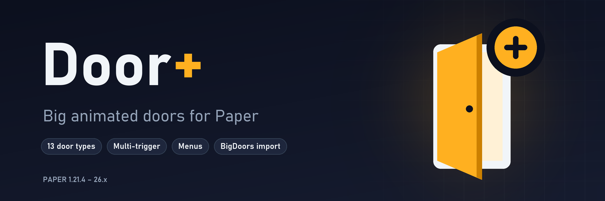

Door+ Wiki
Big animated doors for Paper 1.21.4 – 26.x
https://cristiaaaaan.github.io/DoorPlus-Wiki/
Door+ Wiki¶

Door+ turns any group of blocks into a moving door: drawbridges, portcullises, garage doors, elevators, windmills and 13 door types in total. Players open them with buttons, levers, pressure plates, redstone, custom furniture, NPCs or just by walking up to them, and owners decide who may use each door from a menu.
This wiki explains how to install Door+, build every door type, control access and configure the plugin.
Start here¶
-
Install Door+
Requirements, first start and the permissions to give your players.
-
Build your first door
A five-minute tutorial: a big door that opens with a lever and closes by itself.
-
Coming from BigDoors?
Import your existing doors, owners and power blocks with one command.
-
Pick a door type
What each of the 13 types does and how to build it.
Find your way¶
| I want to… | Read |
|---|---|
| Choose who can open or edit a door | Privacy and roles |
| Open a door with a button, plate, redstone, NPC or furniture | Triggers |
| Require a key or keycard | Keys |
| Move several doors together | Door groups |
| Change speed, direction, collisions or auto-close | Editing and deleting |
| Understand why a door does not move | Movement and animation |
| Look up a command or permission | Commands · Permissions |
| Change limits or the config | Limits · Configuration |
| Use MySQL or MariaDB | Storage |
| Show door information on scoreboards | Placeholders |
| Write a plugin that uses Door+ | Developer API |
| Fix a problem | Troubleshooting · FAQ |
Requirements at a glance¶
| Server | Paper 1.21.4 to 26.x, one jar for every version |
| Java | What your Paper version needs: 21 for 1.21.x, 25 for 26.x |
| Clients | Java Edition |
| Required plugins | None |
| Optional integrations | LuckPerms, WorldGuard, PlaceholderAPI, ItemsAdder, Nexo, Oraxen, CraftEngine, Citizens, FancyNpcs |
Support¶
- Discord: https://discord.gg/bHVeABaWF
- Before asking, run
/dp admin versionand include its output: it shows the Door+ version, the animation engine and the active integrations.
Getting started
Installation¶
This page explains how to install, update and remove Door+ on a server. It is for server owners and administrators.
Requirements¶
| Requirement | Supported |
|---|---|
| Server software | Paper 1.21.4 up to 26.x |
| Java | Java 21 or newer (Paper 26.x itself needs Java 25) |
| Players | Java Edition clients |
Door+ does not support:
- Spigot or CraftBukkit (Door+ uses Paper-only features).
- Folia.
- Bedrock players joining through Geyser.
Optional plugins that Door+ can use when they are installed: LuckPerms, PlaceholderAPI, WorldGuard, ItemsAdder, Nexo, Oraxen, CraftEngine, Citizens and FancyNpcs. See Integrations. None of them is required.
Download from the marketplace
Use the jar you downloaded from the marketplace where you bought Door+. A release jar checks the purchase with that marketplace when the server starts. See Licence, verification and privacy.
Install¶
- Stop the server.
- Put the Door+ jar in the
pluginsfolder of the server. - Start the server.
- Check the console: Door+ prints no error when it starts correctly.
- In game, as an operator, type
/dp admin version. You see the plugin version, the server version, the storage type and the active integrations.
Do not use /reload
Install, update and remove Door+ with a full server restart.
What happens on the first start¶
On the first start Paper downloads two libraries that Door+ lists in its plugin.yml: the HikariCP
connection pool and the MariaDB database driver. This happens once; the server needs internet access for it.
Door+ then creates the folder plugins/DoorPlus with these files:
| File | Content |
|---|---|
config.yml |
The configuration. See Configuration. |
lang/en.yml, lang/it.yml |
The English and Italian messages. See Language files. |
doorplus.db |
The SQLite database with doors, access entries, triggers and groups (default storage). See Storage. |
A release jar also writes a small hidden file .license with the state of the purchase check.
Let players create doors¶
With the default permissions every player can use, open, close and manage the doors on which they have a role, but only operators can create doors. The creation permissions default to op.
Give your players one of these permissions:
| Permission | Effect |
|---|---|
doorplus.create.* |
Create doors of every type. |
doorplus.create.<type> |
Create doors of one type, for example doorplus.create.big_door. |
The type ids are big_door, drawbridge, portcullis, sliding_door, garage_door, split_door,
folding_door, rolling_shutter, platform, revolving_door, windmill, flag and clock.
For example, with LuckPerms, to let every player create big doors:
Other things you may want to change:
doorplus.command.teleport(default op) lets players teleport to their doors.- Each player can own at most 10 doors of at most 500 blocks by default. Change
limits.doors-per-playerandlimits.max-door-blocksinconfig.yml, or give per-player limits with permissions. See Limits.
The full list is on the Permissions page.
Update to a new version¶
- Download the new jar from the marketplace.
- Stop the server.
- Replace the old Door+ jar in
pluginswith the new one. Keep theplugins/DoorPlusfolder. - Start the server.
On start, Door+ updates your files by itself:
- Configuration: keys added in the new version are written into your
config.ymlwith their default value and comment. Your values are kept. An invalid value does not stop the plugin: it is logged in the console and its default is used. - Language files: your files in
lang/are never overwritten. A message missing from your file is taken from the built-in file of the new version. - Database: if the new version needs a newer database layout, Door+ upgrades it. With SQLite it first
copies the database to
doorplus.db.bak-v<old version>in the same folder.
Going back to an older version
An older Door+ refuses to start on a database already upgraded by a newer version ("Database schema
version ... is newer than the supported version"). To downgrade with SQLite, restore the
doorplus.db.bak-v<version> copy made before the upgrade.
Uninstall¶
- If you want to keep the data for later, copy the
plugins/DoorPlusfolder somewhere safe. - Stop the server. Door+ finishes every running animation and saves its data while the server stops.
- Delete the Door+ jar from
plugins. - Delete the
plugins/DoorPlusfolder if you do not need the data. - Start the server.
The door blocks are normal blocks in the world. After the uninstall they stay exactly where they were when the server stopped: an open door stays open. If you want every door closed, close them before you stop the server.
Your first door¶
This tutorial walks you through building a simple big door, opening it, linking a lever, making it public and making it close by itself. It is for any player who can create doors; it takes about five minutes.
Before you start, you need the permission doorplus.create.big_door (operators have it). See
Installation.
1. Build the door¶
- Choose a wall with an opening 3 blocks wide and 4 blocks high.
- Fill the opening with a solid block, for example oak planks. The door is a flat panel: 3 wide, 4 high and 1 block thick.
- Leave free space on one side of the wall, at least 3 blocks deep. The door swings into that space.
Blocks that cannot be part of a door
By default, blocks with extra data (chests, signs, furnaces, banners and similar) and blocks such as bedrock or command blocks cannot be part of a door. Use plain building blocks for this tutorial.
2. Start the creation¶
- Empty one slot of your inventory, ideally the slot in your hand.
- Type
/dp create big_door frontgate.frontgateis the name of the door: 1 to 32 letters, digits,_or-. - You receive the Door+ creation stick and this message in chat: Creating a Big door. Use the stick you just received.
Each instruction starts with the step number, for example [1/6]. Under most instructions there are clickable chat buttons such as [Back] and [Cancel].
3. Select the region¶
- Read the instruction [1/6] Click the first corner of the door with the stick.
- Hold the stick and click the bottom-left block of the panel. Left or right click both work, and the stick never breaks blocks. Chat shows First corner set at x, y, z.
- Read [2/6] Click the opposite corner of the door.
- Click the top-right block of the panel, diagonally opposite to the first one. Chat shows
Second corner set at x, y, z. Region: 3x4x1 (or
1x4x3, depending on how the wall is oriented).
A light blue outline of particles now shows the selected region. Only you can see it.
4. Choose the pivot¶
- Read [3/6] Click the block of the door the rotation passes through (the pivot).
- Click the bottom block of the column where the hinges should be (the left or the right edge of the panel). Chat shows Pivot set at x, y, z.
The door will turn around the vertical line that passes through this block. The pivot block is outlined in orange.
5. Choose the direction¶
- Read [4/6] Choose the opening direction: with the buttons [Clockwise] and [Counter-clockwise]. The highlighted one (green, bold) is the current choice.
- Look at the green outline: it shows where the door will be when it is open, with the highlighted direction. If the outline is red, something is in the way.
- Click the direction you want. Chat shows Direction: Clockwise (or the other one).
If the door ends up opening the wrong way, click [Back] to return to this step.
6. Skip the triggers for now¶
- Read [5/6] Add triggers to open the door (optional). Collected: 0.
- Click [Done]. You will add a lever later in this tutorial.
7. Confirm¶
- Read [6/6] Check the summary and confirm: and the summary: type, name, world, size, pivot, direction, parameters and triggers.
- Click [Create].
- Chat shows Door frontgate created (#1, 12 blocks). The number after
#is the door id. The creation stick disappears from your inventory.
If something is wrong, chat shows the reason and takes you back to the step to fix. See Creating a door for every error.
8. Open and close the door¶
- Type
/dp toggle frontgate. The door swings open. - Type
/dp toggle frontgateagain. The door closes.
/dp open frontgate and /dp close frontgate only open or only close.
- Type
/dp. The menu Door+ — Your doors opens and shows your doors. - Right-click the icon of
frontgate. The door opens or closes. - Left-click the icon to open the door menu, then click Open / Close.
9. Add a lever¶
- Place a lever on a block next to the door, but not on the door itself (a trigger cannot move with the door).
- Type
/dp menu frontgate. The menu Door frontgate opens. - Click Triggers, then Add trigger. The menu New trigger — frontgate opens.
- Click Block. The menu closes and chat shows Click the block to use as a trigger. You have 30 seconds.
- Click the lever. Chat shows Linked Block trigger #1 to frontgate. and the buttons [Add another] and [Done].
- Click [Done]. The triggers menu opens again and lists the lever.
- Flip the lever. The door opens or closes.
You can do the same with /dp trigger add frontgate block, and you can also collect triggers during the
creation (step 6). See Triggers for every kind of trigger.
10. Make the door public¶
A new door is Private: only you (and the admins you add) can use it, also through the lever.
- In the menu Door frontgate, read the button Privacy: Private.
- Left-click it twice: Private → Restricted → Public.
- Type
/dp privacy frontgate public. - Chat shows Privacy of frontgate set to Public.
Now every player can open the door with the lever. See Privacy and roles for the Restricted mode and the access list.
11. Close the door automatically¶
- In the menu Door frontgate, find Auto-close (value off).
- Shift + left-click it once (+10 seconds). The value becomes 10 s.
- Type
/dp set frontgate auto-close 10. - Chat shows auto-close of frontgate set to 10.
The door now closes 10 seconds after it opens. Set the value back to 0 to turn auto-close off. See
Movement and animation for how auto-close behaves.
Next steps¶
- Creating a door: every step of the creation for every door type.
- Door types: the 13 types and what each one does.
- Editing and deleting: every setting and command.
- Menus: every button of every menu.
Coming from BigDoors¶
This page explains how to move your existing BigDoors doors into Door+ with one command. It is for server administrators who are replacing BigDoors (version 1) with Door+.
The import reads the BigDoors database, creates the same doors in Door+ with their owners, co-owners and power blocks, and writes a report. It never changes the BigDoors database: Door+ opens it read-only.
Before you start¶
| Requirement | Why |
|---|---|
BigDoors version 1 database (doorDB.db, SQLite) |
This is the only format Door+ can read. |
The database uses the current BigDoors schema (schema version 9) |
Older databases are refused. Start the latest BigDoors v1 release once: it updates its own database. |
Permission doorplus.admin.import |
Needed to run the command (operators have it by default). |
| The worlds of your doors are loaded | Doors in unloaded worlds are still imported, but Door+ cannot read the world to pick a default opening direction for them (see What is mapped). |
Never run BigDoors and Door+ on the same doors
Two plugins moving the same blocks corrupt them. Remove BigDoors as soon as the import is done, before players use the doors. If BigDoors is still enabled when you start the import, Door+ reminds you: BigDoors is enabled. Remove it after the migration: two plugins moving the same blocks corrupt them.
Step by step¶
- Update BigDoors to its latest v1 release, start the server once, then stop it. This brings the database to
schema version
9. - Make a copy of
plugins/BigDoors/doorDB.dbsomewhere safe (good practice before any migration). - Install Door+ (see Installation) and start the server.
-
Run a test import that writes nothing:
You see Dry run: simulating the import from <file>. Nothing will be written., then a summary such as Dry run complete: 12 doors would be imported, 1 skipped, 2 to check, 12 triggers and 5 access entries would be created.
-
Read the report (see Reading the report). If doors are skipped or need checking, look at why before going on.
-
Run the real import:
You see Importing doors from the BigDoors database <file>..., then Import complete: ... with the same counters.
-
Fix the doors listed as "to check" (see Doors to check).
- Stop the server, delete the BigDoors jar from
plugins/, and start the server again. You can delete theplugins/BigDoors/folder once you are happy with the result.
Tip
You can also run the command from the server console. Only one import can run at a time: a second one is refused with An import is already running. Wait for it to finish.
The command¶
| Part | Meaning |
|---|---|
bigdoors |
Required. The only import source. |
[file] |
Optional. Path of the BigDoors database. Without it Door+ reads plugins/BigDoors/doorDB.db. |
[--dry-run] |
Optional. Does everything (reading, mapping, report) except saving the doors. |
file and --dry-run can be given in any order. How a custom file is found:
- An absolute path is used as it is, e.g.
/dp admin import bigdoors /backups/doorDB.db. - A relative path is first looked up from the server folder. If nothing exists there, Door+ looks inside
plugins/. So/dp admin import bigdoors BigDoors/old.dbfindsplugins/BigDoors/old.db. - The path cannot contain spaces (each space starts a new command argument) and can be at most 260 characters.
If the file does not exist you see BigDoors database not found: <file>.
Reading the report¶
The report goes to two places.
In chat (or console): the summary line, then up to 15 detail lines, skipped doors first, then doors to check:
- Skipped BigDoors door #<id> (<name>): <reason>.
- To check: <name> (BigDoors #<id>): <reason>. Fix it with /door set <name> direction or base-state.
When there are more lines you see ...and <count> more. See the report file. The last line gives the file: Full report: <file>.
In the log file plugins/DoorPlus/import-bigdoors-<yyyy-MM-dd>.log (date of the import). Every run of that day,
dry runs included, is appended to the same file. A run looks like this:
=== BigDoors import 2026-11-15T14:03:27.512 ===
Source: plugins/BigDoors/doorDB.db
Imported: 2 | Skipped: 1 | To check: 1 | Triggers created: 2 | Access entries created: 1
[IMPORTED] bigdoors:1 -> #12 castle_gate (BIG_DOOR, owner Steve 0f3c1a2b-..., world 5b1e7d90-..., base [100,64,200 -> 100,70,205], state 0, direction CW)
[TRIGGER] castle_gate: REDSTONE FOLLOW at 98,64,199
[ACCESS] castle_gate: PLAYER 8d2e4f11-... ADMIN
[IMPORTED] bigdoors:2 -> #13 bridge (DRAWBRIDGE, owner Alex 3a9b..., world 5b1e7d90-..., base [120,64,210 -> 124,64,216], state 0, direction NORTH, pivot axis X)
[TO CHECK] bigdoors:2 bridge: POSITION_MISMATCH
[TRIGGER] bridge: REDSTONE FOLLOW at 122,63,217
[SKIPPED] bigdoors:3 'test': NO_OWNER (no creator in sqlUnion)
| Line | Content |
|---|---|
[IMPORTED] |
BigDoors id, the new Door+ id (#12; - in a dry run), name, type, owner, world, closed position (base), state (0 closed, 1 open), opening direction and, for drawbridges, the pivot axis. |
[TO CHECK] |
A door that was imported but needs your attention, with the reason code. |
[TRIGGER] |
The redstone trigger created from the BigDoors power block. |
[ACCESS] |
A co-owner added to the door, with its role. |
[SKIPPED] |
A door that was not imported, with the reason code and a technical detail. |
Tip
Use the Door+ id from the [IMPORTED] line (e.g. #12) in commands. It always points at the right door,
even if several players own a door with the same name.
What is mapped¶
| BigDoors | Door+ |
|---|---|
| Type Door | big_door (see Big door) |
| Type Drawbridge | drawbridge (see Drawbridge) |
| Type Portcullis | portcullis (see Portcullis) |
| Type Sliding door | sliding_door (see Sliding door) |
| Name | Same name. Characters other than letters, digits, _ and - become _; cut to 32 characters; an empty name becomes door. If the owner already has a door with that name, _2, _3... is added. |
| Creator | Owner of the door. If BigDoors lists several creators, the first one becomes the owner. |
Co-owner with BigDoors permission level 1 |
Access entry with role Admin. |
Co-owner with BigDoors permission level 2 |
Access entry with role User. |
| — | Privacy Restricted if the door has co-owners, otherwise Private (see Privacy and roles). |
| Power block | A Redstone trigger on that block with action Follow state: powered = open, unpowered = closed. "Allow redstone" is switched on for the door. |
| Engine (rotation point) | Pivot of big doors and drawbridges. |
| Open direction | Clockwise, Counter-clockwise, Up, Down, North, East, South, West, as in BigDoors. |
| No open direction | The default direction of the type, worked out from the blocks around the door. If the world is not loaded, the first direction the type allows. |
| Blocks to move (portcullis, sliding door) | Same value; 0 or less means the type default. |
| Auto close (seconds) | Same value; 0 or less means off. |
| Locked | Locked. |
| Open or closed | Door+ stores the closed position and the state. For an open door, Door+ works out where the closed door is, then checks that the result matches the blocks BigDoors saved. If it does not match, the door is imported as it stands and listed as "to check". |
Drawbridges get a pivot axis: the horizontal axis of an upright bridge, otherwise the axis given by the BigDoors engine side. If neither is known, the axis is deduced from the shape of the bridge and the door is listed as "to check".
Other settings of an imported door take Door+ values: Protect blocks follows defaults.protect-blocks; speed
×1, no key, region access off, default collisions.
BigDoors player names are added to the Door+ name list, so you can type co-owners' names in commands even if they never joined since Door+ was installed. A name that is not a valid Minecraft name is replaced by the first 8 characters of the player's UUID.
What is skipped and why¶
| Reason in chat | Code in the log | Cause |
|---|---|---|
| already imported | ALREADY_IMPORTED |
This BigDoors door was imported before (see Running it again). |
| door type not supported | UNKNOWN_TYPE |
The BigDoors type is not one of the four above. |
| the door has no creator | NO_OWNER |
BigDoors has no creator with a valid UUID for this door. |
| invalid data | INVALID_DATA |
The world id is not valid, or the row has data Door+ cannot read. The log shows the detail. |
BigDoors options without a Door+ equivalent are ignored: notifications and "bypass protections".
Doors to check¶
A door "to check" is imported and works, but its position or rotation may not match what you had in BigDoors.
| Reason in chat | Code in the log | What happened |
|---|---|---|
| the computed position does not match the BigDoors one, imported closed in its current position | POSITION_MISMATCH |
Door+ could not reproduce the BigDoors position. The blocks as they stand now are the closed position. |
| open door without an opening direction, imported closed in its current position | OPEN_WITHOUT_DIRECTION |
The door was open in BigDoors but had no direction, so Door+ cannot know where it closes. The blocks as they stand now are the closed position. |
| the rotation axis of the drawbridge was deduced from its shape | PIVOT_AXIS_GUESSED |
The drawbridge may rotate around the wrong axis. |
Test each door with /dp toggle <door> and fix it as follows. These commands need the Admin role on the door, or
the bypass permissions an operator has (see Permissions).
The door opens the wrong way. Change the direction while the door is closed:
Tab completion lists the directions the door allows (cw, ccw, up, down, north, east, south, west
depending on the type).
The door was open in BigDoors, and Door+ now treats that open position as closed. Move it to its real closed position, then tell Door+ that this is the closed position:
- Run
/dp set #12 direction <direction>, choosing the direction that moves the door towards where it should be closed. - Run
/dp toggle #12. The door moves to its real closed position (Door+ thinks it is now open). - Run
/dp set #12 base-state. You see The current position of <door> is now its closed state. Door+ also reverses the direction, so the next opening goes back the way it came. - Run
/dp toggle #12to check that the door opens correctly.
The drawbridge rotates around the wrong axis. Redefine it with /dp redefine #12 and select the pivot again
(see Editing and deleting).
Running it again¶
Running the import again is safe. Every imported door remembers which BigDoors door it came from, and that door is skipped as already imported. Only BigDoors doors that were not imported yet are added.
If you delete an imported door in Door+ and run the import again, that door is imported again.
If saving fails, nothing is imported (The import failed while saving: nothing was imported. Details are in the server console.). Fix the cause and run the command again.
Limits are not applied¶
Imported doors skip every check a player goes through when creating a door: the limits in limits.* (number of
doors, door size, triggers, blocks to move, auto-close seconds, access entries, trigger distance),
worlds.disabled, types.<type>.enabled and protection plugins such as WorldGuard. The import does not check
for overlaps with doors you already created in Door+ either.
Note
Imported doors count towards their owner's door limit. A player who already owns more doors than
limits.doors-per-player keeps all imported doors, but cannot create new ones until they are under the limit.
See Limits.
Common messages¶
| Message | What to do |
|---|---|
| Unsupported BigDoors database version <version> (expected 9). Start the latest BigDoors once so it updates its database, then retry. | Install the latest BigDoors v1, start the server once, then retry. |
| Cannot read the BigDoors database. Details are in the server console. | The file is not a valid BigDoors SQLite database, or it is damaged. Check the console. |
| Cannot write the report file. Details are in the server console. | The doors were imported (or simulated), only the log file could not be written. Check the folder permissions of plugins/DoorPlus/. |
| <door> cannot move: the block at x, y, z cannot be animated. (when toggling) | The door contains a block Door+ does not animate. See Movement and animation. |
Doors
Creating a door¶
This page describes the guided creation of a door in full: how to start it, every step for every door type, the preview, how it ends, and every error you can get with its fix. It is for players who create doors and for staff who help them.
For a short hands-on example, see Your first door.
Before you start¶
You can start a creation only if all of these are true. The checks run in this order; the first one that fails stops the start with the message shown.
| Check | Message if it fails |
|---|---|
The type is enabled in types.<type>.enabled |
Doors of type ... are disabled on this server. |
You have doorplus.create.<type> |
You do not have permission to do this. |
You own fewer doors than your limit (limits.doors-per-player, default 10) |
You already own the maximum number of doors (...). |
| You are not already creating or redefining a door | You are already creating a door. Finish it or type /door cancel. |
| You have a free inventory slot | You need a free inventory slot for the creation stick. |
Your door limit can be raised per player with permissions, and doorplus.admin.bypass.limits ignores it.
See Limits.
Start the creation¶
Type /dp create <type> [name].
<type>is the type id:big_door,drawbridge,portcullis,sliding_door,garage_door,split_door,folding_door,rolling_shutter,platform,revolving_door,windmill,flagorclock. Case does not matter and-works instead of_. Tab completion lists only the enabled types you may create.[name]is optional. If you leave it out, the first step asks for the name in chat.
If the name you type is not valid, the command stops with Invalid name: use 1-32 letters, digits, _ or -. If you already own a door with that name, the creation starts and the first step asks for another name.
- Type
/dpto open the main menu Door+ — Your doors. - Click Create a door. The menu Choose the door type lists the enabled types you may create. If there are none, the button says You cannot create any door type.
- Click a type. The menu closes and the creation starts. The first step asks for the name in chat.
When the creation starts you receive the Door+ creation stick and the message Creating a ... Use the stick you just received.
The creation stick¶
- The stick goes in the slot in your hand if it is empty, otherwise in the first empty slot.
- Left click and right click on a block both select it. The click never breaks or uses the block.
- Clicking with the stick when no block is expected shows Use the buttons or the chat to continue. above the hotbar.
- You cannot drop the stick, move it in your inventory, put it in a container, craft with it or lose it on death.
- When the creation ends for any reason, the stick is removed. A creation stick found outside a creation is deleted.
How the steps work¶
- Each instruction starts with [step/total], for example [3/7]. The total can change after you select the region, because some steps depend on the shape (see the table below).
- Most steps show clickable chat buttons. [Back] returns to the previous step (it is missing on the first step). [Cancel] ends the creation.
- Only the newest buttons work. Clicking an older button shows That button is no longer valid.
- When a step asks for text in chat, your message is hidden from other players. Type
cancelto abort the chat input. The chat input times out after 30 seconds.
Steps in order¶
| # | Step | What you do | Shown for |
|---|---|---|---|
| 1 | Name | Type the name in chat | Only if you did not give a valid, free name in the command |
| 2 | First corner | Click a block with the stick | Every type |
| 3 | Second corner | Click the opposite corner | Every type |
| 4 | Pivot | Click a block of the region | big_door, drawbridge, folding_door, flag |
| 5 | Pivot axis | Click a second block on the pivot row | drawbridge, only when the axis is ambiguous |
| 6 | Direction | Click one of the offered directions | Types with more than one valid direction for this region |
| 7 | Parameters | Click a value or type one | split_door (split mode), rolling_shutter (visible rows) |
| 8 | Triggers | Collect triggers, or click [Done] | Every type |
| 9 | Confirm | Check the summary and click [Create] | Every type |
Steps per type:
| Type | Steps after the two corners |
|---|---|
big_door |
Pivot, Direction (Clockwise / Counter-clockwise) |
drawbridge |
Pivot, Pivot axis (only if ambiguous), Direction (two, depending on the axis) |
portcullis |
Direction (Up / Down) |
sliding_door |
Direction (North / South / East / West) |
garage_door |
Direction (two, perpendicular to the door), only if the region is a vertical wall one block thick |
split_door |
Parameters: split mode |
folding_door |
Pivot (on a vertical edge), Direction (two, perpendicular to the door) |
rolling_shutter |
Direction (in the plane of the shutter), Parameters: visible rows |
platform |
Direction (Up / Down / North / East / South / West) |
revolving_door |
Direction (Clockwise / Counter-clockwise) |
windmill |
Direction (Clockwise / Counter-clockwise) |
flag |
Pivot (on a vertical edge) |
clock |
None |
Then every type has Triggers and Confirm. The shape each type needs is explained on its page under Door types.
1. Name¶
Chat shows Type the name of the door in chat (1-32 letters, digits, _ or -).
- A name is 1 to 32 characters: letters, digits,
_and-. No spaces. - You cannot own two doors with the same name. Names are compared without case:
Gateandgateare the same name. Other players can use the same name for their own doors. - An invalid or taken name shows the error and asks again.
- Chat shows Name: ... when the name is accepted.
Warning
Typing cancel, or waiting 30 seconds, during the name step ends the whole creation if no name was set
yet (Door creation cancelled.).
2–3. Corners¶
- Click the first corner of the door with the stick. Chat shows First corner set at x, y, z.
- Click the opposite corner of the door. Chat shows Second corner set at x, y, z. Region: AxBxC. The size is east-west × height × north-south.
The two blocks are opposite corners of a box; every block inside the box belongs to the door. Air and the
blocks in blocks.replaceable (water, lava, snow layers, grass, ferns, seagrass) are not part of the door.
- The first corner cannot be in a world listed in
worlds.disabled(Doors cannot be created in the world ...). - The second corner must be in the same world as the first (Both corners must be in the same world as the door.).
Clock: where the face points
For a clock, the face of the clock points toward you when you click the second corner. Stand in front
of the clock when you click it.
4. Pivot¶
Click the block of the door the rotation passes through (the pivot). Chat shows Pivot set at x, y, z.
The block must be inside the region (The pivot must be a block inside the selected region.). Each type has its own rule:
| Type | Where the pivot goes |
|---|---|
big_door |
Any block of the region. The door turns around the vertical line through it. |
drawbridge |
A block on an edge of the region: the hinge row the bridge turns around. |
folding_door, flag |
A block on one of the two vertical edges of the panel. |
5. Pivot axis (drawbridge only)¶
If you click a corner block as the pivot of a drawbridge that is not a flat wall, the hinge row could run in two directions. Chat shows The pivot axis is ambiguous: click a second block on the pivot row.
Click another block of the hinge row, at the same height as the pivot. Chat shows Pivot axis set.
6. Direction¶
Choose the opening direction: followed by one button per valid direction. The current choice is green and bold. When you arrive at this step, the type default is already selected and the preview already shows where the door goes (see Preview). Click a direction to choose it and continue; chat shows Direction: ...
7. Parameters¶
Choose ... (current: ...): followed by the suggested values, [Other value] and [Continue].
- Click a value to choose it. Chat shows the new value and the next parameter (or the next step) follows.
- [Continue] keeps the current value.
- [Other value] asks Type the value of ... in chat. An invalid value shows
Invalid value: ... and asks again. Typing
cancelreturns to the buttons.
| Type | Parameter | Values |
|---|---|---|
split_door |
Split mode | Two halves (side by side), Two halves (stacked), Four quadrants (iris) |
rolling_shutter |
Visible rows | 0 up to the number of rows minus 1 |
The other type settings are changed after the creation from the Type settings menu or with /dp set.
See Editing and deleting.
8. Triggers¶
Add triggers to open the door (optional). Collected: N. with [Add trigger], [Done], [Back] and [Cancel].
The door does not exist yet, so the triggers you add here are collected and linked right after the door is created. To add one:
- Click [Add trigger]. Chat shows What do you want to use as trigger? with [Block], [Redstone], [Entity], [Proximity] and [Back].
- Choose the kind:
- [Block]: click a block (button, lever, pressure plate, any block, or a custom block).
- [Redstone]: click a block that will receive redstone power.
- [Entity]: click an entity, a furniture or an NPC.
- [Proximity]: type the radius in chat (1 to
limits.max-proximity-radius, default 16), then click [Door centre] or [My position] to place the centre of the zone.
- For Block, Redstone and Entity you have
triggers.selection-timeout-seconds(default 30) seconds to click. Chat then shows Captured ... at x, y, z. It will be linked when the door is created. - The step comes back with the new count. Add more, or click [Done].
Each click on [Add trigger] collects one trigger. Clicking the same source twice shows
That source has already been captured. Block and Entity triggers are created with the action Toggle;
Redstone and Proximity triggers with Follow state. You need the permission for each kind of trigger
(doorplus.trigger.<kind>, given to every player by default).
After the door is created, chat shows Triggers linked: N/M. If one cannot be linked (too far from the door, inside the door, trigger limit reached and so on), chat shows Could not link the ... trigger at x, y, z: and the reason. The door is created anyway. See Triggers.
9. Confirm¶
Check the summary and confirm: followed by the type, name, world, size, pivot, direction, parameters and number of triggers, and the buttons [Create], [Back] and [Cancel].
Click [Create]. Door+ runs the checks below. If they pass, chat shows Door ... created (#id, N blocks)., the stick is removed and the collected triggers are linked.
If the destination of the door is blocked, you also see Warning: the destination of the door is obstructed. It will not move until the space is free. The door is created anyway.
A new door starts with the values of the defaults section of config.yml: privacy Private, redstone off,
protected blocks off, auto-close off, region access off.
Preview¶
While you create a door you see particle outlines that only you can see. They are redrawn every half second and only when you are within about 128 blocks.
| Colour | Shows |
|---|---|
| Light blue | The selected region (after the first corner: that block) |
| Orange | The pivot, after the pivot step |
| Green | Where the door goes when it moves, once the direction is known |
| Red | Same as green, but something is in the way |
Ending a creation¶
| Event | Result |
|---|---|
You click [Cancel] or type /dp cancel |
Door creation cancelled. |
No activity for creation.timeout-seconds (default 120) |
Door creation cancelled because of inactivity. A warning comes 15 seconds before: The door creation will be cancelled in 15 seconds of inactivity. |
| You die or change world | Door creation cancelled. |
| You leave the server | The creation ends without a message. |
| You click [Create] and the door is saved | The creation ends normally. |
Activity means a successful click with the stick, a click on a button or a chat answer. In every case the stick is removed.
Validation errors¶
When you click [Create], Door+ checks the door in the order below. At the first problem it shows the message and brings you back to the step where you can fix it. The creation stays open.
| Message | Cause | Fix (step you return to) |
|---|---|---|
| Invalid name ...: use 1-32 letters, digits, _ or -. | Name missing or not valid | Type a valid name (Name) |
| You already own a door named .... | You already have a door with this name | Type another name (Name) |
| Select both corners first. | A corner is missing | Click both corners (First corner) |
| The world of the door is not loaded. | The world was unloaded | Load the world, then select again (First corner) |
| Doors cannot be created in the world .... | The world is in worlds.disabled |
Build in another world (First corner) |
| The region goes beyond the height limits of the world. | The region is above or below the build limits | Select a lower or higher region (First corner) |
| Shape error of the door type | The region, pivot, direction or parameter does not fit the type | See Shape errors |
| The region has more than N blocks, the most you can use for a door. | More door blocks than your size limit (limits.max-door-blocks, default 500) |
Select a smaller region, or ask for a higher limit (First corner) |
| The region contains no blocks. | The region holds only air or replaceable blocks | Build the door first (First corner) |
| The block ... at x, y, z cannot be part of a door. | A blacklisted block, a block not in the whitelist, or a block with extra data such as a chest or a sign | Remove that block or select around it (First corner) |
| The region overlaps the door .... | The region touches a block of another door | Select a region that does not touch other doors (First corner) |
| You cannot create a door here (denied by ...). | A protection plugin (for example WorldGuard) does not allow you to build in the region or where the door moves | Build where you are allowed, or ask staff (First corner) |
| The creation was cancelled by another plugin. | Another plugin blocked the creation | Ask staff (Confirm) |
| You already own the maximum number of doors (N). | You reached your door limit during the creation | Delete a door or ask for a higher limit (Confirm) |
The blocks that can be part of a door are set in the blocks section of config.yml. Staff with
doorplus.admin.bypass.protection are not stopped by protection plugins; see
Permissions.
Shape errors¶
Shape errors come from the door type. They can also appear right when you click a pivot.
| Message | Types | Fix (step you return to) |
|---|---|---|
| Select both corners of the door first. | All | Click both corners (First corner) |
| The door must be one block thick. | split_door, rolling_shutter, windmill |
Select a flat region (First corner) |
| The door must be a vertical wall, one block thick. | garage_door, folding_door, flag |
Select a vertical wall 1 block thick (First corner) |
| The footprint must be square (now A × B). | revolving_door |
Make the region as deep as it is wide (First corner) |
| The two sides of the face must be equal. | windmill |
Make the face square (First corner) |
| A clock must be 2 blocks thick with a square vertical face. | clock |
Select 2 layers with a square face (First corner) |
| The door must be at least 2 blocks wide. | folding_door, flag |
Make the panel wider (First corner) |
| The door is too small for this split mode: each split side needs at least 2 blocks. | split_door |
Choose another split mode or a bigger door (First corner) |
| Click a block of the door to set the pivot. | Types with a pivot | Click a pivot (Pivot) |
| The pivot must be a block of the door. | Types with a pivot | Click a block inside the region (Pivot) |
| The pivot must be on an edge of the door. | drawbridge |
Click a block on the edge of the region (Pivot) |
| The pivot must be on one of the two vertical edges of the door. | folding_door, flag |
Click a block on the left or right edge (Pivot) |
| The pivot axis is not set: click a second block on the pivot row. | drawbridge |
Click a second block (Pivot axis) |
| Click another block of the pivot row, at the same height as the pivot. | drawbridge |
Click a block in line with the pivot, same height (Pivot axis) |
| This direction is not valid for this door. | Types with a direction | Choose another direction (Direction) |
| Visible rows must be between 0 and N. | rolling_shutter |
Choose a smaller value (Parameters) |
| Unknown split mode. | split_door |
Choose a split mode (Parameters) |
Redefining the region of an existing door¶
/dp redefine <door> (or Redefine region in the door menu) runs the corner, pivot, pivot axis and
direction steps again on an existing door, then shows the summary with [Apply] instead of [Create].
The access list, triggers and settings are kept. The rules, checks and stick are the same as for a new door,
except that the name is not asked, there are no parameter and trigger steps, and the new region must be in
the same world. See Editing and deleting.
Door types
Door types¶
Door+ has 13 door types. This page compares them and helps you pick the right one; each type has its own page with build rules, creation steps, options and tips. It is for everyone who creates doors.
All types at a glance¶
The id is what you type in /dp create <type> [name]. Ids are not case-sensitive and a dash works as well as an
underscore (big-door = big_door). Tab completion only lists the types you are allowed to create and that are
enabled on the server.
| Type | Id | What it does | Shape required | Kind |
|---|---|---|---|---|
| Big door | big_door |
Swings 90° around a vertical hinge, like a normal door | Any box | Open / closed |
| Drawbridge | drawbridge |
Tips 90° around a horizontal hinge row: a wall falls flat, or a floor rises to a wall | Any box | Open / closed |
| Portcullis | portcullis |
Slides straight up or down | Any box | Open / closed |
| Sliding door | sliding_door |
Slides sideways (north, east, south or west) | Any box | Open / closed |
| Garage door | garage_door |
Slides up and then folds back under the ceiling (up-and-over) | Vertical wall, 1 block thick | Open / closed |
| Split door | split_door |
Splits into 2 halves or 4 quarters that slide apart | Flat, 1 block thick (wall or floor) | Open / closed |
| Folding door | folding_door |
Folds in two like a book while it swings open | Vertical wall, 1 block thick, at least 2 wide | Open / closed |
| Rolling shutter | rolling_shutter |
Rolls up into its top (or any) edge; the rolled-up rows are stored, so it needs no free space | Flat, 1 block thick (wall or floor) | Open / closed |
| Platform / elevator | platform |
Moves between 2 to 8 stops in one direction and carries players | Any box | Stops |
| Revolving door | revolving_door |
Turns 90° (or 180°, 270°) around its centre every time it is used | Square footprint (width = depth) | Turns on each use |
| Windmill | windmill |
Spins continuously while active | Flat, 1 block thick, square face | Perpetual |
| Flag | flag |
Waves continuously while active | Vertical wall, 1 block thick, at least 2 wide | Perpetual |
| Clock | clock |
Shows the time with a minute hand and an hour hand | 2 blocks thick, square vertical face | Perpetual |
What the kinds mean:
- Open / closed: two positions. The door is built in its closed position; opening moves it to the open position, closing moves it back.
- Stops: the platform has a list of positions (stop 0, 1, 2, ...) and moves between them.
- Turns on each use: the revolving door has no open position. Each use turns it and it always counts as closed.
- Perpetual: the windmill, flag and clock have the states Active and Inactive. While active, the blocks keep moving as long as a player is nearby. See Perpetual types.
How to choose¶
| You want... | Use |
|---|---|
| A gate or door that swings open | Big door; Folding door if there is little room to swing |
| A castle bridge over a moat, or a hatch in a floor | Drawbridge |
| A gate that goes into the ceiling or into the ground | Portcullis |
| A door that slides into a wall pocket | Sliding door |
| Two wings that slide apart, or a hatch that opens like an iris | Split door |
| A garage door that ends up under the ceiling | Garage door |
| A shop shutter, or a door where there is no space at all for the open position | Rolling shutter |
| An elevator or a moving floor with several floors | Platform / elevator |
| An entrance that turns around a central axis | Revolving door |
| Decorations that move by themselves | Windmill, Flag, Clock |
Tip
Every type except the rolling shutter, the revolving door and the three perpetual types needs free space where the door ends up when it opens. By default air, water, lava, snow, grass and ferns count as free; barriers, light blocks and structure voids count as free too and come back when the door leaves. See Movement and animation.
Who can create each type¶
Two things must allow a type before a player can create it:
| Check | Default | Notes |
|---|---|---|
Permission doorplus.create.<type> (for example doorplus.create.big_door) |
Operators only | doorplus.create.* gives every type. See Permissions. |
Config key types.<type>.enabled (for example types.big_door.enabled) |
true for every type |
false stops new doors of that type. Existing doors of that type keep working. |
When a type is disabled, /dp create answers Doors of type ... are disabled on this server. and the type disappears
from tab completion.
Steps during creation¶
All types start the same way: name (if you did not type it in the command), first corner, second corner. Then come the steps of the type, then the optional triggers and the confirmation. The full procedure is on Creating a door.
| Type | Extra steps after the two corners |
|---|---|
| Big door | Pivot, direction |
| Drawbridge | Pivot, second click on the pivot row (only if the pivot is on a corner), direction |
| Portcullis | Direction |
| Sliding door | Direction |
| Garage door | Direction |
| Split door | Split mode |
| Folding door | Pivot (hinge), direction |
| Rolling shutter | Direction, visible rows |
| Platform | Direction |
| Revolving door | Direction |
| Windmill | Direction |
| Flag | Pivot (pole) |
| Clock | None (the side you stand on when you click the second corner becomes the front) |
The direction step is skipped when the door has only one valid direction.
Type settings¶
Some types have extra settings. You change them by command with /dp set <door> <option> <value> or in the door menu
under Type settings. You need the Admin role on the door.
| Type | Option | Values | Default |
|---|---|---|---|
| Split door | mode |
halves_a, halves_b, quadrants |
halves_a |
| Rolling shutter | visible-rows |
0 to rows − 1 | 0 |
| Platform | stops |
Comma-separated distances, e.g. 0,5,10 |
0,<size along the direction> |
| Revolving door | quarter-turns |
1, 2, 3 | 1 |
| Windmill | degrees-per-second |
1 to 360 | types.windmill.degrees-per-second (30) |
| Clock | time-source |
world, real |
world |
mode, visible-rows and stops change the shape of the movement, so you can only change them while the door is
closed (state 0) and not moving. The other three can be changed at any time.
Settings shared by all types (direction, blocks to move, speed, auto-close, collisions...) are on Editing and deleting.
Perpetual types¶
The windmill, flag and clock work differently from the other types:
- Opening a perpetual door makes it Active; closing it makes it Inactive. Toggle switches between the two.
- While active, the door is only animated when its chunks are loaded and a player is within
animation.viewer-rangeblocks (default 64). Otherwise its blocks rest in the world in their built position. Door+ checks this everyperpetual.check-interval-ticks(default 20 ticks). - An active door stays active after a server restart and starts moving again when a player comes near.
- Perpetual doors have no collisions: players walk through the moving blocks.
Details are in Movement and animation.
Big door¶
The big door swings 90° around a vertical hinge, like an ordinary door or a castle gate. This page explains how to
build one, what to click during creation and how it behaves. Creation id: big_door.
What it does¶
| State | Position |
|---|---|
| Closed (0) | The blocks where you built them |
| Open (1) | The blocks turned 90° around the hinge column, clockwise or counter-clockwise seen from above |
Opening turns the door one way; closing turns it back. Stairs, logs, trapdoors and other blocks with a direction turn with the door, so they keep facing the right way.
How to build it¶
- Shape: any box. Usually a wall 1 block thick, but a thick door works too.
- Front: the big door has no front; it can open to either side. You choose the side with the direction.
- Hinge: any column of the door. Usually you use one of the two end columns. A column in the middle makes the door pivot around its centre: one part swings out on each side.
- Free space: the open position must be free, and so must every block the door passes through while it swings (a quarter circle around the hinge). See Free space.
Worked example: a gate 4 blocks wide and 5 blocks tall, 1 block thick, running east–west, with the hinge on the west end.
- Closed, the gate fills 4 × 5 blocks along the wall.
- Open clockwise, it stands 4 blocks deep towards the south, 5 blocks tall, with the hinge column unchanged. Open counter-clockwise, it goes towards the north.
- While it swings, the far end draws a quarter circle with a radius of 3 blocks, so the quarter circle between the wall and the open position must be empty.
Creating it¶
- Type
/dp create big_door [name]. You receive the creation stick. - If you did not give a name, type it in chat.
- Click the first corner of the door with the stick (left or right click).
- Click the opposite corner. The chat shows the size of the region.
- Pivot: click any block of the hinge column. Only its column matters; the height you click at does not. Chat confirms Pivot set at x, y, z.
- Direction: click Clockwise or Counter-clockwise. The pre-selected one is the default (see below).
- Add triggers if you want, then click [Create] on the summary.
The general procedure, the preview and the trigger step are on Creating a door.
Opening direction¶
| Direction | Meaning (seen from above) |
|---|---|
Clockwise (cw) |
North → east → south → west |
Counter-clockwise (ccw) |
North → west → south → east |
For a wall running east–west:
| Hinge on the... | Clockwise opens towards | Counter-clockwise opens towards |
|---|---|---|
| West end | South | North |
| East end | North | South |
Default: clockwise if its open position is free, otherwise counter-clockwise if that one is free, otherwise
clockwise. You can change the direction later with /dp set <door> direction cw|ccw or the Direction button of
the door menu, but only while the door is closed and not moving.
Type options¶
The big door has no type settings. The general settings (speed, auto-close, collisions...) are on Editing and deleting. Blocks to move does not apply to this type.
On the move¶
- Speed: a quarter turn takes the longer of
90 / (speed.degrees-per-second × speed multiplier)seconds and(1.571 × radius) / (speed.max-tip-speed × speed multiplier)seconds, where the radius is the distance from the hinge to the farthest corner of the door. With the defaults (45 °/s, 6 blocks/s) a door up to 8 blocks wide takes 2 seconds; a 16-wide door (radius 15) takes about 3.9 seconds, so its far end does not move faster than 6 blocks per second. - Checks: the open position and the swept quarter circle must be free (the swept check can be turned off with
movement.check-swept-volume: false). - Entities: what happens to players in the way depends on the collision mode; see Collisions.
Sounds¶
Config section sounds.big_door:
| Sound | Default |
|---|---|
start |
minecraft:block.wooden_door.open, volume 1.0, pitch 0.7 |
loop |
none |
end |
minecraft:block.wooden_door.close, volume 1.0, pitch 0.7 |
See Sounds for the format.
Tips and common mistakes¶
The door does not open and says something is in the way
The message ... cannot move: something is in the way at x, y, z. gives the first blocking block. It is often a block in the quarter circle the door sweeps, not in the open position itself: a lantern, a torch or a wall corner next to the hinge.
Wrong side
If the door opens to the wrong side, close it and change the direction with /dp set <door> direction ccw (or
cw).
Double gate
For two wings that open together, create two big doors with the hinge on opposite ends and opposite directions, then put both in a door group and link your trigger to the group.
Drawbridge¶
The drawbridge tips 90° around a horizontal row of blocks, the hinge row. A standing wall falls flat (a castle bridge),
a flat floor rises into a wall or drops into a pit (a hatch). This page explains how to build one, which blocks to
click and how the direction works. Creation id: drawbridge.
What it does¶
| State | Position |
|---|---|
| Closed (0) | The blocks where you built them |
| Open (1) | The blocks turned 90° around the hinge row |
The direction is the side the top face of the door turns towards. In practice:
| You built... | Hinge row | The door opens... |
|---|---|---|
| A standing wall | Bottom row | Falls flat towards the direction, at the height of the hinge row |
| A standing wall | Top row | Swings up and ends flat on the side opposite to the direction |
| A flat floor | One edge | Direction = the side of the hinge edge: rises into a wall standing on the hinge row. Direction = the other side: drops down into a wall hanging below the hinge row |
Stairs, slabs, logs and other blocks with a direction are turned with the door where Minecraft allows it.
How to build it¶
- Shape: any box. Usually a wall or a floor 1 block thick.
- Front: the drawbridge has no front; the direction decides the side.
- Hinge row: a full row of the door, running east–west or north–south. The door turns around the centres of the blocks of this row, and the row itself stays in place.
- Free space: the open position and the quarter circle the door sweeps must be free. See Free space.
Worked example: a castle bridge 5 blocks wide (east–west) and 7 blocks tall, 1 block thick, standing in the gate of a wall, with a moat to the south.
- Hinge: the bottom row. Direction: South.
- Open, the bridge lies flat at the height of the hinge row: 5 blocks wide and 7 blocks deep towards the south (the hinge row is the first of the 7).
- While it falls, the top edge draws a quarter circle with a radius of 6 blocks south of the wall, which must be empty.
Creating it¶
- Type
/dp create drawbridge [name]. You receive the creation stick. - If you did not give a name, type it in chat.
- Click the first corner of the door with the stick.
- Click the opposite corner.
-
Pivot: click a block of the hinge row. Which blocks you may click depends on the shape:
Shape of the region What to click Hinge row 1 block thick north–south and wider east–west (a wall or a strip running east–west) Any block The east–west row at the height you click 1 block thick east–west and wider north–south Any block The north–south row at the height you click Anything else (a floor, a thick box) A block on the outer edge of the footprint Runs along that edge Chat confirms Pivot set at x, y, z. If you click inside a floor, you get The pivot must be on an edge of the door.
-
Axis (only if you clicked a corner of the footprint, which lies on two edges): chat says The pivot axis is ambiguous: click a second block on the pivot row. Click a second block of the door at the same height, along the edge you want as hinge. Chat confirms Pivot axis set.
- Direction: click North or South (hinge row east–west), or East or West (hinge row north–south).
- Add triggers if you want, then click [Create] on the summary.
The general procedure is on Creating a door.
Opening direction¶
| Hinge row runs | Valid directions | Default order |
|---|---|---|
| East–west | North, South | North, then South |
| North–south | East, West | East, then West |
Default: the first direction in this order whose open position is free; if neither is free, the first one. You
can change it later with /dp set <door> direction <direction> or the Direction button of the door menu, but only
while the door is closed and not moving.
Type options¶
The drawbridge has no type settings. General settings are on Editing and deleting. Blocks to move does not apply to this type.
On the move¶
- Speed: like the big door, a quarter turn takes the longer of
90 / (speed.degrees-per-second × multiplier)and(1.571 × radius) / (speed.max-tip-speed × multiplier)seconds; the radius is the distance from the hinge row to the farthest corner of the door. The 7-tall bridge above (radius 6) takes 2 seconds with the default settings. - Checks: the open position and the swept quarter circle must be free (the swept check follows
movement.check-swept-volume). - Entities: see Collisions. With the default mode
none, players standing on a rising bridge are not lifted; at the end they are moved out of the blocks ifcollision.evict-on-finishistrue.
Sounds¶
Config section sounds.drawbridge:
| Sound | Default |
|---|---|
start |
minecraft:block.chain.break, volume 1.0, pitch 0.6 |
loop |
minecraft:block.chain.place, volume 0.6, pitch 0.7, every 8 ticks |
end |
minecraft:block.wood.place, volume 1.0, pitch 0.5 |
See Sounds for the format.
Tips and common mistakes¶
Clicking a middle row of a wall
On a wall, the hinge row is the row at the height you click. If you click a block in the middle, the door turns around the middle: the top half goes one way and the bottom half the other, and the bottom half usually hits the ground. Click a block of the bottom row for a bridge that falls flat.
Trapdoor in a floor
For a floor hatch that drops down, pick the direction pointing away from the hinge edge, and leave the space below the hinge free.
Portcullis¶
The portcullis slides straight up into the ceiling or straight down into the ground. This page explains how to build
one, how far it moves and how to plug the hole it leaves. Creation id: portcullis.
What it does¶
| State | Position |
|---|---|
| Closed (0) | The blocks where you built them |
| Open (1) | The blocks moved up (or down) by the number of blocks to move |
The blocks only move; they are not turned.
How to build it¶
- Shape: any box. Usually a grid of iron bars or fences 1 block thick.
- Front: none.
- Free space: the cells the portcullis ends up in must be free. By default it moves by its own height, so you need as many free rows above it (or below it) as it is tall. See Free space.
Worked example: a gate 5 blocks wide and 4 blocks tall, direction Up.
- By default it moves up 4 blocks: open, it fills the 5 × 4 area directly above the doorway, so those 4 rows above the gate must be empty (air, or a pocket inside the wall).
- With
blocks-to-moveset to 3, it moves up 3 blocks and its bottom row stays visible in the top of the doorway.
Creating it¶
- Type
/dp create portcullis [name]. You receive the creation stick. - If you did not give a name, type it in chat.
- Click the first corner of the door with the stick.
- Click the opposite corner.
- Direction: click Up or Down.
- Add triggers if you want, then click [Create] on the summary.
There is no pivot step. The general procedure is on Creating a door.
Opening direction¶
| Direction | Default order |
|---|---|
| Up, Down | Up, then Down |
Default: Up if the cells above are free, otherwise Down if the cells below are free, otherwise Up. Change it later
with /dp set <door> direction up|down or the Direction button of the door menu, while the door is closed and
not moving.
Type options¶
The portcullis has no type settings, but it uses the general blocks to move setting:
| Command | /dp set <door> blocks-to-move <number> |
| Menu | Blocks to move in the door menu (left +1, right −1, shift ×10) |
| Values | 0 to limits.max-blocks-to-move (default 64) |
| Default | 0, shown as type default: the portcullis moves by its own height |
| When | Only while the door is closed and not moving |
On the move¶
- Speed:
distance / (speed.blocks-per-second × speed multiplier)seconds. The 4-block gate above takes 2 seconds with the default 2 blocks per second. - Checks: the cells where the portcullis ends up and every cell it passes through on the way must be free.
- Entities: see Collisions.
Sounds¶
Config section sounds.portcullis:
| Sound | Default |
|---|---|
start |
minecraft:block.piston.extend, volume 1.0, pitch 0.6 |
loop |
minecraft:block.chain.place, volume 0.6, pitch 0.8, every 8 ticks |
end |
minecraft:block.anvil.land, volume 0.5, pitch 0.6 |
See Sounds for the format.
Tips and common mistakes¶
Portcullis that sinks into the ground
Dig the slot it sinks into and fill it with barrier blocks. Barriers count as free space, so the portcullis can move into the slot; while it is up, the barriers stay in the slot and nobody falls in. When it goes down it takes their place, and when it comes back up the barriers return. See Passable blocks.
Blocks to move larger than the height
If blocks-to-move is larger than the height of the gate, the cells between the gate and its open position must
be free too (or passable, such as barrier).
Cannot open: something is in the way
A block in the open position, often a torch or the lintel of the wall above the gate. The message gives its coordinates.
Sliding door¶
The sliding door moves sideways, north, east, south or west, usually into a pocket in the wall next to it. This page
explains how to build one, how far it slides and which direction it picks. Creation id: sliding_door.
What it does¶
| State | Position |
|---|---|
| Closed (0) | The blocks where you built them |
| Open (1) | The blocks moved horizontally by the number of blocks to move |
The blocks only move; they are not turned.
How to build it¶
- Shape: any box. Usually a wall 1 block thick.
- Front: none.
- Free space: the cells the door ends up in must be free. When it slides along its own wall, these are usually inside the wall next to the doorway, so build a hollow pocket there (air, or barrier blocks; see Passable blocks).
Worked example: a door 3 blocks wide and 4 blocks tall, in a wall running east–west.
- Direction East, default distance: the door slides 3 blocks east (its own width). The 3 × 4 cells east of the doorway must be free: build a 3-wide, 4-tall pocket in the wall.
- With
blocks-to-moveset to 2, it slides 2 blocks and one column stays in the doorway. - Direction North (across the wall): the default distance is the door's thickness along that axis, here 1 block, so the door steps 1 block out of the wall.
Creating it¶
- Type
/dp create sliding_door [name]. You receive the creation stick. - If you did not give a name, type it in chat.
- Click the first corner of the door with the stick.
- Click the opposite corner.
- Direction: click North, East, South or West.
- Add triggers if you want, then click [Create] on the summary.
There is no pivot step. The general procedure is on Creating a door.
Opening direction¶
All four horizontal directions are valid. Door+ prefers the directions along the wall:
| Door shape | Default order |
|---|---|
| 1 block thick east–west (a wall running north–south) | North, South, East, West |
| Any other shape | East, West, North, South |
Default: the first direction in this order whose end position is free; if none is free, the first one. Change it
later with /dp set <door> direction <direction> or the Direction button of the door menu, while the door is
closed and not moving.
Type options¶
The sliding door has no type settings, but it uses the general blocks to move setting:
| Command | /dp set <door> blocks-to-move <number> |
| Menu | Blocks to move in the door menu (left +1, right −1, shift ×10) |
| Values | 0 to limits.max-blocks-to-move (default 64) |
| Default | 0, shown as type default: the size of the door along the direction (its width when it slides along its wall) |
| When | Only while the door is closed and not moving |
On the move¶
- Speed:
distance / (speed.blocks-per-second × speed multiplier)seconds. 3 blocks at the default 2 blocks per second take 1.5 seconds. - Checks: the end position and, if
blocks-to-moveis larger than the door's width, the cells between the doorway and the end position (see Free space). - Entities: see Collisions.
Sounds¶
Config section sounds.sliding_door:
| Sound | Default |
|---|---|
start |
minecraft:block.piston.extend, volume 0.8, pitch 0.8 |
loop |
none |
end |
minecraft:block.piston.contract, volume 0.8, pitch 0.8 |
See Sounds for the format.
Tips and common mistakes¶
Solid wall where the door should go
A sliding door cannot push into a solid wall. If you get ... cannot move: something is in the way at x, y, z., hollow out the pocket at those coordinates.
Two wings that slide apart
Use a split door with mode halves_a instead of two sliding doors: one door, both wings move
together.
Garage door¶
The garage door is an up-and-over door: it slides up out of the doorway and then runs back horizontally, ending flat
just above the doorway, inside the building. This page explains how to build it and where the space for the open door
must be. Creation id: garage_door.
What it does¶
| State | Position |
|---|---|
| Closed (0) | The blocks where you built them: a vertical wall |
| Open (1) | A horizontal layer one block above the top of the door, as wide as the door and as deep as the door was tall |
While opening, every row follows an L-shaped track: straight up to the height one above the door, then horizontally in the opening direction. Each row turns 90° as it goes round the corner, so slabs, stairs and trapdoors end up lying flat. The bottom row ends right above the doorway, the top row ends farthest inside.
How to build it¶
- Shape: a vertical wall, 1 block thick.
- Front: none, but the direction is always one of the two sides of the wall: the side the door folds back into (normally the inside of the garage).
- Free space: the open layer must be free. It sits one block above the top row of the door, starts in the line of the wall, directly above the doorway, and goes as many blocks deep as the door is tall.
Worked example: a garage door 3 blocks wide and 3 blocks tall, in a wall running east–west, with the garage to the north. Direction North.
- Open, the door is a flat 3 × 3 layer at the height of the row just above the door: the first row of the layer is in the wall line, the other two go 2 blocks into the garage.
- So the wall above the doorway must leave that row free: put the lintel of the wall one block higher, at the second row above the door.
Creating it¶
- Type
/dp create garage_door [name]. You receive the creation stick. - If you did not give a name, type it in chat.
- Click the first corner of the door with the stick.
- Click the opposite corner.
- Direction: click one of the two sides of the wall (North/South for a wall running east–west, East/West for a wall running north–south).
- Add triggers if you want, then click [Create] on the summary.
There is no pivot step. The general procedure is on Creating a door.
Opening direction¶
| Wall runs | Valid directions | Default order |
|---|---|---|
| East–west | North, South | North, then South |
| North–south | East, West | East, then West |
Default: the first direction whose open layer is free; if neither is free, the first one. Change it later with
/dp set <door> direction <direction> or the Direction button of the door menu, while the door is closed and not
moving.
Type options¶
The garage door has no type settings. Blocks to move does not apply to this type. General settings are on Editing and deleting.
On the move¶
- Speed:
height / (speed.blocks-per-second × speed multiplier)seconds. The 3-tall door above takes 1.5 seconds with the default 2 blocks per second. - Checks: the open layer must be free. The track runs through the door's own cells and the open layer, so nothing else is checked.
- Entities: see Collisions.
Sounds¶
Config section sounds.garage_door:
| Sound | Default |
|---|---|
start |
minecraft:block.iron_trapdoor.open, volume 1.0, pitch 0.6 |
loop |
minecraft:block.chain.place, volume 0.5, pitch 0.9, every 8 ticks |
end |
minecraft:block.iron_trapdoor.close, volume 1.0, pitch 0.6 |
See Sounds for the format.
Tips and common mistakes¶
Lintel right above the door
The most common mistake: the wall block directly above the doorway is in the open layer. The message ... cannot move: something is in the way at x, y, z. points at it. Leave one free row above the door, inside the wall line too.
Thick door
The garage door must be exactly 1 block thick. A thicker selection is refused with The door must be a vertical wall, one block thick.
Low ceiling
The garage needs a free layer as deep as the door is tall. If there is no such room, use a rolling shutter: it stores the rolled-up rows and needs no space.
Split door¶
The split door divides into two halves or four quarters that slide apart: two wings that open sideways, a wall that
opens top and bottom, or a floor hatch that opens like an iris. This page explains the split modes, where the panels
go and how to build the space for them. Creation id: split_door.
What it does¶
| State | Position |
|---|---|
| Closed (0) | The blocks where you built them |
| Open (1) | Each panel moved outwards, away from the centre |
The blocks only move; they are not turned. The panels move at the same time.
How to build it¶
- Shape: flat, 1 block thick: a wall or a floor.
- Front: none and no direction: the panels always move outwards.
- Free space: each panel needs free cells where it ends up, outside the door's own area. See Free space.
Split modes¶
The door has two axes in its plane. For a wall they are horizontal and vertical; for a floor they are east–west and north–south.
| Mode | Name in the creation chat | Wall | Floor |
|---|---|---|---|
halves_a (default) |
Two halves (side by side) | Left and right halves slide sideways apart | East half slides east, west half slides west |
halves_b |
Two halves (stacked) | Top half slides up, bottom half slides down | North half slides north, south half slides south |
quadrants |
Four quadrants (iris) | Four quarters slide diagonally to the four corners | Four quarters slide diagonally to the four corners |
Rules:
- Every axis that the mode splits needs at least 2 blocks:
halves_aneeds a width of 2,halves_ba height (or north–south depth for a floor) of 2,quadrantsboth. - If the size along a split axis is odd, the middle row goes to the panel on the low side: the west or north half, or the bottom half.
- Distance: with
halves_aandhalves_beach half moves by its own size along the split axis, or byblocks-to-moveif you set it (both halves then move by the same amount). Withquadrantseach quarter always moves by its own size along both axes;blocks-to-moveis ignored.
Worked example: a wall 4 blocks wide and 3 blocks tall.
halves_a: each half is 2 wide and slides 2 blocks sideways. You need a free pocket 2 wide and 3 tall on each side of the doorway.halves_b: the bottom half gets the middle row (2 rows) and slides 2 blocks down into the ground; the top half (1 row) slides 1 block up. You need 2 free rows below and 1 above.quadrantson a 4 × 4 wall: each 2 × 2 quarter moves 2 blocks sideways and 2 blocks up or down at the same time.
Creating it¶
- Type
/dp create split_door [name]. You receive the creation stick. - If you did not give a name, type it in chat.
- Click the first corner of the door with the stick.
- Click the opposite corner.
- Split mode: chat says Choose Split mode (current: ...):. Click one of the modes (only the modes that fit the door are listed), or [Continue] to keep the current one.
- Add triggers if you want, then click [Create] on the summary.
There is no pivot and no direction step. The general procedure is on Creating a door.
Type options¶
| Option | mode |
| Command | /dp set <door> mode <mode> with halves_a, halves_b or quadrants |
| Menu | Type settings → Split mode (left click next, right click previous; modes that do not fit are skipped) |
| Default | halves_a |
| When | Only while the door is closed and not moving |
The split door also uses the general blocks to move setting (/dp set <door> blocks-to-move <number>, 0 to
limits.max-blocks-to-move, 0 = each half moves by its own size). It has no effect with quadrants.
On the move¶
- Speed:
distance / (speed.blocks-per-second × speed multiplier)seconds, using the panel that moves farthest. - Checks: the end positions of the panels and the cells they pass through, diagonal paths included (see Free space).
- Entities: see Collisions.
Sounds¶
Config section sounds.split_door:
| Sound | Default |
|---|---|
start |
minecraft:block.piston.extend, volume 0.8, pitch 1.0 |
loop |
none |
end |
minecraft:block.piston.contract, volume 0.8, pitch 1.0 |
See Sounds for the format.
Tips and common mistakes¶
Mode refused
The door is too small for this split mode: each split side needs at least 2 blocks. A 1-wide door cannot use
halves_a or quadrants; a 1-tall door cannot use halves_b or quadrants.
Stacked halves on a wall go into the ground
With halves_b on a standing wall the bottom half moves down. Dig a slot for it, and fill the slot with barrier
blocks so nobody falls in while the door is closed. See Passable blocks.
Iris hatch
A square floor with quadrants opens like an iris: the four quarters slide outwards at the same level, into the
four corner areas around the hatch. Keep those areas free; barrier blocks there are fine and keep the floor
walkable while the hatch is closed.
Folding door¶
The folding door folds in two like a book while it swings open, so it needs only about half the room of a big door of
the same width. This page explains how to build it, where it ends up and what to click. Creation id: folding_door.
What it does¶
The door is split into two panels:
- Panel 1: the half next to the hinge (the larger half if the width is odd).
- Panel 2: the other half.
| State | Position |
|---|---|
| Closed (0) | The blocks where you built them: a flat wall |
| Open (1) | Panel 1 stands at 90° to the wall, starting at the hinge. Panel 2 is folded back flat against it, one block further into the doorway |
While it opens, panel 1 swings like a big door and panel 2 turns the opposite way around the joint, so the two panels close up like the pages of a book. Blocks with a direction turn with their panel.
How to build it¶
- Shape: a vertical wall, 1 block thick, at least 2 blocks wide.
- Front: none, but the direction is one of the two sides of the wall: the side the door folds towards.
- Hinge: one of the two end columns of the door.
- Free space: the open position must be free, and so must the cells the panels sweep while folding.
Worked example: a door 4 blocks wide and 3 blocks tall in a wall running east–west, hinge on the west end, direction South.
- Panel 1 is the 2 west columns, panel 2 the 2 east columns.
- Open, the door is a 2 × 2 block (3 tall) on the south side of the doorway: panel 1 in the hinge column, going 2 blocks south; panel 2 right next to it, one column to the east. The other 2 columns of the doorway are free.
- With a width of 5, panel 1 is 3 columns and goes 3 blocks south; panel 2 (2 columns) lies against the far 2 blocks of panel 1.
Creating it¶
- Type
/dp create folding_door [name]. You receive the creation stick. - If you did not give a name, type it in chat.
- Click the first corner of the door with the stick.
- Click the opposite corner.
- Pivot: click any block of one of the two end columns. That column becomes the hinge. Chat confirms Pivot set at x, y, z.
- Direction: click one of the two sides of the wall (North/South for a wall running east–west, East/West for a wall running north–south).
- Add triggers if you want, then click [Create] on the summary.
The general procedure is on Creating a door.
Opening direction¶
| Wall runs | Valid directions | Default order |
|---|---|---|
| East–west | North, South | North, then South |
| North–south | East, West | East, then West |
Default: the first direction whose open position is free; if neither is free, the first one. Change it later with
/dp set <door> direction <direction> or the Direction button of the door menu, while the door is closed and not
moving.
Type options¶
The folding door has no type settings. Blocks to move does not apply to this type. General settings are on Editing and deleting.
On the move¶
- Speed: like a quarter turn of a big door whose radius is the width of panel 1: the longer of
90 / (speed.degrees-per-second × multiplier)and(1.571 × panel 1 width) / (speed.max-tip-speed × multiplier)seconds. With the defaults, doors up to 14 blocks wide take 2 seconds. - Checks: the open position and the swept cells must be free (the swept check follows
movement.check-swept-volume). - Entities: see Collisions.
Sounds¶
Config section sounds.folding_door:
| Sound | Default |
|---|---|
start |
minecraft:block.wooden_trapdoor.open, volume 1.0, pitch 0.8 |
loop |
none |
end |
minecraft:block.wooden_trapdoor.close, volume 1.0, pitch 0.8 |
See Sounds for the format.
Tips and common mistakes¶
Pivot refused
The pivot must be on one of the two vertical edges of the door. Click a block of the first or last column, not one in the middle.
Door too narrow or too thick
A 1-wide selection gives The door must be at least 2 blocks wide.; a thick one gives The door must be a vertical wall, one block thick.
Bi-fold pair
For a wide opening, create two folding doors with the hinges on the two outer ends and the same direction, and put them in a door group.
Rolling shutter¶
The rolling shutter rolls up into one of its edges, like a shop shutter. The rows that roll past the edge disappear
and are stored by Door+, so the shutter needs no free space to open. This page explains how it works, the visible
rows option and what to watch out for. Creation id: rolling_shutter.
What it does¶
| State | Position |
|---|---|
| Closed (0) | The blocks where you built them |
| Open (1) | Only the visible rows remain, next to the roll edge, inside the shutter's own area. All other rows are stored |
The roll edge is the edge of the shutter on the side of the direction (the top edge for direction Up).
While opening, the whole shutter slides towards the roll edge. Each row that passes the edge shrinks until it vanishes
(with the falling_block animation engine it simply disappears at the edge). Closing does the opposite: the stored
rows come back out of the edge and the shutter slides down into place.
The stored rows are kept in the Door+ database, so they survive restarts and crashes.
How to build it¶
- Shape: flat, 1 block thick: a wall or a floor.
- Front: none; the direction decides which edge it rolls into.
- Free space: none needed when opening. When closing, the doorway must be empty again.
Worked example: a shutter 5 blocks wide and 4 blocks tall, direction Up.
visible-rows0 (default): open, the whole shutter is stored and the doorway is completely empty.visible-rows1: the shutter slides up 3 blocks. The 3 top rows roll into the edge and are stored; the bottom row of the shutter ends up in the top row of the doorway and stays visible there, like the bar of a real shutter.
Creating it¶
- Type
/dp create rolling_shutter [name]. You receive the creation stick. - If you did not give a name, type it in chat.
- Click the first corner of the door with the stick.
- Click the opposite corner.
- Direction: click the edge to roll into, for example Up.
- Visible rows: chat says Choose Visible rows (current: 0):. Click a number, [Other value] to type one, or [Continue] to keep 0.
- Add triggers if you want, then click [Create] on the summary.
The general procedure is on Creating a door.
Opening direction¶
The direction is always in the plane of the shutter.
| Shutter | Valid directions | Default order |
|---|---|---|
| Wall running east–west | Up, Down, East, West | Up, Down, East, West |
| Wall running north–south | Up, Down, North, South | Up, Down, North, South |
| Floor | North, East, South, West | North, East, South, West |
Default: the first direction of the list. (The default normally picks the first direction whose open position is
free; for the rolling shutter the open position is always inside its own area, so it is always the first one.) Change
it later with /dp set <door> direction <direction> or the Direction button of the door menu, while the door is
closed and not moving.
Type options¶
| Option | visible-rows |
| Command | /dp set <door> visible-rows <number> |
| Menu | Type settings → Visible rows (left +1, right −1, shift ×10) |
| Values | 0 to the number of rows − 1. The number of rows is the size of the shutter along the direction (its height for Up/Down) |
| Default | 0 |
| When | Only while the door is closed and not moving |
Blocks to move does not apply to this type.
On the move¶
- Speed:
(rows − visible rows) / (speed.blocks-per-second × speed multiplier)seconds. The example above with 1 visible row takes 1.5 seconds. - Checks when closing: every cell of the shutter's area that is empty while it is open must be free again. If someone placed a block in the doorway, the shutter does not close and reports where.
- Entities: see Collisions.
Sounds¶
Config section sounds.rolling_shutter:
| Sound | Default |
|---|---|
start |
minecraft:block.iron_trapdoor.open, volume 1.0, pitch 1.2 |
loop |
minecraft:block.chain.step, volume 0.6, pitch 1.0, every 4 ticks |
end |
minecraft:block.iron_trapdoor.close, volume 1.0, pitch 1.2 |
See Sounds for the format.
Tips and common mistakes¶
Deleting an open shutter
When you delete an open rolling shutter, Door+ first closes it instantly so the stored rows return to the world. If the doorway is blocked, the deletion is refused with The door cannot close: something is in the way. Clear the doorway and delete again.
Set as closed state
The Set as closed state button (/dp set <door> base-state) does not work for rolling shutters: close the
shutter instead.
No room above the door
The rolling shutter is the type to use when there is no space for an open door at all: under a low ceiling, between two other doors, or in a wall too thin for a pocket.
Platform / elevator¶
The platform moves in a straight line between up to 8 stops and carries the players standing on it: an elevator, a
moving floor or a lift bridge. This page explains how to build it, how to set the stops and how to send it to a stop.
Creation id: platform.
What it does¶
The platform has a list of stops: distances in blocks from where you built it, along its direction. Stop 0 is always the built position (distance 0).
| State | Position |
|---|---|
| Stop 0 | The blocks where you built them |
| Stop 1, 2, ... | The blocks moved by the distance of that stop along the direction |
The blocks only move; they are not turned. The door info shows the state as Stop 0, Stop 1, and so on.
What each action does:
| Action | Result |
|---|---|
| Open | Next stop (stays at the last stop) |
| Close | Previous stop (stays at stop 0) |
| Toggle | Next stop; from the last stop it goes straight back to stop 0 |
| Follow state | Last stop while the source is active, stop 0 when it is inactive |
| Go to stop | The stop you choose, in one movement |
In the door menu, Open / Close shows Position: Stop n: left click goes to the next stop, right click to the
previous one. By command: /dp goto <door> <stop> (the first stop is 0). For buttons that call a specific floor, use
triggers with the Go to stop action; see Triggers.
How to build it¶
- Shape: any box. Usually a floor 1 block thick.
- Front: none.
- Free space: at every stop, the cells where the platform arrives must be free. The cells between two stops are not checked.
Worked example: an elevator with a 3 × 3 floor, 1 block thick, at ground level, serving two upper floors 6 and 12 blocks higher.
- Build the 3 × 3 floor at the bottom of the shaft and create it with direction Up.
- Its default stops are
0,1(a flat floor is 1 block tall), so set real stops:/dp set Elevator stops 0,6,12. /dp goto Elevator 2sends it to the top floor;/dp goto Elevator 0brings it back down in one movement.
Creating it¶
- Type
/dp create platform [name]. You receive the creation stick. - If you did not give a name, type it in chat.
- Click the first corner of the door with the stick.
- Click the opposite corner.
- Direction: click Up, Down, North, East, South or West.
- Add triggers if you want, then click [Create] on the summary.
The stops are not asked during creation: set them afterwards (see Type options). The general procedure is on Creating a door.
Opening direction¶
All six directions are valid. Default order: Up, Down, North, East, South, West. The default is the first one
whose first stop position is free (with the default stops: one platform-size away); if none is free, Up. Change it
later with /dp set <door> direction <direction> or the Direction button of the door menu, while the platform is
at stop 0 and not moving.
Type options¶
| Option | stops |
| Command | /dp set <door> stops <list>, for example /dp set Elevator stops 0,5,10 |
| Menu | Type settings → Stops: click, then type the list in chat |
| Format | Whole numbers separated by commas. The first must be 0, each must be larger than the one before |
| Number of stops | 2 to limits.max-platform-stops (default 8) |
| Largest distance | limits.max-blocks-to-move (default 64) |
| Default | 0,<size of the platform along the direction> |
| When | Only while the platform is at stop 0 and not moving |
A wrong list is refused with Invalid value. (by command) and the menu asks again. Blocks to move does not apply to this type: the stops replace it.
Config key types.platform.carry-entities (default true) turns carrying on or off for every platform on the server.
On the move¶
- Speed:
distance / (speed.blocks-per-second × speed multiplier)seconds, where the distance is between the two stops. 6 blocks at the default 2 blocks per second take 3 seconds. - Carrying: with
types.platform.carry-entities: true, whatever stands on the top layer of the platform moves with it: players (except spectators), other mobs and dropped items. Door+ also places invisible solid colliders under the top layer (withincollision.shulker.max-per-door, default 200), so players do not fall through. This works whatever the door's collision mode is. - Collisions with other entities: follow the collision mode; see Collisions.
- Auto-close: has no effect on platforms.
Sounds¶
Config section sounds.platform:
| Sound | Default |
|---|---|
start |
minecraft:block.piston.extend, volume 0.8, pitch 0.5 |
loop |
minecraft:block.beacon.ambient, volume 0.6, pitch 1.5, every 20 ticks |
end |
minecraft:block.note_block.bell, volume 0.8, pitch 1.0 |
See Sounds for the format.
Tips and common mistakes¶
The platform only moves 1 block
A flat platform going up or down has the default stops 0,1. Set the stops with /dp set <door> stops ....
Cannot change the stops
Close the door first: this can only change while the door is closed and still. The platform must be at stop
0. Send it there with /dp goto <door> 0 first.
Shaft
The whole shaft between the current stop and the target stop must be free (or passable, such as barrier): otherwise the platform refuses to move and tells you which block is in the way.
Call buttons
Put a button on each floor and link it to the platform with the Go to stop action and the number of that floor's stop.
Revolving door¶
The revolving door turns around a vertical axis through its centre every time it is used. It has no open position:
each use turns it by 90° (or 180°, 270°) and it always counts as closed. This page explains how to build it and how
its turns work. Creation id: revolving_door.
What it does¶
| Action | Result |
|---|---|
| Toggle, Open | Turns by quarter-turns × 90° in the door's direction |
| Close | Turns by the same amount the other way |
| Follow state | Turns in the door's direction when the source becomes active; nothing when it becomes inactive |
The state is always Closed (0), and the area the door occupies never changes. Blocks with a direction turn with the door.
How to build it¶
- Shape: a box whose footprint is square: width (east–west) = depth (north–south). Any height.
- Front: none.
- Axis: vertical, through the centre of the footprint. With an odd size (3, 5, 7...) it passes through the centre column; with an even size it passes between four columns.
- What turns: every block inside the box turns. Empty cells stay empty, so the centre column can be air.
- Free space: the door ends where it started, so only the swept cells matter. Blocks in the corners of the square
sweep a circle that reaches outside the square; those outside cells must be free (if
movement.check-swept-volumeistrue).
Worked example: a revolving entrance with a 5 × 5 footprint, 3 blocks tall.
- Build the centre column (for example glass), and four arms of glass panes, 2 blocks long, from the centre to the middle of each side: a plus sign seen from above.
- Leave the rest of the 5 × 5 square empty: the arm tips stay inside the square while turning, so nothing outside is swept.
- Direction Clockwise,
quarter-turns1: each use turns the plus by 90° clockwise seen from above.
Creating it¶
- Type
/dp create revolving_door [name]. You receive the creation stick. - If you did not give a name, type it in chat.
- Click the first corner of the door with the stick.
- Click the opposite corner.
- Direction: click Clockwise or Counter-clockwise (seen from above).
- Add triggers if you want, then click [Create] on the summary.
quarter-turns is not asked during creation; it starts at 1. The general procedure is on
Creating a door.
Opening direction¶
| Direction | Meaning (seen from above) |
|---|---|
Clockwise (cw) |
North → east → south → west |
Counter-clockwise (ccw) |
North → west → south → east |
Default: Clockwise (the revolving door never needs free space at the end, so the first direction is always
chosen). Change it later with /dp set <door> direction cw|ccw or the Direction button of the door menu.
Type options¶
| Option | quarter-turns |
| Command | /dp set <door> quarter-turns <1-3> |
| Menu | Type settings → Quarter turns (left click next, right click previous) |
| Values | 1 (90°), 2 (180°), 3 (270°) |
| Default | 1 |
| When | Any time |
Blocks to move does not apply to this type.
On the move¶
- Speed: each quarter turn takes the longer of
90 / (speed.degrees-per-second × multiplier)and(1.571 × radius) / (speed.max-tip-speed × multiplier)seconds, where the radius is the distance from the axis to the corners of the selected box;quarter-turns2 or 3 take two or three times as long. With the defaults, the 5 × 5 example turns 90° in 2 seconds. The total is capped byanimation.max-ticks(default 600 ticks = 30 seconds). - Checks: only the swept cells outside the square.
- Entities: players inside the revolving door are not moved with it unless you use a collision mode; see Collisions.
- Auto-close: has no effect on revolving doors.
Sounds¶
Config section sounds.revolving_door:
| Sound | Default |
|---|---|
start |
minecraft:block.wooden_door.open, volume 0.8, pitch 1.0 |
loop |
none |
end |
minecraft:block.wooden_door.close, volume 0.8, pitch 1.0 |
See Sounds for the format.
Tips and common mistakes¶
Footprint not square
The footprint must be square (now W × D). Select a region with the same size east–west and north–south.
Something is in the way, outside the door
Blocks in the corners of the square sweep outside it. Remove them, or keep the area around the door free.
Proximity trigger
A proximity trigger with the Toggle action turns the door when the first player enters the zone. See Triggers.
Windmill¶
The windmill spins continuously around an axis through its centre while it is active: windmill sails, a water wheel,
a fan, or a carousel when it is built flat. This page explains how to build it, how to choose the spinning direction
and how to set its speed. Creation id: windmill.
What it does¶
The windmill is a perpetual type:
| State | What you see |
|---|---|
| Inactive (0) | The blocks where you built them |
| Active (1) | The blocks spin around the centre at a steady speed, as long as a player is nearby |
- Toggle and Open start it; Close stops it; Follow state runs it while the source is active.
- When you stop it, it keeps turning until it has completed its current turn, then the blocks are placed back in their built position. At the default 30 degrees per second a full turn takes 12 seconds, so a stop can take up to 12 seconds.
- While active, it is only animated when its chunks are loaded and a player is within
animation.viewer-rangeblocks (default 64). Otherwise its blocks rest in the world in their built position. See Perpetual types.
How to build it¶
- Shape: flat, 1 block thick, with a square face: the two sides that are not 1 block must be equal (for example 7 × 7 × 1).
-
Axis: perpendicular to the face, through its centre. With an odd size the axis passes through the centre block; with an even size it passes between four blocks.
Built as Spins like A wall 1 block thick north–south Sails facing north and south A wall 1 block thick east–west Sails facing east and west A floor, 1 block thick vertically A carousel, around a vertical axis -
What turns: every block inside the selection, including the hub. Put the tower or the axle outside the selection.
- Free space: none is checked. The spinning blocks pass through anything around them, so keep the circle around the windmill clear for a clean look.
Worked example: sails 7 × 7 blocks, 1 block thick north–south, mounted on the north face of a tower.
- Build the sails in a 7 × 7 square with the hub block in the centre. Leave the corners of the square empty (or not, they turn too).
- Create the windmill selecting only the 7 × 7 × 1 square, not the tower.
- Choose Clockwise: the sails turn clockwise for a player standing on the south side, looking north at them.
Creating it¶
- Type
/dp create windmill [name]. You receive the creation stick. - If you did not give a name, type it in chat.
- Click the first corner of the windmill with the stick.
- Click the opposite corner.
- Direction: click Clockwise or Counter-clockwise.
- Add triggers if you want, then click [Create] on the summary.
- Start it, for example with
/dp open <door>.
The speed is not asked during creation. The general procedure is on Creating a door.
Spinning direction¶
Clockwise and counter-clockwise are seen from a fixed side, whatever side the windmill faces:
| Windmill 1 block thick... | Clockwise as seen from |
|---|---|
| North–south | The south side, looking north |
| East–west | The east side, looking west |
| Vertically (flat) | Above, looking down |
Default: Clockwise. Change it later with /dp set <door> direction cw|ccw or the Direction button of the
door menu, while the windmill is inactive and not moving.
Type options¶
| Option | degrees-per-second |
| Command | /dp set <door> degrees-per-second <number> (decimals allowed) |
| Menu | Type settings → Rotation speed (left +1, right −1, shift ×10) |
| Values | 1 to 360 |
| Default | types.windmill.degrees-per-second (default 30), limited to 1–360 |
| When | Any time. A running windmill changes speed at once, without jumping |
The door's speed multiplier and the speed.* settings do not affect windmills. Blocks to move does not apply.
Config key types.windmill.degrees-per-second sets the speed of windmills that have no own value. After changing it,
/dp admin reload applies it to running windmills too.
On the move¶
- Checks when starting: every block must be allowed in a door (see Blocks) and protection plugins must allow the door; nothing else.
- Collisions: none. Players walk through the spinning blocks.
- Animation limit: if the windmill has more blocks than
animation.max-animated-blocks, or the server total would passanimation.max-global-animated-blocks, it stays still (in its built position) even while active.
Sounds¶
Config section sounds.windmill:
| Sound | Default |
|---|---|
start |
minecraft:block.wood.place, volume 0.8, pitch 0.6 |
loop |
minecraft:block.bamboo_wood.step, volume 0.4, pitch 0.6, every 30 ticks |
end |
minecraft:block.wood.place, volume 0.8, pitch 0.6 |
start plays when the windmill is switched on, end when it stops, loop while it is animated. See
Sounds.
Tips and common mistakes¶
Face not square
The two sides of the face must be equal. A 7 × 6 selection is refused.
Stopping takes a while
A slow windmill finishes its turn before stopping: at 1 degree per second that is up to 6 minutes. During that time the door counts as moving.
Odd sizes
Use an odd size (5, 7, 9...) so the axis passes through the centre block and the sails turn around the hub.
Flag¶
The flag waves continuously while it is active: a wave runs from the pole to the free end, and the free end moves the
most. This page explains how to build it, where the pole goes and how to tune the wave. Creation id: flag.
What it does¶
The flag is a perpetual type:
| State | What you see |
|---|---|
| Inactive (0) | The blocks where you built them |
| Active (1) | The blocks wave sideways, out of the plane of the flag, as long as a player is nearby |
- Toggle and Open start it; Close stops it; Follow state runs it while the source is active.
- When you stop it, the blocks go back to their built position at once.
- While active, it is only animated when its chunks are loaded and a player is within
animation.viewer-rangeblocks (default 64). See Perpetual types.
How the wave works: a block at distance d blocks from the pole column moves sideways by
amplitude × (d / L) × sin(k·d − ω·t), where L is the width of the flag minus 1,
k = 2π / wavelength and ω = 2π / period-ticks. Each block also turns slightly to follow the slope of the wave.
The pole column itself (d = 0) does not move.
How to build it¶
- Shape: a vertical wall, 1 block thick, at least 2 blocks wide.
- Pole: one of the two vertical edges of the flag. That column stays still.
- Front: none.
- Free space: none is checked. The waving blocks pass through anything next to the flag.
Worked example: a banner of wool 6 blocks wide and 4 blocks tall, on a pole at its west end.
- Build the pole (fences, for example) one column west of the wool, outside the flag, or use the first wool column as the edge that stays still.
- Create the flag selecting the 6 × 4 × 1 wool, and click a block of the west column as pivot.
- With the default settings the free (east) end swings up to 0.6 blocks to each side, the wave is 6 blocks long and a full wave cycle takes 40 ticks (2 seconds).
Creating it¶
- Type
/dp create flag [name]. You receive the creation stick. - If you did not give a name, type it in chat.
- Click the first corner of the flag with the stick.
- Click the opposite corner.
- Pivot: click any block of the column at the pole end (one of the two end columns). Chat confirms Pivot set at x, y, z.
- Add triggers if you want, then click [Create] on the summary.
- Start it, for example with
/dp open <door>.
There is no direction step. The general procedure is on Creating a door.
Type options¶
The flag has no per-door settings. The wave is set for every flag on the server in config.yml:
| Config key | Default | Allowed | Meaning |
|---|---|---|---|
types.flag.amplitude |
0.6 |
0 to 4 | How far (in blocks) the free end moves to each side |
types.flag.wavelength |
6.0 |
0.5 to 128 | Length of one wave, in blocks |
types.flag.period-ticks |
40 |
2 to 1200 | Time of one full wave cycle, in ticks (20 ticks = 1 second) |
After changing these values, run /dp admin reload: running flags take the new wave at once, without jumping.
Blocks to move and the speed multiplier do not apply.
On the move¶
- Checks when starting: every block must be allowed in a door (see Blocks) and protection plugins must allow the door.
- Collisions: none. Players walk through the waving blocks.
- Animation limit: a flag with more blocks than
animation.max-animated-blocks, or that would passanimation.max-global-animated-blocks, stays still while active.
Sounds¶
Config section sounds.flag:
| Sound | Default |
|---|---|
start |
none |
loop |
minecraft:block.wool.step, volume 0.3, pitch 0.8, every 40 ticks |
end |
none |
See Sounds.
Tips and common mistakes¶
Pivot refused
The pivot must be on one of the two vertical edges of the door. Click a block of the first or last column.
Flag too narrow or thick
A 1-wide selection gives The door must be at least 2 blocks wide.; a thick or flat one gives The door must be a vertical wall, one block thick.
Calmer flag
Lower types.flag.amplitude (for example 0.3) and raise types.flag.period-ticks (for example 80).
Clock¶
The clock is a perpetual type with two hands that show the time of the Minecraft world or the real time. This page
explains how to build the hands, how Door+ decides which side is the front and how to pick the time source. Creation
id: clock.
What it does¶
| State | What you see |
|---|---|
| Inactive (0) | The hands where you built them, both pointing up (12 o'clock) |
| Active (1) | The hands show the current time, as long as a player is nearby |
- Toggle and Open start it; Close stops it; Follow state runs it while the source is active.
- When you stop it, the hands go back to 12 o'clock at once.
- The minute hand makes a full turn every hour, the hour hand every 12 hours. Both move smoothly and turn clockwise as seen from the front.
- While active, it is only animated when its chunks are loaded and a player is within
animation.viewer-rangeblocks (default 64). See Perpetual types.
How to build it¶
The clock is a box 2 blocks thick with a square face:
- Thickness: exactly 2 blocks, east–west or north–south.
- Face: vertical and square: width = height (for example 7 × 7).
- Front layer (the layer on the front side): the minute hand.
- Back layer: the hour hand.
- Axis: through the centre of the face. Use an odd size (5, 7, 9...) so it passes through the centre block.
- Rest position: build both hands pointing straight up from the centre (12 o'clock).
- What turns: every block in the front layer turns as the minute hand, every block in the back layer as the hour hand. Build the dial, the numbers and the frame outside the selection, for example behind it.
- Free space: none is checked. The hands pass through anything next to them.
Which side is the front¶
The front is the side you are standing on when you click the second corner: Door+ makes the clock face you. Stand in front of the clock, looking at it, when you click.
If you click while looking along the face instead (so the side you face does not match the thickness of the clock), Door+ uses the west side as the front for a clock 2 blocks thick east–west, or the north side for one 2 blocks thick north–south.
Worked example: a clock 7 × 7, 2 blocks thick north–south, on the south wall of a tower, read from the south.
- On the tower wall, build the dial (7 × 7 or bigger) one block further north than the clock, so it is outside the selection.
- Back layer (next to the dial): the hour hand, the centre block and 2 blocks above it.
- Front layer (south): the minute hand, the centre block and 3 blocks above it.
- Create the clock: select the 7 × 7 × 2 box and, standing south of it and looking north, click the second corner.
Creating it¶
- Type
/dp create clock [name]. You receive the creation stick. - If you did not give a name, type it in chat.
- Click the first corner of the clock with the stick.
- Stand in front of the clock, looking at it, and click the opposite corner.
- Add triggers if you want, then click [Create] on the summary.
- Start it, for example with
/dp open <door>.
There is no pivot, direction or parameter step. The general procedure is on Creating a door.
To change the front later, redefine the region (Redefine region in the door menu, or /dp redefine <door>) and
click the second corner from the other side.
Type options¶
| Option | time-source |
| Command | /dp set <door> time-source world or real |
| Menu | Type settings → Time source (click to switch; the button shows World time or Real time) |
| Values | world: the time of the Minecraft world the clock is in (world tick 0 = 06:00). real: the real time |
| Default | world |
| When | Any time. A running clock switches source at once: the hands move to the new time |
Config key types.clock.timezone (default system) sets the time zone for real time: system uses the server's
zone; otherwise use a zone id such as Europe/Rome or UTC. An invalid zone is reported in the console and the
server's zone is used. It is shared by all clocks.
Blocks to move and the speed multiplier do not apply.
On the move¶
- Checks when starting: every block must be allowed in a door (see Blocks) and protection plugins must allow the door.
- Collisions: none.
- Animation limit: a clock with more blocks than
animation.max-animated-blocks, or that would passanimation.max-global-animated-blocks, stays still while active.
Sounds¶
Config section sounds.clock:
| Sound | Default |
|---|---|
start |
minecraft:block.note_block.hat, volume 0.6, pitch 1.0 |
loop |
minecraft:block.note_block.hat, volume 0.4, pitch 1.8, every 20 ticks (a tick-tock every second) |
end |
minecraft:block.note_block.hat, volume 0.6, pitch 1.0 |
See Sounds.
Tips and common mistakes¶
Wrong shape
A clock must be 2 blocks thick with a square vertical face. Check that the selection is exactly 2 deep and as wide as it is tall.
The clock runs backwards
The front is on the wrong side: you clicked the second corner from behind. Redefine the region and click from the side people read the clock from.
The whole face spins
Blocks of the dial were inside the selection. Only the hands may be in the two layers.
Editing and deleting¶
This page explains how to change a door after it is created: its settings, name, region, owner, and how to delete it. It also explains how to name a door in commands. It is for door owners, door admins and staff.
Every change can be made from the door menu or by command. The door menu is described button by button on the Menus page.
Who can change what¶
You need a role on the door (see Privacy and roles) and, for commands, the
permission doorplus.command.manage (every player has it by default).
| Change | Minimum role |
|---|---|
Lock / unlock, rename, redefine, all /dp set options, type settings |
Admin |
| Privacy, access list, transfer, delete | Owner |
Staff with doorplus.admin.bypass.edit act as Admin on every door; with doorplus.admin.bypass.manage they act
as Owner. The console always acts as Owner. Without the role you get You need to be an admin of that door.
Referring to a door in commands¶
Wherever a command asks for <door>, you can write:
| Form | Example | Meaning |
|---|---|---|
<name> |
frontgate |
Your own door with that name. Case does not matter. |
<owner>:<name> |
Steve:frontgate |
The door frontgate of the player Steve. Use it for doors shared with you. |
#<id> |
#12 |
The door with that id. The id is shown by /dp list, /dp info and the menus. |
- Tab completion suggests your own doors first, then
owner:namefor the doors shared with you. - You can only refer to doors on which you have a role (or with
doorplus.admin.bypass.use). Any other door gives Door not found. - The console, and players with
doorplus.admin.bypass.use,doorplus.admin.bypass.editordoorplus.admin.bypass.manage, can also use a bare name for a door of another player, when only one door on the server has that name. If several doors share it, chat lists them: More doors are called ...: #4 (Steve), #9 (Alex). Use #id.
Door settings¶
Open the door menu with /dp menu <door>, or left-click the door in the main menu (/dp). Each setting
is a button; the Menus page lists the clicks for each one.
Type /dp set <door> <option> <value>. Chat confirms with ... of ... set to ....
Tab completion lists the options of that door and suggested values.
| Option | Values | Default | Notes |
|---|---|---|---|
direction |
A direction valid for the door: cw, ccw, up, down, north, east, south, west |
Chosen at creation | Door must be closed and still. Tab completion shows only the valid ones. |
blocks-to-move |
0 to limits.max-blocks-to-move (default 64) |
0 = type default |
Only portcullis, sliding_door, split_door. Door must be closed and still. |
auto-close |
Seconds, 0 to limits.max-auto-close-seconds (default 600) |
defaults.auto-close-seconds (0) |
0 turns auto-close off. |
speed |
Multiplier between limits.speed-multiplier.min and .max (default 0.25 to 4.0) |
1.0 | 2 moves twice as fast. |
collision |
default, none, shulker, push (only the modes in collision.allowed-modes) |
default (uses collision.default-mode) |
Shown as None, Solid, Push. See Movement and animation. |
redstone |
true / false (also on/off, yes/no) |
defaults.allow-redstone (false) |
Allows Redstone triggers on this door. |
protect |
true / false |
defaults.protect-blocks (false) |
Only admins can break the door blocks and its trigger sources. |
region-access |
true / false |
defaults.region-access (false) |
Members of the WorldGuard region around the door can use it; the door must be Restricted. See WorldGuard. |
base-state |
No value | – | Makes the current position the closed position. See below. |
| Type setting | Depends on the type | Depends on the type | See Type settings. |
Values out of range give Value out of the allowed range. or Invalid value: .... Changing the direction, blocks to move or a geometric type setting while the door is open gives Close the door first: this can only change while the door is closed and still.; while it moves, The door is moving. Try again when it stops.
Privacy is not a /dp set option: use /dp privacy <door> <private|restricted|public>
(Owner only). See Privacy and roles.
Type settings¶
Some door types have their own settings. Change them with /dp set <door> <setting> <value> or in the
Type settings menu of the door. The settings marked "closed" can change only while the door is closed and
still.
| Type | Setting | Closed | Details |
|---|---|---|---|
split_door |
mode |
Yes | Split door |
rolling_shutter |
visible-rows |
Yes | Rolling shutter |
platform |
stops |
Yes | Platform |
revolving_door |
quarter-turns |
No | Revolving door |
windmill |
degrees-per-second |
No | Windmill |
clock |
time-source |
No | Clock |
The other types have no type settings: their Type settings button shows Not available for this door type. An option the door does not have gives Unknown option ... for this door.
Lock and unlock¶
A locked door cannot be operated by anyone until it is unlocked.
Click Lock in the door menu. The button glows while the door is locked.
/dp lock <door> → Door ... locked.
/dp unlock <door> → Door ... unlocked.
Rename¶
- Click Rename in the door menu. The menu closes.
- Chat shows Type the new name for ... in chat.
- Type the new name. An invalid or taken name shows the error and asks again. Type
cancelto keep the old name.
/dp rename <door> <name> → Door renamed to ....
Name rules are the same as at creation: 1 to 32 letters, digits, _ or -, unique among the doors of the same
owner, compared without case. You can change only the case of the name (gate → Gate). A door can be renamed
in any state. Errors: Invalid name: use 1-32 letters, digits, _ or -. and That name is already in use.
Redefine the region¶
Redefining selects the blocks of the door again, for example after you made the door bigger. The access list, triggers and settings are kept.
- Close the door and wait until it stops. Otherwise you get Close the door first... or The door is moving....
- Type
/dp redefine <door>, or click Redefine region in the door menu. - You receive the creation stick and Redefining the region of .... Use the stick you just received.
- Click the two corners, then the pivot, the pivot axis and the direction when the type has them.
- Check the summary and click [Apply].
- Chat shows The region of ... has been redefined.
The new region must be in the same world as the door. It goes through the same checks as a new door (size limit, blocks that can be animated, overlap with other doors, protection plugins); see Creating a door. You need a free inventory slot, and you cannot redefine while you are creating another door.
Set the closed position¶
Door+ remembers which position of a door is "closed". Set as closed state in the menu, or
/dp set <door> base-state, makes the current position the closed one. It is useful after an import, or to swap
the meaning of open and closed.
- If the door is open, its opening direction is reversed, so that opening it brings it back to the old closed position.
- It works only for big doors, drawbridges, portcullises, sliding doors, garage doors, split doors and folding doors whose current position is a single box. Other cases give This door does not support that.
- The door must not be moving.
Chat shows The current position of ... is now its closed state.
Transfer to another player¶
Only the owner can transfer a door.
- Click Transfer in the door menu. The menu Choose a player opens with the online players.
- Click a head, or click Enter a name and type the name of a player who is offline.
- The menu Are you sure? asks Transfer ... to ...?. Click Confirm.
/dp transfer <door> <player>
Chat shows Door ... transferred to ....
- The new owner must not already own a door with the same name (That name is already in use.).
- The new owner must have room in their door limit (That player has reached their door limit.). For an
offline player the limit in
limits.doors-per-playeris used. The check is skipped for the console and for players withdoorplus.admin.bypass.limitsusing the command. - If the new owner was in the access list, that entry is removed: the owner already has full access.
- You lose ownership of the door.
Take ownership as staff¶
/dp admin claim <door> makes you the owner of any door. It needs doorplus.admin.claim (default op) and must
be run by a player.
<door>can be#id,owner:name, one of your door names, or a name that only one door on the server has.- Chat shows You are now the owner of ... #id (it belonged to ...).
- If you already own it: You already own ....
- The door limit is not checked. If you already own a door with the same name, the claim fails with That name is already in use.; rename one of them first.
Teleport to a door¶
/dp tp <door> teleports you next to the door, facing it. Teleport in the door menu does the same but looks
for a free, safe spot around the door first; if there is none, chat shows No free spot found next to ....
Both need the permission doorplus.command.teleport (default op) and a role on the door. If the world of the
door is not loaded, chat shows The world ... of ... is not loaded.
Delete¶
Only the owner can delete a door.
- Click Delete in the door menu.
- The menu Are you sure? asks Delete ... (#id)? Click Confirm, or Cancel to go back.
- Chat shows Door ... deleted. and the main menu opens.
- Type
/dp delete <door>. - Chat shows Delete ... for good? Type /door delete #id confirm to confirm.
- Type
/dp delete <door> confirm. - Chat shows Door ... deleted.
What happens:
- The blocks stay where they are, in the current position of the door.
- The access entries, the triggers of the door and its group memberships are removed.
- A moving door cannot be deleted (The door is moving. Try again when it stops.). Windmills, flags and clocks are stopped first.
- An open rolling shutter is closed instantly first. If something is in the way, the deletion is refused with The door cannot close: something is in the way.
Deleting cannot be undone.
See the details of a door¶
/dp info <door> shows the type, state, owner, your role, location, size, number of blocks, direction, privacy,
locked state, redstone, protected blocks, region access, auto-close, speed, collisions, key mode, access entries,
number of triggers and how many times the door moved.
/dp list lists your doors and, below, the doors shared with you. /dp list <player> lists the doors of another
player and needs doorplus.admin.list. The full list of commands is on the
Commands page.
Movement and animation¶
This page explains what happens every time a door moves: the checks Door+ makes first, how the blocks are animated,
how fast they go, what happens to players in the way, and what to do when a door refuses to move. It is for server
owners and staff who build doors or tune config.yml.
All keys below are in config.yml. Every section except storage is applied by /dp admin reload. The complete
list of keys is on Configuration.
What happens when a door moves¶
When a player, a trigger, a command, auto-close or another plugin asks a door to move:
- Door+ checks that the door may move now: movements not paused, door not locked, the player allowed, the door not already moving, no cooldown. See Checks before moving.
- It loads the chunks of the start and end positions if needed and keeps them loaded until the movement ends.
- It computes where every block goes and checks the end position: allowed blocks, free space, no other door, inside the world height, allowed by protection plugins.
- It writes the movement to its anti-crash journal in the database.
- It removes the blocks from the world and shows them as moving entities (the animation), unless the movement is instant.
- At the end it places the blocks in their new position, saves the new state of the door and deletes the journal entry.
The open position is never stored as blocks: Door+ remembers where the door was built (its closed position) and computes the other positions from the door type. The blocks themselves are read from the world each time the door moves. Exceptions: an open rolling shutter and an active perpetual door keep a copy of their blocks in the database.
Checks before moving¶
Door+ makes these checks in this order and stops at the first one that fails. The message the player sees is listed in Why a door does not move.
| # | Check | Fails when |
|---|---|---|
| 1 | Door and world | The door was deleted, or its world is not loaded |
| 2 | Paused | An administrator ran /dp admin pause, or the server is shutting down |
| 3 | Locked | The door is locked (/dp lock <door>). This also stops auto-close |
| 4 | Access | The player is not allowed to use the door. Requests without a player follow their own rule: console, API and auto-close are allowed; redstone needs Redstone enabled on the door and triggers.redstone.enabled. See Privacy and roles |
| 5 | Already there | The door is already in the requested state (for example "open" on an open door) |
| 6 | Busy | The door is moving, or still being prepared |
| 7 | Cooldown | Less than movement.toggle-cooldown-ticks since the last movement of this door ended |
| 8 | Blocks | A block of the door is not allowed in doors (see Which blocks can move) |
| 9 | World height | The end position goes above or below the world's height limits |
| 10 | Free space | A cell of the end position is not free or belongs to another door, or a cell the door passes through on the way is not free. See Free space |
| 11 | Protection | A protection plugin such as WorldGuard denies the end position. See WorldGuard |
| 12 | Other plugins | Another plugin cancelled the movement through the Door+ API |
The perpetual types (windmill, flag, clock) skip checks 9 and 10 when they start.
Free space¶
Every cell of the end position that the door does not already occupy must be free. Door+ sorts blocks into three classes:
| Class | Config key | Default | What the door does |
|---|---|---|---|
| Replaceable | blocks.replaceable |
Air (always), plus WATER, LAVA, SNOW, FERN, SHORT_GRASS, TALL_GRASS, SEAGRASS, TALL_SEAGRASS |
Counts as empty. The door overwrites it and it does not come back |
| Passable | blocks.passable |
BARRIER, LIGHT, STRUCTURE_VOID |
Counts as free. The door takes its place and puts it back when it leaves. See Passable blocks |
| Obstacle | everything else | The door does not move |
- A material in both lists counts as passable.
- Blocks with a block entity (chests, signs...) cannot be passable; Door+ ignores them in
blocks.passableand warns in the console.
Door+ also refuses to move a door into a cell that belongs to another door, whether that door is standing still or moving there at the same moment.
Path: while moving, blocks pass through cells that belong to neither the start nor the end position: the quarter
circle of a big door, drawbridge, folding door or revolving door, the gap crossed by a portcullis, sliding door or
split door that moves farther than its own size, the shaft between two platform stops, the diagonal path of split
door quadrants. With movement.check-swept-volume: true (default) every one of those cells must be free too
(replaceable or passable). Set it to false to check only the end position.
Note
When you create a door whose end position is blocked, Door+ still creates it and warns: Warning: the destination of the door is obstructed. It will not move until the space is free.
Passable blocks¶
Passable blocks let a door move into a space that must stay closed while the door is away. Typical case: a portcullis that sinks into the ground. You dig the slot and fill it with barriers, so nobody falls in while the portcullis is up.
- When the door arrives, every passable block in its end position is remembered and replaced: by a door block, or by air if that cell of the door is empty. The barriers stay in place during the whole animation and are only replaced at the end, so the hole is never open.
- When the door leaves, every remembered block is put back at the start of the movement.
- A passable block that is inside the region when you create the door becomes part of the door and moves with it.
- If a player breaks a door block in a cell with a remembered barrier, the barrier comes back the next time the door moves.
- When a door is deleted, its remembered blocks are forgotten; the blocks stay as they are in the world.
Which blocks can move¶
A block can be part of a door only if all of these are true:
| Rule | Config key | Default |
|---|---|---|
| Not in the blacklist | blocks.blacklist |
BEDROCK, END_PORTAL, END_PORTAL_FRAME, NETHER_PORTAL, END_GATEWAY, COMMAND_BLOCK, CHAIN_COMMAND_BLOCK, REPEATING_COMMAND_BLOCK, STRUCTURE_BLOCK, JIGSAW, REINFORCED_DEEPSLATE |
| In the whitelist, if the whitelist is not empty | blocks.whitelist |
Empty: every block not blacklisted is allowed |
| No block entity | blocks.allow-tile-entities |
false. Chests, barrels, furnaces, signs, banners, hoppers, spawners and every other block with a block entity cannot be part of a door, so their content is never lost. The key is reserved: only false is accepted |
- Replaceable blocks (air, water, grass...) inside the region are ignored: they are not part of the door.
- Door+ checks the rules when you create the door (The block ... at x, y, z cannot be part of a door.) and again every time it moves. A forbidden block placed into the door later (for example a chest) stops the door with ... cannot move: the block at x, y, z cannot be animated.
- Turning blocks: when a door turns around a vertical axis, blocks with a direction (stairs, doors, logs...) are turned the Minecraft way. Around a horizontal axis, logs and pillars change their axis and blocks with a facing turn it if the new facing is possible for that block; other blocks keep their state.
- Neighbour updates: the blocks are placed without physics. With
movement.update-neighbors: true(default) Door+ then sends one block update around the edges of the door, so redstone and attached blocks next to it react.
Animation engines¶
animation.engine chooses how moving blocks are shown:
block_display (default) |
falling_block |
|
|---|---|---|
| Entities per block | 1 (a block display) | 2 (a falling block riding an invisible armor stand) |
| Rotation | Blocks turn smoothly with the door | Blocks stay straight while they travel along the arc |
| Rolling shutter rows | Shrink as they roll into the edge | Disappear at the edge |
| Smoothness | The client interpolates between updates | Moved at every update |
| Availability | Always | Door+ tests it once after start-up; if the test fails it uses block_display and logs animation.engine is falling_block but that engine is unavailable; using block_display |
Use block_display unless you specifically want the falling-block look. It needs half the entities and is the only
engine that shows rotation and shrinking.
Options of block_display:
| Key | Default | Allowed | Meaning |
|---|---|---|---|
animation.display.view-range |
1.0 |
0.01 to 64 | View range of the moving blocks (the display entity view range setting) |
animation.display.fixed-brightness |
true |
true/false | Each moving block keeps the light of the cell it started from, so it does not flicker |
Hidden blocks: a block whose six neighbours are all solid, light-blocking blocks of the same door gets no entity: nobody can see it. It is still moved and placed at the end.
Instant movement¶
A movement skips the animation and the blocks jump to their end position in the same tick when:
| Condition | Config key | Default |
|---|---|---|
| No player within this distance of the door (start and end positions) | animation.viewer-range |
64 blocks |
| A chunk of the door had to be loaded for the movement | ||
| The door has more animated blocks than this | animation.max-animated-blocks |
1500 |
| The animation entities of all moving doors on the server would pass this total | animation.max-global-animated-blocks |
10000 |
| The movement was requested as instant (for example auto-close in unloaded chunks) |
Hidden blocks do not count towards these limits. With falling_block each block counts as 2 entities in the global
total. Instant movements still run every check: a door that cannot move animated cannot move instantly either.
Speed¶
The time a movement takes depends on the type:
| Movement | Duration in seconds |
|---|---|
Sliding by n blocks (portcullis, sliding door, split door, platform, rolling shutter) |
n / (speed.blocks-per-second × m) |
| Turning 90° (big door, drawbridge, revolving door per quarter turn) | the longer of 90 / (speed.degrees-per-second × m) and (1.571 × r) / (speed.max-tip-speed × m) |
| Garage door | height / (speed.blocks-per-second × m) |
| Folding door | like turning 90°, with r = width of the hinge panel |
m is the door's speed multiplier and r is the distance from the axis to the farthest corner of the door. The
second part of the turning formula slows down big doors so their far end never moves faster than
speed.max-tip-speed blocks per second.
| Key | Default | Allowed |
|---|---|---|
speed.blocks-per-second |
2.0 |
0.05 to 100 |
speed.degrees-per-second |
45.0 |
1 to 3600 |
speed.max-tip-speed |
6.0 |
0.1 to 200 |
animation.min-ticks |
10 (0.5 s) |
1 to 1200 |
animation.max-ticks |
600 (30 s) |
1 to 12000, not below min-ticks |
Every duration is rounded to ticks and then kept between animation.min-ticks and animation.max-ticks.
Examples with the defaults: a portcullis rising 4 blocks takes 2 seconds; a big door 4 wide takes 2 seconds; a big door 16 wide (radius 15) takes about 3.9 seconds.
Per-door multiplier: /dp set <door> speed <multiplier>, or the Speed button of the door menu (left +0.25,
right −0.25). The value must be between limits.speed-multiplier.min (default 0.25) and
limits.speed-multiplier.max (default 4.0); 2.0 means twice as fast. The windmill, flag and clock do not use the
multiplier: see their pages.
Easing and smoothness¶
| Key | Default | Allowed | Meaning |
|---|---|---|---|
animation.easing |
EASE_IN_OUT |
LINEAR, EASE_IN_OUT |
EASE_IN_OUT starts slowly, speeds up and slows down before the end; LINEAR moves at a constant speed |
animation.update-interval-ticks |
2 |
1 to 5 | How often (in ticks) the moving blocks are updated. Lower is smoother and costs more |
Collisions¶
The collision mode decides what moving blocks do to players and mobs during the animation.
| Mode | Name in menus | During the animation |
|---|---|---|
none |
None | Entities pass through the moving blocks |
shulker |
Solid | The moving blocks are solid: an invisible shulker rides along with every outer block of the door |
push |
Push | Entities touched by a moving block are pushed away |
- Server default:
collision.default-mode(defaultnone).collision.allowed-modeslists the modes doors may use (default all three); if the default mode is not in the list, the first allowed mode is used. - Per door:
/dp set <door> collision <mode>withdefault,none,shulkerorpush, or the Collisions button of the door menu (cycles through default and the allowed modes). Only allowed modes are accepted.
Solid (shulker):
- Only outer blocks (at least one face not touching another block of the door) get a shulker.
- The shulker hitboxes are straight cubes, so for turning doors the collision is approximate.
collision.shulker.max-per-door(default 200, 0 to 10000): if the door has more outer blocks, that movement usespushinstead.- Door+ tests at start-up whether the server supports the riding technique; if it does not,
pushis used. - The shulkers cannot be hurt, targeted or teleported.
Push:
| Key | Default | Allowed | Meaning |
|---|---|---|---|
collision.push.non-players |
true |
true/false | Also push mobs and dropped items. Players (except spectators) are always pushed |
collision.push.strength |
1.2 |
0 to 10 | Push speed = speed of the block × strength |
collision.push.max-velocity |
1.5 |
0.05 to 10 | Highest push speed |
Eviction at the end: with collision.evict-on-finish: true (default), in every mode, a player or mob that ends up
inside a solid block of the door is teleported to the nearest free spot: first further along the direction the door
moved (up to 32 blocks), then upwards (up to 32 blocks), then around it (up to 3 blocks). A free spot is two passable
blocks on top of each other. Entities riding something are not moved.
Platforms carry what stands on them, whatever the mode; see Platform / elevator.
Perpetual types have no collisions and no eviction.
Perpetual types¶
The windmill, flag and clock keep moving while they are Active.
- Starting: Door+ saves a copy of the door's blocks in the database. The state becomes Active.
- Animated or resting: an active door is animated only while its chunks are loaded and a player is within
animation.viewer-rangeblocks. Otherwise it rests: its blocks are in the world in their built position. Door+ checks everyperpetual.check-interval-ticks(default 20, allowed 1 to 1200) and switches between the two. The position follows the time since it was started, so it looks continuous when you come back. - Changing settings while active: the windmill speed, the clock time source (
/dp setor Type settings) and thetypes.flag.*/types.windmill.degrees-per-secondkeys (after/dp admin reload) apply to a running door at once, continuing from its current position. - Animation limits: a door that would pass
animation.max-animated-blocksoranimation.max-global-animated-blockskeeps resting. - Changes while resting: if someone changes the blocks of a resting door, the saved copy is updated the next time it is animated.
- Stopping: the windmill finishes its current turn first; the flag and the clock stop at once. The blocks go back to their built position, the saved copy is deleted and the state becomes Inactive.
- Restart: an active door stays active. At start-up, any empty cell of its area is refilled from the saved copy, then it is animated again when a player comes near.
- Follow state, auto-close and cooldowns work as for the other types.
Auto-close¶
A door can close by itself some seconds after it opens.
| Command | /dp set <door> auto-close <seconds> (0 = off) |
| Menu | Auto-close in the door menu (left +1 s, right −1 s, shift ×10) |
| Maximum | limits.max-auto-close-seconds (default 600) |
| Default for new doors | defaults.auto-close-seconds (default 0) |
- The countdown starts every time the door arrives in its open state, whatever opened it. It works for open/closed types and perpetual types (it stops them); it has no effect on platforms and revolving doors.
- It does not start while a trigger with the Follow state action is active (a player still in the proximity zone, a lever still on); it starts when the last one turns off.
- The countdown is cancelled when the door starts moving.
- Auto-close does not need access, but it does not close a locked door.
- If the door's chunks are not loaded when the countdown ends: with
movement.auto-close-unloaded: true(default) the door closes instantly; withfalseit closes when one of its chunks loads again. - If a cooldown is running, auto-close tries again when it ends.
- After a restart, doors that were left open start a new full countdown.
Cooldowns and locked doors¶
movement.toggle-cooldown-ticks(default 0 = off, up to 72000) is a pause after every movement of a door, counted from the end of the movement. Requests during the pause are ignored without a message. Triggers have their own cooldown; see Triggers.- A locked door cannot be moved by anyone, by any cause, including auto-close and redstone. Players see ... is
locked. in the action bar. Unlock it with
/dp unlock <door>or the Lock button of the door menu.
Restart, shutdown and crashes¶
- Normal shutdown or reload of the plugin: running animations finish instantly (the blocks are placed at the end position and the new state is saved). Active perpetual doors put their blocks back in the world and stay active. Requests made while the server is stopping are refused.
- Crash: before removing any block Door+ writes the movement to a journal in the database. At the next start it completes every interrupted movement: the blocks are placed at the end position and the door gets its new state. The console logs Journal: recovered X of Y interrupted door movements. A journal entry is kept for later if the door's world is not loaded, or if a block in it is no longer valid (the console says why, with the door id). A door being recovered counts as busy.
- Left-over entities: moving-block entities are never saved with the world. If some remain anyway, Door+ removes
them at start-up and whenever their chunk loads;
/dp admin cleanupremoves them in all loaded chunks.
Admin controls¶
| Command | Permission (default: operators) | Effect | Message |
|---|---|---|---|
/dp admin pause |
doorplus.admin.pause |
Pauses all door movements; run it again to resume. New requests are refused, running animations finish normally | Door movements paused. / Door movements resumed. |
/dp admin stopall |
doorplus.admin.stopall |
Finishes every running animation instantly. Animated perpetual doors go to rest; they stay active and start again at the next check if a player is near | Finished N running animations. |
/dp admin cleanup |
doorplus.admin.cleanup |
Removes left-over moving-block entities in loaded chunks | Removed N orphan entities. |
/dp admin reload |
doorplus.admin.reload |
Reloads config.yml (except storage and integrations, which need a restart) and the language files |
Configuration and language files reloaded. |
Sounds¶
Each type has its own sounds in sounds.<type>, for example sounds.big_door. The defaults are listed on each type
page.
sounds:
enabled: true # false = no door sounds at all
big_door:
start: { sound: 'minecraft:block.wooden_door.open', volume: 1.0, pitch: 0.7 }
loop: { sound: '', volume: 0.0, pitch: 1.0, interval-ticks: 10 }
end: { sound: 'minecraft:block.wooden_door.close', volume: 1.0, pitch: 0.7 }
| Field | Meaning |
|---|---|
sound |
Namespaced sound key. Empty = no sound |
volume |
0 or more |
pitch |
Kept between 0.5 and 2.0 |
interval-ticks |
loop only: ticks between two plays (at least 1, default 10) |
startplays when the movement starts, at the centre of the start position;loopplays during the animation andendat the end, at the centre of the end position. Sounds play in the Blocks sound category.- Perpetual types:
startwhen switched on,loopwhile animated,endwhen stopped.
Why a door does not move¶
These are the messages the player who used the door (or the command sender) can receive, and how to fix each one.
| Message | Cause | Fix |
|---|---|---|
| Door movements are paused by an administrator. | /dp admin pause is on |
Run /dp admin pause again |
| ... is locked. (action bar) | The door is locked | /dp unlock <door> |
| You cannot use .... (action bar) | The player has no access | Change the privacy or add the player; see Privacy and roles |
| ... cannot move: the block at x, y, z cannot be animated. | A blacklisted block, a block outside the whitelist, or a block with a block entity is in the door | Remove that block, or change blocks.blacklist / blocks.whitelist |
| ... cannot move: something is in the way at x, y, z. | That cell of the end position, or of the path the door travels, is not free, or belongs to another door | Remove the block, move the other door, or change the direction |
| ... cannot move beyond the height limits of the world. | The end position is above or below the world limits | Change the direction, the blocks to move or the stops |
| ... cannot move here: denied by .... | A protection plugin (named in the message) denies the end position | Allow the door in that plugin; see WorldGuard |
| ... could not move because of an error. Details are in the server console. | Unexpected error | Check the console and report it |
| The world of ... is not loaded. (commands only) | The door's world is not loaded | Load the world |
| Door not found. (commands only) | The door does not exist | Check the name or id |
No message is sent when:
- the door is already in the requested state (for example opening an open door);
- the door is already moving;
- the door's cooldown (
movement.toggle-cooldown-ticks) is running; - another plugin cancelled the movement.
If a door seems to do nothing, check these four cases, then /dp admin debug <door>, which writes the internal state
of the door to the console.
Access and triggers
Privacy and roles¶
This page explains who can use a door and who can change it: the door privacy, the three roles, access entries (players, LuckPerms groups, permissions) and the exact order of checks Door+ runs every time someone tries to open or close a door. It is for door owners and for server staff.
Overview¶
Every door has:
- one owner: the player who created it, or the player it was transferred to;
- a privacy:
PRIVATE,RESTRICTEDorPUBLIC; - an access list: entries that give a player, a LuckPerms group or a permission node the role User or Admin;
- optionally a key (see Keys) and triggers with their own access mode (see Triggers);
- the Region access option (WorldGuard, see Region access).
New doors start with the privacy in defaults.privacy (default PRIVATE) and with Region access set by
defaults.region-access (default false).
Privacy¶
| Privacy | Menu name | Who can use the door |
|---|---|---|
PRIVATE |
Private | Only the owner and the admins. |
RESTRICTED |
Restricted | The owner, the admins and every access entry (role User included). |
PUBLIC |
Public | Everyone. |
"Admins" means everyone with the role Admin from the access list. Owner and admins can always use the door, whatever the privacy, as long as it is not locked.
Note
On a PUBLIC door, players without a role use the door through its triggers (buttons, plates,
proximity zones and so on). Commands such as /dp toggle and the door menu only find doors on which
the player has a role (or a bypass permission).
Change the privacy¶
Only the owner can change the privacy.
Roles¶
A player's role on a door is the highest of:
- Owner, if they own the door;
- the role of every access entry that matches them (an entry can be a player, a LuckPerms group or a permission node);
- User, from Region access, only if no entry gives them a role.
| Action | User | Admin | Owner |
|---|---|---|---|
| Open and close (subject to privacy, key and lock, see How a use is decided) | yes | yes | yes |
See the door in menus and commands, door information, teleport (with doorplus.command.teleport) |
yes | yes | yes |
| Lock and unlock | yes | yes | |
| Change settings: rename, redefine, base state, auto-close, speed, direction, blocks to move, collision, Redstone, Protect blocks, Region access, type settings | yes | yes | |
| Manage triggers | yes | yes | |
| Manage the key | yes | yes | |
| Add the door to a group, remove it from a group (door menu Groups) | yes | yes | |
| Break or change protected blocks and trigger sources (door with block protection on) | yes | yes | |
| Change the privacy | yes | ||
| Add, change and remove access entries | yes | ||
| Transfer and delete the door | yes |
Owner and admins never need the key and are never stopped by privacy or trigger access modes.
Note
The roles give the right on the door. To use the commands a player also needs the command permission
(doorplus.command.toggle to operate doors, doorplus.command.manage for everything else). Both are
included in doorplus.user, which every player has by default. See
Permissions.
Access entries¶
An access entry is a subject with a role, User or Admin. Entries of different types can be mixed on the same door.
| Type | Subject | Matches an online player when |
|---|---|---|
| Player | A player (online, or offline but known to the server) | It is that player. |
| Group | The name of a LuckPerms group, lower case | The player has the permission group.<name>, which LuckPerms gives to every member of the group (inherited groups included). |
| Permission | A permission node, a-z 0-9 . _ * -, up to 128 characters |
The player has that permission. |
Rules:
- Adding an entry that already exists changes its role.
- The owner cannot be added to the list: The owner already has full access and cannot be added to the list.
- A door can have at most
limits.max-access-entriesentries (default64). When full: The access list of this door is full. - Adding Group entries requires LuckPerms and the permission
doorplus.access.group. Adding Permission entries requiresdoorplus.access.permission. Both permissions are indoorplus.user. - Group entries saved earlier keep working without LuckPerms through
group.<name>permissions. In the access menu a group that no longer exists in LuckPerms shows This LuckPerms group no longer exists.
See LuckPerms for how offline players are checked.
Add an entry¶
Only the owner can manage access entries.
- Open the door menu with
/dp menu <door>. - Click Access list (or right click Privacy: ...). The menu Access —
<door>opens. - Click one of the buttons at the top:
- Add player: pick an online player, or click Enter a name and type the name in chat (for players who are offline).
- Add LuckPerms group: pick one of the loaded groups. Disabled with Requires LuckPerms. if LuckPerms is not installed.
- Add permission: type the permission node in chat, for example
myserver.vip.
- The menu Role for
<subject>opens with User selected. Click Admin if you want to give that role. - Click Confirm. Chat confirms:
<subject>now has role<role>on<door>.
Change the role of an entry¶
In Access — <door>, left click the entry. The role switches User ↔ Admin.
Run /dp access add again for the same subject with the new role.
Remove an entry¶
List the entries¶
Shows every entry with its type and role, and the current privacy.
Region access¶
With Region access on, members and owners of a WorldGuard region that contains the centre of the door get the role User on the door, if they have no higher role from the access list.
- It works like any other User entry: the door must be
RESTRICTED(on aPUBLICdoor everyone can use it anyway, on aPRIVATEdoor Users cannot). - Region owners do not become Admins of the door.
- Admins and the owner of the door can change it: door menu Region access, or
/dp set <door> region-access <true|false>. - Without WorldGuard the option can be saved but has no effect. The menu shows WorldGuard is not active on this server. and the command warns you.
- It only counts for online players.
Details on which regions count: WorldGuard.
How a use is decided¶
Every time a player tries to move a door (trigger, command, menu, group), Door+ runs these checks in this order. The first check that decides stops the list.
- Locked. A locked door does not move for anyone, staff with bypass permissions included:
<door>is locked. - Bypass. The player has
doorplus.admin.bypass.use→ allowed. - Role Admin or Owner (from ownership, access entries) → allowed. No key needed.
- Trigger access mode. If the use comes from a trigger whose access mode is not Door privacy
(
INHERIT), the trigger mode replaces the door privacy in the next steps. Redstone triggers have no access mode. - Trigger mode Public → allowed, without looking at the key.
-
In the list? Door+ decides whether the player is "in the list":
Mode used In the list Door privacy PUBLICeveryone Door privacy RESTRICTEDplayers with role User (access entry or Region access) Door privacy PRIVATEnobody Trigger mode Restricted players matching one of the trigger's own entries (the door's access list does not count) Trigger mode Owner and admins nobody -
Key mode of the door:
Key mode Allowed if No key in the list Key as alternative in the list, or holding the key Key required in the list and holding the key -
Another plugin can still change the result through the Door+ API.
When the result is "denied" the player sees You cannot use <door>. Proximity zones never send this
message: players who are not allowed are simply not counted.
Uses without a player:
| Origin | Rule |
|---|---|
| Redstone trigger | Allowed only if the door has Redstone on and triggers.redstone.enabled is true. |
| Console and command blocks | Allowed (the lock still applies). |
| Auto-close | Allowed. |
Admin bypass permissions¶
| Permission | Effect |
|---|---|
doorplus.admin.bypass.use |
Use any door, whatever the privacy, key and trigger access mode. Does not open locked doors. Also lets the player find any door with commands and menus. |
doorplus.admin.bypass.edit |
Act as at least Admin on any door. |
doorplus.admin.bypass.manage |
Act as Owner on any door, and manage other players' door groups. |
doorplus.admin.bypass.limits |
Ignore the per-player limits. |
doorplus.admin.bypass.protection |
Ignore protection plugins (WorldGuard and others) when creating doors and linking triggers. |
All are given to operators by default and are included in doorplus.admin. Full list:
Permissions.
Examples¶
Shop door for a rank¶
Only players of the LuckPerms group vip may open the shop door.
- Set the privacy to restricted:
/dp privacy shop restricted. - Add the group as User:
/dp access add shop group vip. - Optionally give your shop keeper the Admin role so they can lock it at night:
/dp access add shop player Alex admin.
Players outside vip see You cannot use shop. when they press its button.
Tip
Without LuckPerms, use a permission entry instead: /dp access add shop permission myserver.shop.
Staff-only door¶
- Keep the door
PRIVATE(the default):/dp privacy staffroom private. - Give the staff group the Admin role:
/dp access add staffroom group staff admin.
Only the owner and the staff can open it. If you want staff to use it without being able to change it, use
RESTRICTED with the role User instead.
Public gate with a private control button¶
- Make the gate public:
/dp privacy gate public. Every player can now use its triggers. - Link the button in the guard house:
/dp trigger add gate block, then click the button. - Set that trigger to owner and admins only:
/dp trigger set <trigger id> access owner-only.
Every player can use the other triggers of the gate, but only you and the admins can use the guard house button. See Triggers.
Private house with a public exit button¶
- Keep the door
PRIVATE. - Link a button inside the house and set its access to public:
/dp trigger set <trigger id> access public.
Anyone who is inside (for example a guest you let in) can leave, while the outside triggers still follow the door privacy.
Triggers¶
A trigger links a source in the world (a button, any block, a redstone line, an entity, a custom block, an NPC or a zone) to a target: one door or one door group. This page lists every trigger type, how to link and edit triggers, and exactly what each setting does. It is for door owners, door admins and staff.
Basics¶
- A door can have many triggers, and one source can control many targets (one trigger per target).
- Each trigger has its own action, access mode, cooldown and other settings.
- Managing the triggers of a door requires the role Admin or Owner on it (see Privacy and roles). Triggers of a group are managed by the group owner.
- Linking a trigger of a type requires the permission
doorplus.trigger.<type>. - Every trigger has a number (id), shown as
#12. Commands accept12or#12.
Trigger types¶
| Type | Menu name | Source | Activated by | Permission |
|---|---|---|---|---|
| Block | Block | Any placed vanilla block: button, lever, pressure plate, tripwire, but also a chest or a bookshelf | Right click with the main hand; stepping on a pressure plate or tripwire | doorplus.trigger.block |
| Redstone | Redstone | Any block position that receives redstone power | Redstone power turning on (and off, with Follow state) | doorplus.trigger.redstone |
| Entity | Entity | A vanilla entity of a type in triggers.entity.allowed-types |
Right click on the entity | doorplus.trigger.entity |
| Custom block | Custom block | A placed custom block of ItemsAdder, Nexo, Oraxen or CraftEngine | Clicking it | doorplus.trigger.custom_block |
| Furniture | Furniture | A placed furniture of ItemsAdder, Nexo, Oraxen or CraftEngine | Clicking it | doorplus.trigger.furniture |
| NPC | NPC | A Citizens or FancyNpcs NPC | Clicking it | doorplus.trigger.npc |
| Proximity | Proximity | A spherical zone (centre and radius) | An allowed player entering the zone | doorplus.trigger.proximity |
doorplus.trigger.* gives all of them and is included in doorplus.user, which every player has by
default. Custom blocks, furniture and NPCs need the matching plugin: see
Custom blocks and furniture and NPCs.
Block¶
- Right click with the main hand activates the trigger. Pressure plates and tripwires activate when pressed (once per press, not every tick while you stand on them).
- The click is ignored if you are sneaking while holding an item (so you can place blocks against the source), if you hold the creation stick, or if you are creating a door or selecting a trigger.
- Follow state is available only for blocks that can be powered (buttons, levers, pressure plates, tripwires, and other blocks with a powered state). The trigger is active while the block is powered.
- With Follow state, only a power change started by a player counts: a pressure plate pressed by a mob, an armor stand or a dropped item does not open the door. When the player steps off, the door follows the plate back.
- The trigger is bound to the position. It stays if the block is broken or replaced.
Redstone¶
- "Powered" means the block at the trigger position is powered directly or indirectly. Door+ checks the position and its six neighbours one tick after each redstone change, block placement or block break.
- Toggle, Open and Close run when the power turns on. Follow state opens when the power turns on and closes when it turns off.
- It works only if the door has Redstone on (door menu Redstone, or
/dp set <door> redstone true) andtriggers.redstone.enabledistruein the config. Linking a redstone trigger to a door with Redstone off shows a warning: Redstone is disabled on<door>: enable "Allow redstone" in its settings for this trigger to work. - When a chunk loads, Door+ reads the current power without moving any door.
- Redstone triggers have no player, so they have no access mode and no own entries.
- The trigger is bound to the position. It stays if the block changes.
Warning
Whoever can reach the circuit can open a door with Redstone on. Keep the wiring protected.
Entity¶
- Allowed entity types come from
triggers.entity.allowed-types(defaultITEM_FRAME,GLOW_ITEM_FRAME,ARMOR_STAND,INTERACTION,PAINTING). Players can never be used. Another type gives This kind of entity cannot be used as a trigger. - The trigger is removed when the entity dies, breaks or is removed from the world (not when its chunk unloads).
Tip
Display entities have no hitbox. To use one as a button, place an INTERACTION entity on it and
link that.
Custom block and furniture¶
- Door+ listens to the click events of the custom content plugin.
- In selection mode, clicking a block that a custom content plugin recognises links a Custom block; clicking an entity it recognises links a Furniture.
- If the plugin recreates a furniture with a new entity, Door+ finds it again by its id and position.
- If the object at that position has a different id when clicked, the trigger is removed. It is also removed when the object is broken.
NPC¶
- Works with Citizens and FancyNpcs. The trigger is bound to the NPC id and is removed when the NPC is deleted.
Proximity¶
- The zone is a sphere. The radius goes from
1tolimits.max-proximity-radius(default16). - The centre is either the centre of the door (for a group: of its doors) or your position when you create the trigger.
- Every
triggers.proximity.check-interval-ticksticks (default10) Door+ looks for players inside the zones in loaded chunks. - Only players who are allowed to use the door count (full check, see
How a use is decided). Spectators never count. With
triggers.proximity.ignore-vanished: true(default) vanished players do not count either. Players who are not allowed receive no message. - Follow state (default for proximity): the door opens when the first allowed player enters and closes Exit delay ticks after the last one leaves.
- Toggle, Open and Close: run when the first allowed player enters an empty zone.
Actions¶
| Action | Menu name | Effect | Available for |
|---|---|---|---|
TOGGLE |
Toggle | Opens a closed door, closes an open door. | Every source |
OPEN |
Open | Moves the door to open. Nothing happens if it is already open. | Every source |
CLOSE |
Close | Moves the door to closed. Nothing happens if it is already closed. | Every source |
FOLLOW |
Follow state | Source active = open, source inactive = closed. | Redstone, Proximity, Block on a block that can be powered |
GOTO |
Go to stop | Moves a platform to the stop given by arg. | Targets with at least one platform |
Default action when you link a trigger without choosing one: Follow state for Redstone and Proximity, Toggle for every other type.
How each door type reacts to the actions is described in Movement.
Follow state in detail¶
- A door with several Follow state sources (on the door itself or on its groups) stays open while at least one of them is active. It closes when the last one turns off.
- While a source is active, the door's auto-close does not run. Auto-close starts again after the last source turns off.
- If the door is still moving when a source changes, Door+ checks again at the end of the movement and moves the door to match the sources.
- Redstone sources only count for doors with Redstone on.
- With pressure plates, entities other than players are ignored (see Block).
Link a trigger¶
When you start linking, Door+ enters selection mode:
- Your inventory closes and chat tells you what to click and how many seconds you have
(
triggers.selection-timeout-seconds, default30). - Left or right click the source. The click does not do anything else (a chest does not open, a lever does not flip).
- After a successful link the source shows green particles for 5 seconds and chat offers [Add another] and [Done]. [Add another] lets you click one more source for the same target.
- If linking fails, chat explains why and you can click another source.
- Type
/dp cancelto stop. If you do nothing until the time runs out: Selection timed out. The timer restarts after each link.
- Open the door menu with
/dp menu <door>(or the group menu, see Groups). - Click Triggers. The menu Triggers —
<door>lists the current triggers. - Click Add trigger. The menu New trigger —
<door>opens. - Choose the source:
- Block: a block, button, lever, plate or custom block. Requires
doorplus.trigger.blockordoorplus.trigger.custom_block. - Redstone: a block that receives redstone power.
- Entity: an entity, a furniture or an NPC. Requires
doorplus.trigger.entity,doorplus.trigger.furnitureordoorplus.trigger.npc. - Proximity: a zone, see Link a proximity zone.
- Block: a block, button, lever, plate or custom block. Requires
- Click the source in the world. Chat confirms:
Linked
<type>trigger #<id>to<door>. - Click [Done]. The trigger list opens again.
blockalso accepts custom blocks,entityalso accepts furniture and NPCs. The command needs the permission of the word you type (doorplus.trigger.block, ...); the source you click then needs the permission of its real type (for exampledoorplus.trigger.custom_block).[action]istoggle,open,close,followorgoto. Without it the default action is used.[radius]is only forproximity.
Examples:
The guided creation has a trigger step: Add triggers to open the door (optional).
- Click [Add trigger].
- Click [Block], [Redstone], [Entity] or [Proximity].
- Click the source. Chat confirms: Captured
<type>at<x>, <y>, <z>. It will be linked when the door is created. For [Proximity], type the radius in chat, then click [Door centre] or [My position]. - Repeat for more sources, then click [Done].
When the door is saved, the sources are linked one by one with the same checks as below, and chat
reports Triggers linked: <count>/<total>. Sources linked this way use Follow state for
Redstone and Proximity and Toggle for the others. See Creating doors.
Link a proximity zone¶
- Start linking a Proximity trigger from the menu, or run
/dp trigger add <door> proximity [action] [radius]. - If you did not give a valid radius, chat asks:
Type the radius of the zone in chat, from 1 to
<max>blocks. Type a whole number. - Chat shows Radius
<radius>. Choose the centre of the zone: with two buttons. - Click [Centre of the door] or [My position]. The trigger is linked.
Checks when linking¶
Door+ checks these conditions in this order. The first one that fails stops the link with its message.
| Check | Message when it fails |
|---|---|
You have doorplus.trigger.<type> for the source type. |
You do not have permission to link <type> triggers. |
| You are Admin or Owner of the door. For a group target: of every door of the group (an empty group: you are its owner). | You need at least the Admin role on <door> to manage its triggers. |
| The source is in the same world as the door. | The source must be in the same world as <door>. |
The source is at most limits.max-trigger-distance blocks (default 64, 0 = unlimited) from the door. |
The source is too far from <door> ... |
| The target has fewer triggers than your limit. | <door> already has the maximum number of triggers (<limit>). |
| The source is not a block of a door (it would move with it). | The source cannot be a block of a door: it would move with it. |
| The same source is not already linked to the same target with the same type. | This source is already linked to <door> with the same type. |
| An entity is of an allowed type. | This kind of entity cannot be used as a trigger. |
| The action is available for this source and target. | The action <action> is not available for this source and target. |
A protection plugin (for example WorldGuard) lets you build there. Skipped with doorplus.admin.bypass.protection. |
The protection <hook> does not allow you to link this source. |
The trigger limit is limits.max-triggers-per-door (default 16) per door or group. It can be raised per
player with doorplus.limit.triggers.<n> and ignored with doorplus.admin.bypass.limits. See
Limits.
Trigger settings¶
| Setting | Values | Default | Applies to |
|---|---|---|---|
Action (action) |
See Actions | Follow state for Redstone and Proximity, Toggle otherwise | All |
Stop (arg) |
Stop number, from 0 |
0 |
Only with Go to stop |
Access (access) |
inherit, public, restricted, owner-only |
inherit (Door privacy) |
All except Redstone |
Cooldown (cooldown) |
Ticks (20 ticks = 1 second), 0 = none |
triggers.default-cooldown-ticks (default 10) |
All |
Cancel vanilla interaction (cancel-vanilla) |
true, false |
See below | Block, Entity, Custom block, Furniture, NPC |
Enabled (enabled) |
true, false |
true |
All |
Radius (radius) |
1 to limits.max-proximity-radius |
Chosen when linking | Proximity |
Exit delay (exit-delay) |
Ticks, 0 = immediately |
20 |
Proximity with Follow state |
- Stop: for a door target, up to the last stop of the platform. For a group target, up to the highest
stop of its platforms (menu) or
limits.max-platform-stops− 1 (command). - Cooldown: after a trigger fires, it ignores new activations for that many ticks. A Follow state
change that arrives during the cooldown is applied when the cooldown ends. The door also has its own
cooldown,
movement.toggle-cooldown-ticks. - Cancel vanilla interaction: when on, the normal effect of the click is cancelled (a linked chest does not open, an item frame does not rotate its item). Default: off for buttons, levers, pressure plates and tripwires (they still click and animate), on for every other block, entities, custom blocks and furniture, off for NPCs.
- Enabled: a disabled trigger keeps its settings but does nothing.
Access mode¶
The access mode replaces the door privacy for uses through this trigger only.
| Mode | Menu name | Who can use this trigger |
|---|---|---|
inherit |
Door privacy | Follows the door privacy and access list. |
public |
Public | Everyone, whatever the privacy and the key. |
restricted |
Restricted | The owner, the admins and the trigger's own entries. Door Users who are not in the own entries are refused. |
owner-only |
Owner and admins | Only the owner and the admins. |
The door key still applies to Door privacy, Restricted and Owner and admins (for example, with Key as alternative a key holder can use an Owner and admins trigger). The lock always applies. Full order of checks: How a use is decided.
For a group target, the access mode applies to each door of the group.
Own entries (Restricted triggers)¶
A trigger with access Restricted has its own list of players, LuckPerms groups and permission nodes,
without roles. At most limits.max-access-entries entries (default 64). Empty list: only the owner and
the admins can use the trigger.
- In the trigger menu, set Access to Restricted (left click: next, right click: previous).
- Right click Access. The menu Own entries — trigger #
<id>opens. - Click Add player, Add LuckPerms group or Add permission, as in the access list. There is no role to choose.
- To remove an entry, Shift+Right Button it.
Edit settings¶
- Open Triggers from the door (or group) menu.
- Click a trigger. The menu Trigger #
<id>—<type>opens. - Use the buttons:
- Action: left click next, right click previous (only the actions available for this trigger).
- Stop: left +1, right −1 (shown only with Go to stop).
- Access: left next, right previous; right click opens the own entries when the mode is Restricted.
- Cooldown, Exit delay: left +1, right −1, with shift ×10.
- Radius: left +1, right −1.
- Cancel vanilla interaction, Enabled: click to toggle.
- Highlight: shows particles on the source for 10 seconds (a ring for proximity zones).
- Remove: removes the trigger after confirmation.
/dp trigger set <trigger id> <action|arg|access|cooldown|cancel-vanilla|enabled|radius|exit-delay> <value>
Examples:
/dp trigger set 12 action open
/dp trigger set 12 access restricted
/dp trigger set 12 cooldown 40
/dp trigger set 15 radius 6
/dp trigger set 15 exit-delay 60
cooldown and exit-delay accept 0 to 72000. An option that does not apply to the trigger gives
The option <option> does not apply to this trigger.
List triggers¶
Shows id, type, provider, position, action, stop, access mode and whether each trigger is enabled.
Inspect a source¶
Inspect mode tells you which triggers are linked to a block or entity.
- Run
/dp trigger inspect, or click Inspect in a trigger list. - Click a block, entity, furniture or NPC within the selection time.
- Chat lists each trigger with id, type, target, action and state. It shows only triggers of doors on which you have at least the role User; otherwise: No triggers you can see are linked to this source.
Inspect mode ends after one click.
Remove a trigger¶
Triggers are also removed automatically:
| Source | Removed when |
|---|---|
| Block, Redstone | Never by itself: the trigger is bound to the position. |
| Custom block, Furniture | The object is broken, or it has a different id when clicked. |
| Entity | The entity dies, breaks or is removed (not on chunk unload). |
| NPC | The NPC is deleted. |
| All | The target door or group is deleted. |
When a source disappears, the door owner (if online) is told where the trigger was.
Tip
With Protect blocks on (door menu Protect blocks), players without the role Admin cannot break or change the trigger sources of the door (blocks and entities). See Editing doors.
Triggers on a group¶
A trigger can target a door group instead of a door:
- In the menu, open the group and click Triggers. In commands, write the target as
group:<group>, for example/dp trigger add group:gates block. - Only the group owner (or
doorplus.admin.bypass.manage) can list and edit them. To link one you also need the role Admin on every door of the group. - The action runs on every door of the group, each with its own access check. Toggle keeps the doors in sync: if at least one door is closed, all open; otherwise all close.
- The distance and world checks use every door of the group.
- Deleting the group deletes its triggers.
Limits¶
| Config key | Default | Meaning |
|---|---|---|
limits.max-triggers-per-door |
16 |
Triggers per door or per group. Per-player override doorplus.limit.triggers.<n>. |
limits.max-trigger-distance |
64 |
Maximum distance between source and door, in blocks. 0 = unlimited. |
limits.max-proximity-radius |
16 |
Maximum radius of a proximity zone. |
limits.max-access-entries |
64 |
Maximum own entries of a trigger (and access entries of a door). |
triggers.default-cooldown-ticks |
10 |
Cooldown of new triggers. |
triggers.selection-timeout-seconds |
30 |
Time to click a source in selection and inspect mode. |
triggers.redstone.enabled |
true |
false turns off every redstone trigger on the server. |
triggers.entity.allowed-types |
ITEM_FRAME, GLOW_ITEM_FRAME, ARMOR_STAND, INTERACTION, PAINTING |
Entity types that can be triggers. |
triggers.proximity.check-interval-ticks |
10 |
How often proximity zones are checked. |
triggers.proximity.ignore-vanished |
true |
Vanished players do not count in proximity zones. |
All configuration keys: Configuration.
Keys¶
A key is an item that lets players use a door. This page explains the three key modes, how to create a key from any item or from a custom item, how to give copies, and how to make old keys stop working. It is for door owners and door admins.
Key modes¶
| Mode | Command value | Menu name | Effect |
|---|---|---|---|
| None | none |
No key | The door has no key. Only privacy and access entries count. |
| Alternative | alternative |
Key as alternative | Holding the key is enough, even for players who are not allowed by the privacy or access list. |
| Required | required |
Key required | Players must be allowed by the privacy or access list and hold the key. |
- The owner and the admins of the door never need the key, in any mode. Neither do players with
doorplus.admin.bypass.use. - A trigger with access mode Public ignores the key. With the other access modes the key mode applies as usual. See How a use is decided.
- The key is checked on every use: triggers, proximity zones,
/dp toggleand the menu. Players without a role on the door cannot find it with commands or menus, so key holders without a role use the door through its triggers. - A locked door does not open, key or not.
You can only choose Key as alternative or Key required after the door has a key. Otherwise: This door has no Door+ key yet. Create one first.
Holding the key¶
keys.check in the config decides where the key must be:
keys.check |
The player has the key when |
|---|---|
HAND (default) |
The key is in the main hand or the off hand. |
INVENTORY |
The key is anywhere in the inventory. |
Who can manage keys¶
The owner and the admins of the door (role Admin or higher). By command you also need
doorplus.command.manage, which every player has by default.
Open the key menu¶
- Open the door menu with
/dp menu <door>. - Click Key. The menu Key —
<door>opens.
The first item, Key of <door>, shows the mode, the current key (none if there is no key) and
whether the key is consumed on use.
Create a key from the item in your hand¶
Any item can become a key. Door+ marks the item, so a renamed or copied item from another source does not work: only items marked by Door+ for this door do.
- Hold the item in your main hand. You can hold a whole stack: every item of the stack becomes a key.
- In Key —
<door>, click Create from the item in hand. - Chat confirms: The item in your hand is now a key of
<door>. - Click Mode to choose Key as alternative or Key required (left click: next, right click: previous).
Details:
- The first time, Door+ generates a key id for the door. Later uses mark more items with the same id, so every key made this way opens the door.
- One item can be the key of up to 16 doors. Beyond that: This item already opens too many doors.
- With an empty hand: Hold an item in your main hand.
Use a custom item as key¶
With ItemsAdder, Nexo, Oraxen or CraftEngine installed, you can make every item with a given custom id a key, for example a keycard. Items do not need to be marked by Door+.
If the item is not a recognised custom item: The item in your hand is not a custom item recognised by Door+. See Custom blocks and furniture.
Note
A door has one key at a time. Using a custom item replaces a Door+ key, and creating a key from the item in hand replaces a custom key. Give a copy and Regenerate work only with a Door+ key, not with a custom item key.
Give copies¶
The copy is a keys.default-item (default TRIPWIRE_HOOK) named Key of <door>, with the door name
and the owner in its description. If the inventory is full, the item drops at the player's feet.
Consume on use¶
When Consume on use is on, one key item is removed each time the key was what let the player in and
the door moves. Owners and admins never lose keys, and players who were allowed without the key (for
example on a PUBLIC door with Key as alternative) do not lose them either.
Tip
Use Consume on use with Give a copy to sell single-use tickets, for example for an arena gate.
Make old keys stop working¶
Regenerate gives the door a new key id. Every Door+ key already given out stops working at once. Make new keys afterwards with Create from the item in hand or Give a copy.
Remove the key¶
Removes the key and sets the mode back to No key.
Config keys¶
| Key | Default | Meaning |
|---|---|---|
keys.check |
HAND |
HAND: main or off hand. INVENTORY: anywhere in the inventory. |
keys.default-item |
TRIPWIRE_HOOK |
Material of the copies made by Give a copy. |
See Configuration.
Groups¶
A door group is a named set of doors that move together, for example the two wings of a castle gate or all the shutters of a shop. This page explains how to create groups, add and remove doors, operate a group and link triggers to it. It is for door owners and staff.
How groups work¶
- A group has a name, an owner (the player who created it) and a list of doors.
- Group names follow the door name rules: 1 to 32 letters, digits,
_or-. A name is unique among the groups of the same owner. - A door can be in several groups.
- Only the owner of the group manages it: adds doors, operates it, links triggers, renames and deletes it.
Staff with
doorplus.admin.bypass.managecan manage any group. - To add a door to a group you need the role Admin or Owner on that door. If the group owner later loses that role, the door is removed from the group the next time the group is operated.
- Groups are private to their owner: nobody else sees them in menus or can operate them.
Refer to a group in commands¶
| Form | Example | Who can use it |
|---|---|---|
<name> |
gates |
The owner of the group. |
<owner>:<name> |
Steve:gates |
Staff with doorplus.admin.bypass.manage. |
#<id> |
#4 |
The owner, staff with doorplus.admin.bypass.manage, and the console (which must use this form or <owner>:<name>). |
/dp group list shows the id of each group.
Create a group¶
You can own at most limits.max-groups-per-player groups (default 10). Over the limit: You have
reached your limit. doorplus.admin.bypass.limits ignores it.
Add doors¶
A group holds at most limits.max-doors-per-group doors (default 16). When full: The group is full.
doorplus.admin.bypass.limits ignores it.
- Open the group: Door groups → click the group. The menu Group
<group>opens. - Click Add door. The list shows the doors where you are admin or owner that are not in the group.
- Click a door. Chat confirms: Door
<door>added to group<group>.
- Open the door menu with
/dp menu <door>. - Click Groups. The menu Groups of
<door>opens. - Click Add to a group and choose one of your groups.
Remove doors¶
In Group <group>, right click the door. Chat confirms:
Door <door> removed from group <group>.
In Groups of <door>, right click the group. Only the group owner or the owner of the door can do
this; anyone else gets Only the owner of the group <group> or the owner of the door can remove it from the
group.
Note
In the group menu and with the command, only the group owner can remove doors. The owner of a door can also take it out of someone else's group from the door menu Groups.
Operate a group¶
| Action | Effect |
|---|---|
| Open | Every door moves to open. |
| Close | Every door moves to closed. |
| Toggle | If at least one door is closed, all doors open; otherwise all close. This keeps the doors in sync. |
- Each door goes through its own checks with you as the player: lock, privacy, key and obstacles are checked door by door, and refused doors are skipped.
- You get a single message, and only if every door was refused.
- A group with no doors: The group
<group>has no doors.
Triggers on a group¶
A trigger can target a group: one button opens every door of the group.
- In Group
<group>, click Triggers. - Click Add trigger and continue as for a door. See Link a trigger.
- Linking a trigger to a group requires the role Admin on every door of the group, and the source must be
in the same world and within
limits.max-trigger-distanceof every door. - A group has at most
limits.max-triggers-per-doortriggers, like a door. - The trigger action runs on every door as described in Operate a group. Go to stop runs only on the platforms of the group. The trigger access mode applies to each door.
Details: Triggers on a group.
Rename and delete¶
List and inspect groups¶
list shows your groups with their id and number of doors (the console sees every group). info shows the
owner and the doors of a group.
Commands and permissions¶
| Command | Permission |
|---|---|
/dp group create <name> |
doorplus.command.manage |
/dp group delete <group> |
doorplus.command.manage |
/dp group rename <group> <name> |
doorplus.command.manage |
/dp group add <group> <door> |
doorplus.command.manage |
/dp group remove <group> <door> |
doorplus.command.manage |
/dp group list |
doorplus.command.manage |
/dp group info <group> |
doorplus.command.manage |
/dp group toggle\|open\|close <group> |
doorplus.command.toggle |
Both permissions are in doorplus.user, which every player has by default.
Limits¶
| Config key | Default | Meaning |
|---|---|---|
limits.max-groups-per-player |
10 |
Groups one player can own. |
limits.max-doors-per-group |
16 |
Doors in one group. |
limits.max-triggers-per-door |
16 |
Triggers per door, and per group. |
-1 means unlimited. See Limits.
Placeholders¶
PlaceholderAPI placeholders can show group data, such as the number of groups a player owns. See Placeholders.
Reference
Commands¶
This page lists every Door+ command with its exact syntax, the permission it needs, the role you need on the door, and examples. It is for players and staff who prefer commands to menus, and for administrators who run commands from the console.
Basics¶
- The root command is
/doorplus. The aliases/dpand/doordo exactly the same thing. This page uses/dp. - Syntax:
<required>,[optional],a|bmeans "type one of these". - Subcommands, options and values are not case-sensitive (
/dp OPEN gateworks). - In enum values you can type
-or_(owner-onlyandowner_onlyare the same). - Yes/no values accept
true,on,yesorfalse,off,no. /dpwith no arguments opens the main menu if you havedoorplus.command.menu. Otherwise (and in the console) it shows the help.- Tab completion only suggests the subcommands, doors, groups and values you are allowed to use.
- Every command checks the permission first, then your role on the door. Roles are explained in Privacy and roles. For all permission nodes see Permissions.
Unknown or wrong commands
An unknown subcommand answers Unknown subcommand. Type /door help for the list. A command with wrong arguments answers Usage: followed by the correct syntax.
Door references¶
Wherever a command asks for <door>, you can type the door in three ways:
| Form | Example | Meaning |
|---|---|---|
#<id> |
#12 |
The door with that numeric ID. Always works. You see the ID in /dp list and /dp info. |
<name> |
castle_gate |
Your own door with that name. |
<owner>:<name> |
Steve:castle_gate |
A door owned by another player. |
Rules:
- Door names are 1 to 32 characters: letters, digits,
_and-. Names are not case-sensitive and are unique per owner, not per server. - You can only refer to doors on which you have a role (User, Admin or Owner), unless you have a bypass permission (
doorplus.admin.bypass.use,.editor.manage). Any other door answers Door not found., so nobody can discover doors they have no access to. - The console, and players with a bypass permission, can also use a bare
<name>for another player's door if exactly one door on the server has that name. If several doors share the name, Door+ lists them, for example More doors are called gate: #5 (Mario), #9 (Luca). Use #id. Repeat the command with#id. - Tab completion shows your own doors first, then
owner:namefor doors shared with you. In the console it shows#id.
Group references (<group>) work the same way: #<id>, <name> (your own group) or <owner>:<name>. You can only use your own groups unless you have doorplus.admin.bypass.manage.
Groups in the console
The console has no "own" groups, so a bare group name does not work there. Use #<id> or <owner>:<name> (for example /dp group open #3). /dp group list in the console shows every group with its ID.
Trigger IDs (<trigger id>) are numbers, with or without #: 12 or #12. You see them in /dp trigger list.
Quick reference¶
| Command | Permission | Role on the door |
|---|---|---|
/dp help [page] |
none | none |
/dp menu [<door>] |
doorplus.command.menu |
any role to open a door menu |
/dp create <type> [name] |
doorplus.create.<type> |
none |
/dp cancel |
none | none |
/dp list [player] |
doorplus.command.list (+ doorplus.admin.list for another player) |
none |
/dp info <door> |
doorplus.command.info |
any role |
/dp toggle\|open\|close <door> [door...] |
doorplus.command.toggle |
decided by the door's access rules |
/dp goto <door> <stop> |
doorplus.command.toggle |
decided by the door's access rules |
/dp lock\|unlock <door> |
doorplus.command.manage |
Admin |
/dp rename <door> <name> |
doorplus.command.manage |
Admin |
/dp redefine <door> |
doorplus.command.manage |
Admin |
/dp set <door> <option> <value> |
doorplus.command.manage |
Admin |
/dp privacy <door> <private\|restricted\|public> |
doorplus.command.manage |
Owner |
/dp transfer <door> <player> |
doorplus.command.manage |
Owner |
/dp delete <door> [confirm] |
doorplus.command.manage |
Owner |
/dp tp <door> |
doorplus.command.teleport |
any role |
/dp access ... |
doorplus.command.manage |
Owner |
/dp trigger ... |
doorplus.command.manage (+ doorplus.trigger.<kind> for add) |
Admin (or owner of the group) |
/dp key ... |
doorplus.command.manage |
Admin |
/dp group toggle\|open\|close <group> |
doorplus.command.toggle |
owner of the group |
/dp group ... (other actions) |
doorplus.command.manage |
owner of the group; Admin on the door for add |
/dp admin ... |
one doorplus.admin.<action> node per action |
none |
"Any role" means User, Admin or Owner, or a bypass permission. Players with doorplus.admin.bypass.edit act as Admin on every door, and players with doorplus.admin.bypass.manage act as Owner on every door. The console always acts as Owner.
General commands¶
/dp help¶
Shows the commands you are allowed to use, 8 per page. page is a number from 1 to the last page. The last line tells you how to open the next page.
- Permission: none.
- Example:
/dp help 2
/dp menu¶
Without a door, opens the main menu. With a door, opens the menu of that door. See Menus.
- Permission:
doorplus.command.menu. - Players only.
- Example:
/dp menu castle_gate
/dp create¶
Starts the guided creation of a new door. You receive the creation stick and follow the instructions in chat. See Creating a door.
type: one ofbig_door,drawbridge,portcullis,sliding_door,garage_door,split_door,folding_door,rolling_shutter,platform,revolving_door,windmill,flag,clock. Tab completion only shows the types you may create and that are enabled intypes.<type>.enabled.name(optional): 1 to 32 letters, digits,_or-. If you leave it out, the creation asks for it.- Permission:
doorplus.create.<type>, for exampledoorplus.create.big_door. - Players only.
- Fails if the type is disabled in the configuration, if you reached your door limit (see Limits), if you already have a creation in progress, or if your inventory has no free slot for the creation stick.
- Examples:
/dp create big_door,/dp create sliding_door shop_door
/dp cancel¶
Cancels what you are doing right now, in this order: a door creation, then a trigger selection or inspection, then a chat input (for example a name you were asked to type). If nothing is in progress you see There is nothing to cancel.
- Permission: none.
- Players only.
Using doors¶
/dp list¶
- Without a player: lists your own doors, then Doors shared with you (doors where you have a role).
- With a player name: lists the doors owned by that player. Needs
doorplus.admin.listas well (typing your own name does not). - In the console without a player: lists all doors of the server.
- Each line shows
#id, the door reference, the type, the state and the privacy. - Permission:
doorplus.command.list. - Examples:
/dp list,/dp list Steve
/dp info¶
Shows the details of a door: type, state, owner, your role, location, size, number of blocks, direction, privacy, locked, redstone, protected blocks, region access, auto-close, speed, collisions, key mode, number of access entries, number of triggers and how many times it was operated.
- Permission:
doorplus.command.info. - Example:
/dp info #12
/dp toggle, /dp open, /dp close¶
Operates one or more doors. toggle opens a closed door and closes an open door; open and close only move the door if it is not already in that state. You can list several doors in one command.
- Permission:
doorplus.command.toggle. - Role: a player goes through the normal access check of the door (privacy, locked, key, cooldown), exactly as if they used it in the world. See Privacy and roles.
- Console: the access check is skipped. The console sees Door ... is moving. for each door that starts moving.
- Examples:
/dp open castle_gate,/dp close gate_left gate_right,/dp toggle #12
/dp goto¶
Sends a platform to a stop. The first stop is 0, the last is the number of stops minus 1. Only works on doors of type platform; other doors answer ... is not a platform.
- Permission:
doorplus.command.toggle. - Role: same access check as
/dp toggle. The console skips it. - Example:
/dp goto elevator 2
/dp tp¶
Teleports you next to the door, facing it. If the door's world is not loaded you see The world ... of ... is not loaded.
- Permission:
doorplus.command.teleport(default: operators only). - Players only.
- Example:
/dp tp castle_gate
Managing doors¶
/dp lock, /dp unlock¶
Locks or unlocks a door. A locked door cannot be operated (see Privacy and roles).
- Permission:
doorplus.command.manage. Role: Admin. - Example:
/dp lock vault_door
/dp rename¶
Renames a door. The new name follows the name rules (1-32 letters, digits, _, -) and must not be used by another door of the same owner.
- Permission:
doorplus.command.manage. Role: Admin. - Example:
/dp rename gate main_gate
/dp redefine¶
Starts a guided session to select the region of the door again. See Editing a door.
- Permission:
doorplus.command.manage. Role: Admin. - Players only.
- Example:
/dp redefine castle_gate
/dp set¶
Changes one setting of a door. On success you see
- Permission:
doorplus.command.manage. Role: Admin.
| Option | Values | Notes |
|---|---|---|
direction |
a direction allowed for this door: cw, ccw, up, down, north, east, south, west, none |
The door must be closed and still. Tab completion shows only the directions the door's type accepts. |
blocks-to-move |
0 to limits.max-blocks-to-move |
0 = the type's automatic value. Only for types that move by a number of blocks. The door must be closed and still. |
auto-close |
seconds, 0 to limits.max-auto-close-seconds |
0 = no automatic closing. |
speed |
a decimal between limits.speed-multiplier.min and .max |
Speed multiplier, 1.0 = normal speed. |
collision |
default, or a mode listed in collision.allowed-modes: none, shulker, push |
default uses collision.default-mode. |
redstone |
true / false |
Whether redstone can operate the door. |
protect |
true / false |
Protects the door's blocks from being broken. |
region-access |
true / false |
Members of the WorldGuard region can use the door. If WorldGuard is not active you get a warning. See WorldGuard. |
base-state |
no value | Makes the door's current position its closed state. |
Some door types add their own options:
| Option | Door type |
|---|---|
mode |
split_door |
visible-rows |
rolling_shutter |
stops |
platform |
quarter-turns |
revolving_door |
degrees-per-second |
windmill |
time-source |
clock |
Values and meaning of these options are explained on each type's page under Door types. Tab completion suggests valid values. An option the door does not have answers Unknown option ... for this door.
Examples:
/dp set castle_gate auto-close 10
/dp set castle_gate speed 1.5
/dp set castle_gate collision push
/dp set shop_door redstone true
/dp set lift stops 0,5,12
/dp set castle_gate base-state
/dp privacy¶
Sets who can use the door: private (owner and admins), restricted (owner, admins and every access entry), public (everyone).
- Permission:
doorplus.command.manage. Role: Owner. - Example:
/dp privacy castle_gate restricted
/dp transfer¶
Gives the door to another player, who becomes its Owner. The player must be known to the server (has joined before).
- Permission:
doorplus.command.manage. Role: Owner. - Fails if the new owner already has a door with the same name.
- When a player runs it (without
doorplus.admin.bypass.limits), the new owner must have room in their door limit. For an offline recipient thelimits.doors-per-playervalue is used. The console does not check the limit. - Example:
/dp transfer castle_gate Alex
/dp delete¶
Deletes a door. Without confirm, Door+ only asks you to confirm: Delete ... for good? Type /door delete #12 confirm to confirm. Run it again with confirm to delete.
- Permission:
doorplus.command.manage. Role: Owner. - Example:
/dp delete #12 confirm
Access entries¶
Access entries say who may use a door when its privacy is restricted, and who is Admin. See Privacy and roles.
All access commands need doorplus.command.manage and the Owner role on the door.
/dp access list¶
Lists the entries of a door with type, subject and role, and shows the door's privacy.
- Example:
/dp access list castle_gate
/dp access add¶
Adds an entry, or changes the role of an existing entry. The role is user if you leave it out. owner is not accepted.
player: a player name known to the server.group: a LuckPerms group name. Needsdoorplus.access.groupand LuckPerms installed.permission: a permission node; any player with that node gets the entry. Needsdoorplus.access.permission.- The list is limited by
limits.max-access-entries(see Limits). - Examples:
/dp access add castle_gate player Alex,/dp access add castle_gate group guards admin,/dp access add castle_gate permission myserver.castle
/dp access remove¶
Removes an entry. Tab completion lists the current entries of the door.
- Example:
/dp access remove castle_gate player Alex
Triggers¶
Triggers are blocks, redstone, entities or areas that operate a door or a group. See Triggers.
All trigger commands need doorplus.command.manage. A target is a <door> or group:<group>. You need the Admin role on the door, or you must own the group (or have doorplus.admin.bypass.manage). A trigger you cannot edit answers Trigger not found.
/dp trigger list¶
Lists the triggers of a door or a group with ID, type, position, action, access mode and whether it is enabled.
- Examples:
/dp trigger list castle_gate,/dp trigger list group:castle
/dp trigger add¶
Starts the selection mode: click the block or entity you want to link. For proximity you choose the centre instead. Type /dp cancel to stop. The selection times out after triggers.selection-timeout-seconds.
action(optional):toggle,open,close,followorgoto.radius(optional,proximityonly):1tolimits.max-proximity-radius.- Extra permission:
doorplus.trigger.<kind>, for exampledoorplus.trigger.block. - Players only.
- Custom blocks, furniture and NPC triggers are linked from the menu, not with this command.
- Examples:
/dp trigger add castle_gate block,/dp trigger add castle_gate block open,/dp trigger add group:castle proximity toggle 5
/dp trigger remove¶
Removes a trigger.
- Example:
/dp trigger remove 12
/dp trigger set¶
| Option | Values | Applies to |
|---|---|---|
action |
toggle, open, close, follow, goto (only the actions valid for this trigger and its target) |
all |
arg |
stop number, from 0 |
only when the action is goto |
access |
inherit, public, restricted, owner-only |
all except redstone |
cooldown |
ticks, 0 to 72000 (20 ticks = 1 second) |
all |
cancel-vanilla |
true / false |
all except redstone and proximity |
enabled |
true / false |
all |
radius |
1 to limits.max-proximity-radius |
proximity only |
exit-delay |
ticks, 0 to 72000 |
proximity only |
An option that does not fit the trigger answers The option ... does not apply to this trigger.
- Examples:
/dp trigger set 12 action open,/dp trigger set 12 cooldown 40,/dp trigger set 7 radius 6
/dp trigger access¶
Edits the trigger's own access entries (used when the trigger's access mode is restricted). Adding a group needs doorplus.access.group and LuckPerms; adding a permission needs doorplus.access.permission.
- Example:
/dp trigger access 12 add player Alex
/dp trigger inspect¶
Starts the inspection mode: click a block or entity to see the triggers linked to it. Type /dp cancel to stop.
- Players only.
Keys¶
Keys are items that open a door. See Keys.
All key commands need doorplus.command.manage and the Admin role on the door.
| Command | What it does |
|---|---|
/dp key mode <door> <none\|alternative\|required> |
Sets how the key is used. |
/dp key create <door> |
Turns the item in your main hand into a key of the door. Players only. |
/dp key custom <door> |
Uses the custom item (ItemsAdder, Nexo, Oraxen, CraftEngine) in your hand as the key. Players only. |
/dp key give <door> [player] |
Gives a copy of the key to an online player, or to yourself if you leave the player out. The console must name a player. |
/dp key consume <door> <true\|false> |
Whether one key is used up each time the door is opened with it. |
/dp key reset <door> |
Generates a new key: all old keys stop working. |
/dp key remove <door> |
Removes the key of the door. |
Examples:
Groups¶
A group operates several doors together. See Groups.
Operating a group (toggle, open, close) needs doorplus.command.toggle. Every other group action needs doorplus.command.manage. You can only use your own groups unless you have doorplus.admin.bypass.manage.
| Command | What it does |
|---|---|
/dp group create <name> |
Creates a group. Name rules as for doors. Limited by limits.max-groups-per-player. Players only. |
/dp group delete <group> |
Deletes a group. The doors are not deleted. |
/dp group rename <group> <name> |
Renames a group. |
/dp group add <group> <door> |
Adds a door. You need the Admin role on the door. Limited by limits.max-doors-per-group. |
/dp group remove <group> <door> |
Removes a door, even one on which you lost your role. |
/dp group list |
Lists your groups with ID and number of doors. In the console: every group. |
/dp group info <group> |
Shows the owner and the doors of a group. |
/dp group toggle\|open\|close <group> |
Operates every door of the group. Players go through each door's access check; the console skips it and gets a summary Group ...: x/y doors moving. |
Examples:
/dp group create castle
/dp group add castle gate_left
/dp group add castle gate_right
/dp group open castle
Administration¶
Each admin action has its own permission. All of them are children of doorplus.admin.* and default to operators.
| Command | Permission | What it does |
|---|---|---|
/dp admin reload |
doorplus.admin.reload |
Reloads config.yml and the language files. Changes to storage need a restart. See Configuration. |
/dp admin pause |
doorplus.admin.pause |
Pauses every door movement; run it again to resume. While paused, nobody can operate doors. The pause is not saved: a restart resumes movements. |
/dp admin stopall |
doorplus.admin.stopall |
Finishes every running animation instantly and reports how many. |
/dp admin cleanup |
doorplus.admin.cleanup |
Removes orphan animation entities left in the world and reports how many. |
/dp admin import bigdoors [file] [--dry-run] |
doorplus.admin.import |
Imports the doors of BigDoors. Without file it reads plugins/BigDoors/doorDB.db. A relative path is looked up in the plugins folder. --dry-run only checks the file and reports, without importing. See Importing from BigDoors. |
/dp admin version |
doorplus.admin.version |
Shows plugin and API version, server version, storage type, animation engine, active integrations, hooks, number of doors, triggers and groups, and the licensee. |
/dp admin debug <door> |
doorplus.admin.debug |
Writes the internal state of a door to the server console (for bug reports). |
/dp admin claim <door> |
doorplus.admin.claim |
You become the Owner of the door; the previous owner loses it. Players only. A bare name is searched among every door of the server; if several doors have it, use #id. |
Examples:
/dp admin import bigdoors --dry-run
/dp admin import bigdoors BigDoors/doorDB.db
/dp admin claim #12
Console usage¶
The console always acts as Owner of every door and sees every door. Door references in the console: #id, owner:name, or a bare name that only one door on the server uses.
| Works in the console | Players only |
|---|---|
help, list (no argument = all doors), info |
menu (also /dp alone opens the help in the console) |
toggle, open, close, goto (access check skipped) |
create, cancel, redefine, tp |
lock, unlock, rename, set, privacy, transfer (no limit check), delete |
trigger add, trigger inspect |
access list, access add, access remove |
key create, key custom, key give without a player |
trigger list, trigger remove, trigger set, trigger access |
group create |
key mode, key give <door> <player>, key consume, key reset, key remove |
admin claim |
group delete, rename, add, remove, list, info, toggle, open, close (use #id or owner:name) |
|
admin reload, pause, stopall, cleanup, import, version, debug |
A player-only command run from the console answers Only players can do this.
Command blocks and other plugins
Command blocks and plugins that run commands as the console can use the console forms, for example dp open #12. This is a simple way to open doors from other plugins' events.
Permissions¶
This page lists every Door+ permission node, its default, what it unlocks, and a ready-to-copy LuckPerms setup. It is for server administrators.
How the defaults work¶
true: every player has it.op: only operators have it.false: nobody has it unless you grant it (directly or through a parent node).- Using a door or a trigger in the world needs no permission: the door's privacy and access entries decide. See Privacy and roles.
- Permissions say what a player may do in general. The role on a door (User, Admin, Owner) says what they may do with that door. Commands check both. See Commands.
Out of the box
With the defaults, a normal player can use and manage the doors on which they have a role, but cannot create doors. Grant doorplus.create.<type> to the groups that may build. Operators can do everything.
Player nodes¶
| Node | Default | What it allows |
|---|---|---|
doorplus.user |
true |
Parent node. Gives all the children below marked "via doorplus.user". |
doorplus.command.menu |
via doorplus.user |
Open the menus (/dp, /dp menu). |
doorplus.command.list |
via doorplus.user |
/dp list (own doors). |
doorplus.command.info |
via doorplus.user |
/dp info. |
doorplus.command.toggle |
via doorplus.user |
/dp toggle, open, close, goto, and /dp group toggle\|open\|close. |
doorplus.command.manage |
via doorplus.user |
Manage doors, access entries, triggers, keys and groups by command (lock, rename, set, privacy, transfer, delete, redefine, access, trigger, key, group). The role on the door is still checked. |
doorplus.trigger.* |
via doorplus.user |
Link triggers of every kind (parent of the nodes below). |
doorplus.access.group |
via doorplus.user |
Add LuckPerms group access entries. |
doorplus.access.permission |
via doorplus.user |
Add permission-node access entries. |
doorplus.command.teleport |
op |
/dp tp and the teleport button in the door menu. |
The child nodes themselves (doorplus.command.menu and so on) have default false: players get them only through doorplus.user or by a direct grant. To take one away from everybody, negate it, for example doorplus.command.manage = false.
Creating doors¶
| Node | Default | What it allows |
|---|---|---|
doorplus.create.* |
op |
Create doors of every type (parent of all nodes below). |
doorplus.create.big_door |
op |
Create big doors. |
doorplus.create.drawbridge |
op |
Create drawbridges. |
doorplus.create.portcullis |
op |
Create portcullises. |
doorplus.create.sliding_door |
op |
Create sliding doors. |
doorplus.create.garage_door |
op |
Create garage doors. |
doorplus.create.split_door |
op |
Create split doors. |
doorplus.create.folding_door |
op |
Create folding doors. |
doorplus.create.rolling_shutter |
op |
Create rolling shutters. |
doorplus.create.platform |
op |
Create platforms. |
doorplus.create.revolving_door |
op |
Create revolving doors. |
doorplus.create.windmill |
op |
Create windmills. |
doorplus.create.flag |
op |
Create flags. |
doorplus.create.clock |
op |
Create clocks. |
The pattern is doorplus.create.<type> with the type id in lower case. These nodes are checked by /dp create and by the create button of the main menu, which only shows the types you may create. A type disabled with types.<type>.enabled: false cannot be created even with the permission.
Linking triggers¶
| Node | Default | What it allows |
|---|---|---|
doorplus.trigger.block |
via doorplus.user |
Link block triggers (buttons, levers, pressure plates, any block). |
doorplus.trigger.redstone |
via doorplus.user |
Link redstone triggers. |
doorplus.trigger.custom_block |
via doorplus.user |
Link custom blocks (ItemsAdder, Nexo, Oraxen, CraftEngine). |
doorplus.trigger.furniture |
via doorplus.user |
Link custom furniture. |
doorplus.trigger.entity |
via doorplus.user |
Link entity triggers (item frames, armor stands, ...). |
doorplus.trigger.npc |
via doorplus.user |
Link NPC triggers (Citizens, FancyNpcs). |
doorplus.trigger.proximity |
via doorplus.user |
Link proximity triggers. |
The pattern is doorplus.trigger.<kind>. It is only needed to link a trigger; using it needs nothing. See Triggers.
Limit nodes¶
These nodes have no entry in plugin.yml: you grant them with the number in the node. They raise or lower a player's limit compared to the configuration. Details are on the Limits page.
| Node | Overrides | Example |
|---|---|---|
doorplus.limit.doors.<n> |
limits.doors-per-player |
doorplus.limit.doors.25 |
doorplus.limit.size.<n> |
limits.max-door-blocks |
doorplus.limit.size.2000 |
doorplus.limit.triggers.<n> |
limits.max-triggers-per-door |
doorplus.limit.triggers.32 |
The highest <n> the player has wins. -1 means unlimited.
Admin nodes¶
| Node | Default | What it allows |
|---|---|---|
doorplus.admin.* |
op |
Every node in this table. |
doorplus.admin.list |
op |
See the doors of every player (/dp list <player>, and the matching menu view). |
doorplus.admin.bypass.use |
op |
Use any door, whatever its privacy. Also lets you refer to any door in commands. |
doorplus.admin.bypass.edit |
op |
Act as Admin on any door. |
doorplus.admin.bypass.manage |
op |
Act as Owner on any door, and use other players' groups. |
doorplus.admin.bypass.limits |
op |
Ignore the per-player limits (see Limits for which ones). |
doorplus.admin.bypass.protection |
op |
Ignore protection plugins (WorldGuard and similar) when creating doors and linking triggers. |
doorplus.admin.reload |
op |
/dp admin reload |
doorplus.admin.pause |
op |
/dp admin pause |
doorplus.admin.stopall |
op |
/dp admin stopall |
doorplus.admin.cleanup |
op |
/dp admin cleanup |
doorplus.admin.import |
op |
/dp admin import |
doorplus.admin.version |
op |
/dp admin version |
doorplus.admin.debug |
op |
/dp admin debug |
doorplus.admin.claim |
op |
/dp admin claim: take ownership of any door. |
Operators bypass everything
Because the bypass nodes default to op, an operator can open every private door and is not limited. If your staff are operators but should respect privacy, negate doorplus.admin.bypass.use (and the other bypass nodes) for them.
LuckPerms example setup¶
This example is for a typical survival server:
- every player can build big doors and sliding doors, up to 5 doors of 300 blocks each;
- VIP players can also build drawbridges, portcullises and garage doors, up to 15 doors of 1000 blocks each and 32 triggers per door;
- moderators can see and use every door and teleport to doors;
- admins have everything.
Run these commands in the console. In-game, add / in front (/lp ...). They assume the LuckPerms groups default, vip, mod and admin exist, and that vip inherits from default.
-
Let every player build big doors and sliding doors:
-
Set the limits for every player:
-
Give VIP more door types:
-
Give VIP higher limits. VIP also inherits the
defaultnodes, but the highest number wins, so 15 beats 5: -
Give moderators read access to every door and teleport:
-
Give admins everything:
-
Check a player's result with
lp user <player> permission check doorplus.create.big_door.
Limits for everyone without permissions
You can also leave out steps 2 and 4 and set limits.doors-per-player and limits.max-door-blocks in config.yml. Limit nodes are only needed where groups should differ from the configuration.
Stop players from managing doors by command
To stop a group from managing doors by command, negate doorplus.command.manage: lp group default permission set doorplus.command.manage false. Using doors in the world needs no permission, so their doors keep working.
See LuckPerms for LuckPerms group access entries.
Limits¶
This page explains every limit Door+ applies: the configuration key, the default, whether a permission can change it, and what counts towards it. It is for server administrators.
All limits live in the limits section of config.yml and are applied by /dp admin reload. For the other configuration keys see Configuration.
Overview¶
| Limit | Config key | Default | Allowed values | Permission override | Ignored with doorplus.admin.bypass.limits |
|---|---|---|---|---|---|
| Doors owned per player | limits.doors-per-player |
10 |
-1 or more |
doorplus.limit.doors.<n> |
yes |
| Blocks per door | limits.max-door-blocks |
500 |
-1 or more |
doorplus.limit.size.<n> |
yes |
| Triggers per door or group | limits.max-triggers-per-door |
16 |
-1 or more |
doorplus.limit.triggers.<n> |
yes |
| Groups per player | limits.max-groups-per-player |
10 |
-1 or more |
none | yes |
| Doors per group | limits.max-doors-per-group |
16 |
1 to 1024 |
none | yes |
| Blocks to move | limits.max-blocks-to-move |
64 |
1 to 4096 |
none | no |
| Trigger distance | limits.max-trigger-distance |
64 |
0 or more (0 = unlimited) |
none | no |
| Access entries per door | limits.max-access-entries |
64 |
1 to 10000 |
none | no |
| Proximity radius | limits.max-proximity-radius |
16 |
1 to 256 |
none | no |
| Auto-close time | limits.max-auto-close-seconds |
600 |
0 to 86400 |
none | no |
| Platform stops | limits.max-platform-stops |
8 |
2 to 64 |
none | no |
| Speed multiplier | limits.speed-multiplier.min / .max |
0.25 / 4.0 |
0.01 to 100, min not above max |
none | no |
-1 means unlimited, and is only accepted where the table says so. A value outside the allowed range is replaced by the default and a warning is written to the console (see Configuration).
What each limit counts¶
Doors owned per player¶
- Counts the doors the player owns (Owner role). Doors shared with them do not count.
- Checked when a creation starts and again when it finishes, and when a door is transferred to the player with
/dp transfer. - On a transfer to an offline player, Door+ cannot read their permissions, so it uses
limits.doors-per-player. The console never checks the limit on transfers. - Message when reached: You have reached your limit. (or the creation message with the limit), and for transfers That player has reached their door limit.
Blocks per door¶
- Counts the blocks in the selected region that are not replaceable. Air and the blocks listed in
blocks.replaceable(water, grass, snow and so on) do not count. - Checked when a door is created and when its region is selected again with
/dp redefine.
Triggers per door or group¶
- Counts the triggers linked to one target: a door, or a group.
- Checked when a trigger is linked by a player. Triggers added through the API without a player use the config value.
Groups per player and doors per group¶
limits.max-groups-per-playercounts the groups a player owns. Checked by/dp group createand the menu.limits.max-doors-per-groupcounts the doors in one group. Checked when a door is added. The bypass only works for a player withdoorplus.admin.bypass.limits; the console is always limited.
Other limits¶
limits.max-blocks-to-move: highest value for theblocks-to-movesetting of a door.limits.max-trigger-distance: the farthest a trigger may be from the door's region, in blocks. A trigger must always be in the same world as the door. Only checked when a player links the trigger.limits.max-access-entries: how many access entries one door can have. The same number limits the own entries of one trigger.limits.max-proximity-radius: the largest radius of a proximity trigger.limits.max-auto-close-seconds: the longest auto-close time a door can be given. Doors that already have a longer time close after this maximum.0turns auto-close off for every door.limits.max-platform-stops: the most stops a platform can have.limits.speed-multiplier: the slowest and fastest speed multiplier a door can be given with/dp set <door> speedor the menu.
Permission overrides¶
Three limits can be set per player or per group with a permission node that contains the number:
| Node | Replaces |
|---|---|
doorplus.limit.doors.<n> |
limits.doors-per-player |
doorplus.limit.size.<n> |
limits.max-door-blocks |
doorplus.limit.triggers.<n> |
limits.max-triggers-per-door |
How Door+ picks the value, in order:
- If the player has
doorplus.admin.bypass.limits, the limit is unlimited. - Otherwise, if the player has one or more matching nodes set to
true, the highest<n>wins. If any of them is-1, the limit is unlimited. - Otherwise the config value is used.
A node replaces the config value, also downwards
If a player has doorplus.limit.doors.3 and limits.doors-per-player is 10, the player's limit is 3. The node is not added to the config value and is not compared with it.
Example: a player in the groups default (doorplus.limit.doors.5) and vip (doorplus.limit.doors.15) can own 15 doors. A ready-to-copy LuckPerms setup is on the Permissions page.
Nodes with something other than a whole number after the prefix (for example doorplus.limit.doors.many) are ignored.
Lowering a limit later¶
Lowering a limit never deletes or changes anything that already exists:
- A player with 12 doors and a new limit of 10 keeps all 12 doors, but cannot create or receive a new one until they own fewer than 10.
- Doors bigger than a new
limits.max-door-blockskeep working. The limit applies again only if the region is selected again. - Doors and groups with more triggers, access entries or doors than the new limit keep them; only new additions are refused.
The exception is limits.max-auto-close-seconds: doors with a longer auto-close time close after the new maximum.
Configuration¶
This page explains every key of plugins/DoorPlus/config.yml, section by section: type, default, allowed values, effect, and when a change takes effect. It is for server administrators.
How the file works¶
- Door+ creates
config.ymlon the first start. After an update, keys that are missing from your file are added automatically with their default value and comment; your existing values are kept. - Do not edit
config-version. Door+ uses it to track the file format. - Durations in ticks: 20 ticks = 1 second.
- Values such as
PRIVATE,block_displayorEASE_IN_OUTare not case-sensitive. - Material and entity names are the Bukkit names, for example
TRIPWIRE_HOOK,ARMOR_STAND.
Invalid values¶
An invalid value never stops the server. Door+ writes a warning to the console such as
Invalid value for 'limits.max-blocks-to-move': 9999; using default 64 and uses the default value instead. Your file is not changed.
- A number outside its range, a decimal where a whole number is required, or text where a number or
true/falseis required counts as invalid. - Unknown names inside a list (materials, entity types, collision modes) are skipped one by one with a warning; the rest of the list is used. This lets one file work on several Minecraft versions.
Reload¶
/dp admin reload re-reads config.yml and the language files. If the file cannot be read (for example a YAML syntax error), you see Reload failed: the previous configuration is still active. and the details are in the console.
| Change | When it takes effect |
|---|---|
storage.* |
Only after a server restart. Reload prints Changes to the 'storage' section require a server restart. |
integrations.* |
Only after a server restart: integrations are hooked when Door+ starts. |
| Everything else | After /dp admin reload, from the next action that uses it (next door movement, next creation, next trigger link). |
General¶
| Key | Type | Default | Effect |
|---|---|---|---|
config-version |
number | 1 |
Format version of the file. Do not change it. |
debug |
true/false |
false |
Writes extra diagnostic messages to the console. Turn it on only when you investigate a problem. |
language¶
| Key | Type | Default | Effect |
|---|---|---|---|
language.default |
text | en |
Language file used for the console and for players when per-player does not apply. Must match a file in plugins/DoorPlus/lang/ without .yml (bundled: en, it). If no such file exists, Door+ warns and uses en. |
language.per-player |
true/false |
true |
Each player sees messages in their Minecraft client language when a matching file exists. |
Details on the Language page.
storage¶
Needs a restart. Full setup guide on the Storage page.
| Key | Type | Default | Allowed values | Effect |
|---|---|---|---|---|
storage.type |
text | sqlite |
sqlite, mysql, mariadb |
Database used. |
storage.server-id |
text | default |
1 to 32 characters | Identifies this server when several servers share one database. |
storage.table-prefix |
text | dp_ |
1 to 16 letters, digits or _ |
Prefix of every table name. |
storage.sqlite.file |
text | doorplus.db |
file name | SQLite file, inside plugins/DoorPlus/. |
storage.mysql.host |
text | localhost |
Database server address. | |
storage.mysql.port |
number | 3306 |
1 to 65535 |
Database server port. |
storage.mysql.database |
text | doorplus |
Database (schema) name. | |
storage.mysql.username |
text | doorplus |
Login user. | |
storage.mysql.password |
text | '' |
Login password. | |
storage.mysql.properties |
text | 'useSSL=false' |
Extra JDBC connection options, key=value joined with &. |
|
storage.pool.max-size |
number | 4 |
1 to 64 |
Maximum open connections (MySQL/MariaDB only; SQLite always uses 1). |
storage.pool.connection-timeout-ms |
number | 10000 |
250 to 600000 |
How long to wait for a connection, in milliseconds. |
worlds¶
| Key | Type | Default | Effect |
|---|---|---|---|
worlds.disabled |
list of world names | [] |
Doors cannot be created in these worlds. Existing doors there keep working. Write the names exactly as the world folders, for example [world_nether, minigames]. |
defaults¶
Initial settings of every new door. Changing them does not change existing doors.
| Key | Type | Default | Allowed values | Effect |
|---|---|---|---|---|
defaults.privacy |
text | PRIVATE |
PRIVATE, RESTRICTED, PUBLIC |
Who can use a new door. See Privacy and roles. |
defaults.allow-redstone |
true/false |
false |
Whether redstone can operate a new door. | |
defaults.protect-blocks |
true/false |
false |
Whether the blocks of a new door are protected from breaking. | |
defaults.auto-close-seconds |
number | 0 |
0 to 86400 |
Auto-close time of a new door; 0 = off. |
defaults.region-access |
true/false |
false |
Members and owners of the WorldGuard region around the door can use it (only for RESTRICTED doors). See WorldGuard. |
limits¶
Every key of this section, with ranges, permission overrides and examples, is explained on the Limits page.
| Key | Default |
|---|---|
limits.doors-per-player |
10 |
limits.max-door-blocks |
500 |
limits.max-triggers-per-door |
16 |
limits.max-blocks-to-move |
64 |
limits.max-trigger-distance |
64 |
limits.max-access-entries |
64 |
limits.max-proximity-radius |
16 |
limits.max-auto-close-seconds |
600 |
limits.max-platform-stops |
8 |
limits.max-groups-per-player |
10 |
limits.max-doors-per-group |
16 |
limits.speed-multiplier.min / .max |
0.25 / 4.0 |
creation¶
| Key | Type | Default | Allowed values | Effect |
|---|---|---|---|---|
creation.timeout-seconds |
number | 120 |
20 to 3600 |
A door creation with no activity for this long is cancelled. |
blocks¶
Which blocks can be part of a door. All values are lists of block materials.
| Key | Default | Effect |
|---|---|---|
blocks.replaceable |
[WATER, LAVA, SNOW, FERN, SHORT_GRASS, TALL_GRASS, SEAGRASS, TALL_SEAGRASS] |
Blocks a moving door may overwrite, and that do not count as door blocks when you select a region. Air is always replaceable. |
blocks.passable |
[BARRIER, LIGHT, STRUCTURE_VOID] |
Blocks a moving door may pass through: the door replaces them while it is there and puts them back when it leaves. Blocks with a block entity (chests, signs, ...) are refused here with a warning. A block listed here is removed from replaceable. |
blocks.blacklist |
[BEDROCK, END_PORTAL, END_PORTAL_FRAME, NETHER_PORTAL, END_GATEWAY, COMMAND_BLOCK, CHAIN_COMMAND_BLOCK, REPEATING_COMMAND_BLOCK, STRUCTURE_BLOCK, JIGSAW, REINFORCED_DEEPSLATE] |
Blocks that can never be part of a door. |
blocks.whitelist |
[] |
If not empty, only these blocks can be part of a door. |
blocks.allow-tile-entities |
false |
Reserved. Only false is accepted in this version: blocks with a block entity (chests, furnaces, signs, ...) cannot be part of a door. true is replaced by false with a warning. |
If one of the list keys is not a list at all, the default list is used.
animation¶
How door movements are drawn.
| Key | Type | Default | Allowed values | Effect |
|---|---|---|---|---|
animation.engine |
text | block_display |
block_display, falling_block |
Entities used to show the moving blocks. block_display is smooth and recommended. |
animation.update-interval-ticks |
number | 2 |
1 to 5 |
How often the animation is updated. Lower is smoother but costs more. |
animation.easing |
text | EASE_IN_OUT |
LINEAR, EASE_IN_OUT |
EASE_IN_OUT starts and stops gently; LINEAR moves at constant speed. |
animation.min-ticks |
number | 10 |
1 to 1200 |
Shortest duration of a movement. |
animation.max-ticks |
number | 600 |
1 to 12000, not below min-ticks |
Longest duration of a movement. |
animation.viewer-range |
number | 64 |
1 to 512 |
If no player is within this many blocks of the door, it moves instantly without animation. |
animation.max-animated-blocks |
number | 1500 |
1 to 1000000 |
Doors with more blocks move instantly without animation. |
animation.max-global-animated-blocks |
number | 10000 |
1 to 10000000 |
Maximum animated blocks on the whole server at once. Movements that would exceed it happen instantly. |
animation.display.view-range |
decimal | 1.0 |
0.01 to 64 |
View range multiplier of the display entities (block_display engine). |
animation.display.fixed-brightness |
true/false |
true |
Gives moving blocks a fixed brightness so they do not flicker dark while moving. |
speed¶
Base speeds. Each door can change them with its speed multiplier (/dp set <door> speed). The result is always kept between animation.min-ticks and animation.max-ticks.
| Key | Type | Default | Allowed values | Effect |
|---|---|---|---|---|
speed.blocks-per-second |
decimal | 2.0 |
0.05 to 100 |
Speed of sliding movements (sliding doors, portcullises, platforms, ...). |
speed.degrees-per-second |
decimal | 45.0 |
1 to 3600 |
Speed of rotating movements (big doors, drawbridges, ...). |
speed.max-tip-speed |
decimal | 6.0 |
0.1 to 200 |
Maximum speed, in blocks per second, of the far edge of a rotating door. Large doors rotate slower so their edge does not exceed it. |
movement¶
| Key | Type | Default | Allowed values | Effect |
|---|---|---|---|---|
movement.toggle-cooldown-ticks |
number | 0 |
0 to 72000 |
Minimum time between two movements of the same door. |
movement.check-swept-volume |
true/false |
true |
Checks the whole path of the door, not only its end position, for obstacles before moving. | |
movement.update-neighbors |
true/false |
true |
Sends block updates to neighbouring blocks when a door moves (redstone, water and similar react). | |
movement.auto-close-unloaded |
true/false |
true |
When an auto-close is due and the door's chunks are not loaded: true closes it instantly; false waits until the chunks are loaded. |
collision¶
How moving doors treat players and entities. See Movement.
| Key | Type | Default | Allowed values | Effect |
|---|---|---|---|---|
collision.default-mode |
text | none |
one of allowed-modes |
Mode of doors set to "default". If it is not in allowed-modes, the first allowed mode is used with a warning. |
collision.allowed-modes |
list | [none, shulker, push] |
none, shulker, push |
Modes players can choose. none: entities pass through; shulker (shown as Solid): the moving door is solid; push: entities are pushed away. An empty list allows all three. |
collision.evict-on-finish |
true/false |
true |
When a movement ends, entities inside the door's blocks are moved out. | |
collision.shulker.max-per-door |
number | 200 |
0 to 10000 |
Maximum invisible collision entities per door in shulker mode. |
collision.push.non-players |
true/false |
true |
push mode also pushes mobs and dropped items, not only players. |
|
collision.push.strength |
decimal | 1.2 |
0 to 10 |
Push strength. |
collision.push.max-velocity |
decimal | 1.5 |
0.05 to 10 |
Maximum speed of a pushed entity. |
types¶
| Key | Type | Default | Allowed values | Effect |
|---|---|---|---|---|
types.<type>.enabled |
true/false |
true |
false prevents creating new doors of that type. Existing doors keep working. <type> is a type id such as big_door. |
|
types.platform.carry-entities |
true/false |
true |
Platforms carry the players and entities standing on them. | |
types.windmill.degrees-per-second |
decimal | 30.0 |
1 to 360 |
Rotation speed of windmills that have no own speed set (/dp set <door> degrees-per-second). |
types.flag.amplitude |
decimal | 0.6 |
0 to 4 |
Height of the flag wave, in blocks. |
types.flag.wavelength |
decimal | 6.0 |
0.5 to 128 |
Length of one wave, in blocks. |
types.flag.period-ticks |
number | 40 |
2 to 1200 |
Time for one full wave. |
types.clock.timezone |
text | system |
system or a time zone id such as Europe/Rome, UTC |
Time zone of clocks that show real time. system uses the server's time zone. An unknown id falls back to system with a warning. |
perpetual¶
| Key | Type | Default | Allowed values | Effect |
|---|---|---|---|---|
perpetual.check-interval-ticks |
number | 20 |
1 to 1200 |
How often Door+ checks running always-moving doors (windmill, flag, clock) to show them when a player is near and their chunks are loaded, and to put them to sleep otherwise. |
triggers¶
| Key | Type | Default | Allowed values | Effect |
|---|---|---|---|---|
triggers.default-cooldown-ticks |
number | 10 |
0 to 72000 |
Cooldown given to new triggers. Each trigger can change it. |
triggers.selection-timeout-seconds |
number | 30 |
5 to 600 |
Time to click a block or entity after starting a trigger selection. |
triggers.redstone.enabled |
true/false |
true |
false turns off redstone on the whole server: redstone triggers and the redstone option of doors stop working. |
|
triggers.entity.allowed-types |
list of entity types | [ITEM_FRAME, GLOW_ITEM_FRAME, ARMOR_STAND, INTERACTION, PAINTING] |
entity type names except PLAYER |
Entities that can be linked as entity triggers. |
triggers.proximity.check-interval-ticks |
number | 10 |
1 to 200 |
How often proximity triggers look for players. |
triggers.proximity.ignore-vanished |
true/false |
true |
Vanished players do not activate proximity triggers. |
keys¶
| Key | Type | Default | Allowed values | Effect |
|---|---|---|---|---|
keys.check |
text | HAND |
HAND, INVENTORY |
Where Door+ looks for the key: only in the hand used, or anywhere in the inventory. See Keys. |
keys.default-item |
material | TRIPWIRE_HOOK |
any item | Item used for key copies (/dp key give and the menu). An unknown material, a block-only material or air falls back to TRIPWIRE_HOOK. |
integrations¶
Needs a restart. false means Door+ does not hook into that plugin even if it is installed.
| Key | Default | Plugin |
|---|---|---|
integrations.luckperms |
true |
LuckPerms |
integrations.placeholderapi |
true |
PlaceholderAPI |
integrations.worldguard |
true |
WorldGuard |
integrations.itemsadder |
true |
ItemsAdder |
integrations.nexo |
true |
Nexo |
integrations.oraxen |
true |
Oraxen |
integrations.craftengine |
true |
CraftEngine |
integrations.citizens |
true |
Citizens |
integrations.fancynpcs |
true |
FancyNpcs |
See Integrations.
placeholders¶
| Key | Type | Default | Allowed values | Effect |
|---|---|---|---|---|
placeholders.nearest-radius |
number | 16 |
1 to 256 |
Search radius, in blocks, of the "nearest door" placeholders. |
placeholders.looking-distance |
number | 10 |
1 to 128 |
Maximum distance, in blocks, of the "door you are looking at" placeholders. |
See Placeholders.
gui¶
| Key | Default | Effect |
|---|---|---|
gui.click-sound |
{ sound: 'minecraft:ui.button.click', volume: 0.5, pitch: 1.0 } |
Sound played when a menu button is clicked. Set sound: '' for no sound. Same fields as the door sounds below. |
sounds¶
| Key | Type | Default | Effect |
|---|---|---|---|
sounds.enabled |
true/false |
true |
false silences every door sound. |
sounds.<type>.start |
sound | depends on type | Played when the door starts moving. |
sounds.<type>.loop |
sound | depends on type | Repeated while the door moves, every interval-ticks. |
sounds.<type>.end |
sound | depends on type | Played when the door stops. |
Each sound has these fields:
| Field | Default | Allowed values | Effect |
|---|---|---|---|
sound |
a vanilla sound key, for example 'minecraft:block.piston.extend'; '' = no sound |
Sound to play. Only vanilla sounds are supported. The name is not checked: a misspelled name is simply not heard. | |
volume |
1.0 |
0 or more |
Volume. Larger values are heard from farther away. |
pitch |
1.0 |
0.5 to 2.0 (values outside are clamped) |
Pitch. |
interval-ticks |
10 |
1 or more |
Loop sounds only: time between repetitions. |
Example, a quieter drawbridge without the loop sound:
sounds:
drawbridge:
start: { sound: 'minecraft:block.chain.break', volume: 0.6, pitch: 0.6 }
loop: { sound: '', volume: 0.0, pitch: 1.0, interval-ticks: 8 }
end: { sound: 'minecraft:block.wood.place', volume: 0.6, pitch: 0.5 }
The default sounds of every type are in the config.yml generated on first start.
Language¶
This page explains how Door+ chooses the language of its messages and menus, how to edit the texts, and how to add a new language. It is for server administrators.
Language files¶
- The files are in
plugins/DoorPlus/lang/. Door+ ships withen.yml(English) andit.yml(Italian). - On every start and every
/dp admin reload, Door+ copies a bundled file into that folder only if it is missing. It never overwrites a file that is already there, so your edits are safe across updates. - Every
.ymlfile in the folder is loaded. The file name without.ymlis the language code:de.ymlis the languagede. - Every chat message, menu title, button name, item lore and chat prompt of Door+ comes from these files.
Choosing the language¶
Two keys in config.yml control it (see Configuration):
| Key | Default | Effect |
|---|---|---|
language.default |
en |
Language for the console, and for players when per-player does not apply. If no file with that name exists, Door+ writes a warning and uses en. |
language.per-player |
true |
Each player sees the language of their Minecraft client, if a matching file exists. |
With per-player: true, Door+ takes the language part of the client setting: a client set to de_de (Deutsch) uses de.yml, a client set to pt_br uses pt.yml. If that file does not exist, the player gets language.default.
To show one language to everybody, set per-player: false and choose language.default.
Editing messages¶
- Open
plugins/DoorPlus/lang/en.yml(or the language you want to change). - Change the text after the key. Keep the key and the indentation as they are.
- Save the file.
- Run
/dp admin reload. You see Configuration and language files reloaded.
Example: change the "door not found" message.
Keep the quotes
Put every text in single quotes. To write a single quote inside the text, double it: 'You can''t do this.'
Formatting with MiniMessage¶
Texts use the MiniMessage format:
| You write | Result |
|---|---|
<red>Text |
red text |
<gold>Door+</gold> rest |
"Door+" in gold, the rest unchanged |
<b>bold</b>, <i>italic</i>, <u>underlined</u> |
text styles |
<#ff8800>Text |
any hex colour |
<gradient:gold:red>Text</gradient> |
colour gradient |
- To show a literal
<that is not a tag, write\<, as the bundled files do in the command syntax lines ('/door info \<door>'). - Menu item names and lore are not italic unless you add
<i>. - Some keys are lists, one entry per line (for example
command.info.bodyor item lore). Keep them as lists. prefixis put in front of most chat messages. Set it to''to remove it everywhere.
Hiding a message¶
Set a message to an empty text to stop Door+ from sending it:
Placeholders¶
Many messages contain placeholders in angle brackets, such as <door>, <player>, <count>, <limit> or <id>. Door+ replaces them with the real value when it sends the message.
- You can move a placeholder, remove it, or style it:
'<green>Door <white><door></white> locked.' - Only the placeholders that the original text of that key uses are available in it. A placeholder copied from another key is not replaced.
- Values are inserted as plain text: a door or player name can never add colours or formatting.
PlaceholderAPI placeholders (%...%) are not supported inside Door+ messages. Door+'s own PlaceholderAPI placeholders are listed on the Placeholders page.
Adding a new language¶
- Copy
plugins/DoorPlus/lang/en.ymlto a new file named with the two-letter language code, for examplede.ymlfor German orfr.ymlfor French. - Translate the texts. Do not translate the keys.
- Run
/dp admin reload. - Players whose client is set to that language now see it (if
language.per-playeristrue). - Optional: to make it the language of the console and of everyone else, set
language.default: deinconfig.ymland run/dp admin reloadagain.
Note
The file name must match the client language code (de, fr, es, pt, ...), in lower case, not the full locale (de_de).
After an update¶
New Door+ versions can add new message keys. Your edited files are not overwritten, so they do not contain the new keys yet. Door+ handles this for you:
- If a key is missing from your file, Door+ uses the text from the bundled file of the same language, or the bundled English text if the language is not bundled (for example your own
de.yml). - The first time a missing key is used, the console shows a warning such as
Missing language key 'admin.claim.success' in lang/de.yml; using the bundled text.
To bring the new keys into your file:
- Read the key names from the console warnings.
- Copy those keys with their text from the bundled file into your file and translate them. To see the bundled file of a bundled language, rename your file (for example to
en-custom.yml.old), run/dp admin reload, and Door+ writes a freshen.yml. - Run
/dp admin reload.
Resetting a file
Deleting en.yml or it.yml and running /dp admin reload restores the original texts, and removes all your edits in that file.
Storage¶
This page explains where Door+ saves its data, how to set up SQLite or MySQL/MariaDB, how to share one database between servers, and how backups and updates work. It is for server administrators.
Door+ saves doors, access entries, triggers, groups and known player names in a database. Everything is kept in memory while the server runs; changes are written to the database in the background.
Choosing a storage type¶
| SQLite (default) | MySQL / MariaDB | |
|---|---|---|
| Setup | Nothing to do | Needs a database server |
| Where the data is | plugins/DoorPlus/doorplus.db |
On your database server |
| Several servers on one database | No | Yes (no live sync, see below) |
| Automatic backup before updates | Yes | No: make your own |
SQLite is the right choice for a single server. Use MySQL or MariaDB if you already run one, or if several servers should keep their doors in the same place.
Storage changes need a restart
Every key under storage is read only when the server starts. /dp admin reload does not apply them and prints Changes to the 'storage' section require a server restart.
storage keys¶
| Key | Default | Allowed values | Meaning |
|---|---|---|---|
storage.type |
sqlite |
sqlite, mysql, mariadb |
Database type. |
storage.server-id |
default |
1 to 32 characters | Name of this server inside a shared database. |
storage.table-prefix |
dp_ |
1 to 16 letters, digits or _ |
Prefix of every table name. |
storage.sqlite.file |
doorplus.db |
file name | SQLite file inside plugins/DoorPlus/. |
storage.mysql.host |
localhost |
Database server address. | |
storage.mysql.port |
3306 |
1 to 65535 |
Database server port. |
storage.mysql.database |
doorplus |
Database name. It must already exist. | |
storage.mysql.username |
doorplus |
Database user. | |
storage.mysql.password |
'' |
Password of the user. | |
storage.mysql.properties |
'useSSL=false' |
Extra connection options, key=value pairs joined with &. |
|
storage.pool.max-size |
4 |
1 to 64 |
Maximum open connections (MySQL/MariaDB). SQLite always uses one. |
storage.pool.connection-timeout-ms |
10000 |
250 to 600000 |
How long to wait for a connection, in milliseconds. |
An invalid value is replaced by its default with a console warning (see Configuration). For example an invalid storage.type falls back to sqlite.
SQLite setup¶
SQLite works without any setup.
- Leave
storage.type: sqlite. - Start the server. Door+ creates
plugins/DoorPlus/doorplus.dband its tables.
Because SQLite runs in WAL mode, you may also see doorplus.db-wal and doorplus.db-shm next to the file while the server runs. They belong to the database: never delete them while the server is running.
MySQL / MariaDB setup¶
-
On your database server, create a database and a user. Example for MySQL or MariaDB:
CREATE DATABASE doorplus CHARACTER SET utf8mb4; CREATE USER 'doorplus'@'%' IDENTIFIED BY 'choose-a-password'; GRANT ALL PRIVILEGES ON doorplus.* TO 'doorplus'@'%'; FLUSH PRIVILEGES;Door+ creates and updates its own tables, so the user needs the rights to create and alter tables.
-
Stop the Minecraft server.
-
Edit
plugins/DoorPlus/config.yml: -
Start the server.
-
Check the console. If the connection works, Door+ starts normally and
/dp admin versionshows the storage type. If it fails, the console showsCannot open the database (mysql): <reason>; disabling Door+, and every/dpcommand answers Door+ is disabled. Details are in the server console. Fix the settings and restart. -
type: mysqlconnects with the MySQL driver,type: mariadbwith the MariaDB driver. Use the one that matches your server. - Tables are created with the InnoDB engine and the
utf8mb4character set. - If your database requires SSL, change
properties, for example'useSSL=true&requireSSL=true'. The accepted options depend on the driver.
Drivers
Paper already contains the SQLite and MySQL drivers. The MariaDB driver and the connection pool are listed as libraries in Door+, and Paper downloads them on the first start, so that start needs internet access.
Sharing one database between servers¶
Several servers (for example in a BungeeCord or Velocity network) can use the same MySQL/MariaDB database:
- Point every server to the same database with the same
table-prefix. - Give each server a different
storage.server-id, for examplesurvival,creative,lobby. - Restart the servers.
How it works:
- Every door and every group is saved with the
server-idof the server that created it. Each server loads only its own doors and groups (with their access entries and triggers). - Door names and group names are unique per owner and per server: the same player can have a door called
gateon two servers. - Known player names are shared by all servers.
- There is no live synchronisation. Servers never see or move each other's doors. Sharing a database only means one place to store and back up the data.
Do not use the same server-id on two running servers
Two servers with the same server-id load the same doors and overwrite each other's changes. Use the same server-id only for the same server.
Changing server-id later
The doors stay saved under the old server-id. After a change, the server loads no doors until you set the old value back.
Table prefix¶
All tables start with storage.table-prefix (default dp_, for example dp_doors, dp_triggers, dp_meta).
- Use a prefix if the database also holds other plugins' tables.
- Two independent sets of Door+ data can live in one database with different prefixes.
- Changing the prefix later makes Door+ create a new, empty set of tables. The old tables are not renamed or copied.
Backups¶
- Stop the server.
- Copy
plugins/DoorPlus/doorplus.db(anddoorplus.db-wal/doorplus.db-shmif they exist) to a safe place. - Start the server.
To restore, stop the server, put the copied files back, and start it.
Door+ also makes an automatic backup of SQLite before it changes the database format (see below). It does not do this for MySQL/MariaDB.
Updates and database migrations¶
The database has a format version (stored in the meta table). When a new Door+ version needs a newer format, it upgrades the database automatically on start:
- SQLite only: before changing anything, Door+ copies the database to
doorplus.db.bak-v<n>, where<n>is the old format version (for exampledoorplus.db.bak-v1). - Each upgrade step runs in a transaction, so a failed step leaves the database as it was.
- The console shows
Database schema migrated to version <n>for each step.
If the database was written by a newer Door+ version than the one installed (for example after a downgrade), Door+ does not open it. The console shows Database schema version <x> is newer than the supported version <y>; update Door+ or restore a backup and Door+ disables itself. Install the newer version again, or restore a backup made before the update (for SQLite, the .bak-v<n> file: stop the server, rename it to doorplus.db, start the server).
MySQL/MariaDB users
Make a backup before every Door+ update. Door+ cannot back up a MySQL/MariaDB database for you.
Write errors and shutdown¶
- Writes are done in the background in the order they happen. A failed write is retried 3 times (after 0.1, 0.5 and 2 seconds); if it still fails, the error is written to the console as
Database write failed after retries: .... - On server stop, Door+ waits up to 10 seconds for pending writes. If they are not done in time, the console shows
Pending database writes not flushed within 10 seconds.
Switching storage type¶
Door+ has no built-in tool to move data from SQLite to MySQL/MariaDB or back.
What happens if you change storage.type and restart:
- Door+ connects to the new database and creates empty tables there. Your doors are not copied: the server starts with no doors.
- The old data is not deleted. If you switch back, the old doors are loaded again.
- Doors built in the meantime stay in the database they were created in.
Decide on the storage type before players start building. If you must switch later, copying the tables between databases is a manual database task and is not covered by Door+.
Placeholders¶
This page lists every PlaceholderAPI placeholder of Door+, with what it shows and an example. It is for server owners who build scoreboards, holograms, tab lists or menus with PlaceholderAPI.
The placeholders need PlaceholderAPI on the server. Door+ registers them itself: see PlaceholderAPI for the setup.
How placeholders are read¶
Every placeholder starts with %doorplus_ and ends with %. After %doorplus_, upper and lower case do not matter
in the family and field names: %doorplus_TOTAL% works like %doorplus_total%.
Some placeholders depend on who is looking (the "viewer"): the player whose scoreboard, hologram line or menu is being filled in. Placeholders marked "online viewer" show the unknown text (see below) when there is no online player, for example in the console or in a global hologram.
Text for yes/no and for missing values¶
| Case | What is shown | Language key |
|---|---|---|
Yes/no values (is_open, redstone, can_use...) |
true or false |
placeholder.true, placeholder.false |
| Door, group or trigger does not exist, field unknown, value not available | nothing (empty text) | placeholder.unknown |
You can change these texts in the language files, e.g. to Yes / No or -. With language.per-player: true
each player gets the texts of their own language. See Language files.
Fields ending in _display use the translated names of the language file (for example Big door, Open,
Restricted). The other fields give fixed technical values that are the same in every language, which is
what you want for conditions in other plugins.
Global placeholders¶
| Placeholder | Shows | Example |
|---|---|---|
%doorplus_total% |
Number of doors on this server | 42 |
%doorplus_total_<type>% |
Number of doors of one type. <type> is a type id: big_door, drawbridge, portcullis, sliding_door, garage_door, split_door, folding_door, rolling_shutter, platform, revolving_door, windmill, flag, clock |
%doorplus_total_drawbridge% → 5 |
%doorplus_moving% |
Doors moving right now | 1 |
%doorplus_triggers% |
Number of triggers | 87 |
%doorplus_groups% |
Number of door groups | 6 |
%doorplus_version% |
Door+ version | 1.0.0 |
Player placeholders¶
These describe the viewer.
| Placeholder | Shows | Example |
|---|---|---|
%doorplus_player_owned% |
Doors the viewer owns | 3 |
%doorplus_player_owned_<type>% |
Doors of one type the viewer owns (type ids as above) | %doorplus_player_owned_big_door% → 2 |
%doorplus_player_limit% |
The viewer's door limit; ∞ if unlimited (online viewer) |
10 |
%doorplus_player_remaining% |
Doors the viewer can still create (never below 0); ∞ if unlimited (online viewer) |
7 |
%doorplus_player_shared% |
Doors the viewer does not own but has a role on (online viewer) | 4 |
%doorplus_player_admin_of% |
Doors on which the viewer has exactly the Admin role (online viewer) | 1 |
%doorplus_player_groups% |
Door groups the viewer owns | 2 |
%doorplus_player_creating% |
Whether the viewer is creating a door right now (online viewer) | false |
The limit comes from limits.doors-per-player or from doorplus.limit.doors.<n> permissions (see
Limits). Roles counted by player_shared include roles given by LuckPerms groups, permissions and
WorldGuard region access.
Door placeholders¶
The same fields are available in three forms, which differ only in which door they describe:
| Form | Door described |
|---|---|
%doorplus_door_<ref>_<field>% |
The door named by <ref> (see Door and group references) |
%doorplus_nearest_<field>% |
The door closest to the viewer, within placeholders.nearest-radius blocks (online viewer) |
%doorplus_looking_<field>% |
The door block the viewer is looking at, within placeholders.looking-distance blocks (online viewer) |
If there is no such door (no door within range, not looking at a door, unknown reference), every field shows the unknown text.
Fields¶
The examples describe a big door called castle_gate, id 12, owned by Steve.
| Field | Shows | Example |
|---|---|---|
id |
Door id | 12 |
name |
Door name | castle_gate |
type |
Type id | big_door |
type_display |
Type name from the language file | Big door |
state |
open, closed or moving; perpetual types (windmill, flag, clock) active or inactive; platforms stop_<n> or moving; revolving doors closed or moving |
closed |
state_display |
State name from the language file (Open, Closed, Moving, Active, Inactive, Stop <n>) | Closed |
is_open |
Whether the door is open (platforms: not at stop 0; revolving doors: always false) |
false |
is_moving |
Whether the door is moving | false |
is_locked |
Whether the door is locked | false |
stop |
Current stop of a platform; unknown text for other types | 2 |
stops |
Number of stops of a platform; unknown text for other types | 3 |
owner |
Owner name | Steve |
owner_uuid |
Owner UUID | 069a79f4-44e9-4726-a5be-fca90e38aaf5 |
privacy |
private, restricted or public |
restricted |
privacy_display |
Privacy name from the language file | Restricted |
world |
World name | world |
x, y, z |
Block at the centre of the door's current position | 100 / 67 / 202 |
location |
The same as x, y, z |
100, 67, 202 |
dimensions |
Size of the closed door, width (X) × height (Y) × depth (Z) | 1x7x6 |
blocks |
Number of blocks in the door | 42 |
triggers |
Triggers linked directly to the door (triggers of its groups are not counted) | 2 |
access_count |
Number of access entries | 3 |
auto_close |
Auto-close delay in seconds, 0 = off |
10 |
auto_close_remaining |
Seconds left before the door closes by itself, 0 if no auto-close is pending |
7 |
speed |
Speed multiplier | 1.5 |
redstone |
Whether Allow redstone is on | true |
protected |
Whether Protect blocks is on | false |
key_mode |
none, alternative or required |
none |
toggle_count |
How many times the door has moved | 318 |
last_toggled_by |
Last player who moved the door; unknown text if none | Alex |
last_toggled_ago |
Seconds since that player moved it; unknown text if never | 45 |
distance |
Distance from the viewer to the closest block of the door, one decimal; unknown text in another world (online viewer) | 3.5 |
role |
Viewer's role: owner, admin, user or none (online viewer) |
user |
role_display |
Role name from the language file (online viewer) | User |
can_use |
Whether the viewer passes the use check of the door: privacy, role, key and bypass permission. Trigger settings and the locked state are not part of it (online viewer) | true |
role and can_use include roles from LuckPerms groups, permission entries and WorldGuard region access. Privacy,
roles and keys are explained in Privacy and roles and Keys.
Examples:
| Placeholder | Result |
|---|---|
%doorplus_door_12_state_display% |
Closed |
%doorplus_door_Steve:castle_gate_is_open% |
false |
%doorplus_nearest_name% |
castle_gate |
%doorplus_looking_owner% |
Steve |
%doorplus_nearest_distance% |
3.5 |
Group placeholders¶
%doorplus_group_<ref>_<field>%, where <ref> names a door group in the same way as a door (see
Door groups).
| Field | Shows | Example |
|---|---|---|
name |
Group name | west_wing |
owner |
Owner name | Steve |
doors |
Number of doors in the group | 4 |
open |
How many of them are open | 1 |
closed |
How many are not open | 3 |
state |
all_open, all_closed or mixed |
mixed |
Example: %doorplus_group_7_state% → mixed.
Trigger placeholders¶
%doorplus_trigger_<id>_<field>%, where <id> is the trigger number shown by /dp trigger list (12 or #12).
See Triggers.
| Field | Shows | Example |
|---|---|---|
type |
block, redstone, custom_block, furniture, entity, npc or proximity |
redstone |
provider |
vanilla, or the plugin that provides the source: itemsadder, nexo, oraxen, craftengine, citizens, fancynpcs |
vanilla |
action |
toggle, open, close, follow or goto |
follow |
access |
inherit, public, restricted or owner_only |
inherit |
target |
Name of the door or group the trigger operates | castle_gate |
enabled |
Whether the trigger is enabled | true |
world |
World of the source | world |
x, y, z |
Position of the source | 98 / 64 / 199 |
location |
The same as x, y, z |
98, 64, 199 |
Door and group references¶
<ref> in door_<ref>_... and group_<ref>_... can be written in three ways:
| Reference | Example | Finds |
|---|---|---|
| Id | 12 or #12 |
The door (or group) with that id, whoever owns it. |
owner:name |
Steve:castle_gate |
The door (or group) of that player with that name. |
| Name | castle_gate |
A door (or group) of the viewer with that name. |
Use the id for shared displays
A bare name only finds the viewer's own doors. In a hologram or scoreboard that many players see, use the id
(%doorplus_door_12_state%) or owner:name, otherwise every player who does not own a door with that name
sees the unknown text. The id is shown by /dp info <door> and in the door list.
Placeholders do not check permissions: any player can display the state of any door by its id.
Names that contain underscores¶
Door and group names may contain _, which is also the separator before the field. Door+ solves this by taking the
longest field name that the placeholder ends with, and treating everything before it as the reference.
%doorplus_door_castle_gate_type_display%→ fieldtype_display, doorcastle_gate.%doorplus_door_old_x_location%→ fieldlocation, doorold_x.
If a name ends with something that looks like a field, use the id instead of the name.
Settings¶
| Key | Default | Allowed | Effect |
|---|---|---|---|
placeholders.nearest-radius |
16 |
1–256 | How far (in blocks) nearest_ looks for a door. |
placeholders.looking-distance |
10 |
1–128 | How far (in blocks) looking_ follows the viewer's line of sight. |
An invalid value is logged and replaced by its default. /dp admin reload applies the change. See
Configuration.
Caching and performance¶
All values come from memory: reading a placeholder never touches the database.
Values that need the viewer's position are cached per player, so a scoreboard with many lines does not repeat the work for each line:
| Value | Recomputed at most every |
|---|---|
nearest_ door |
10 ticks (0.5 s) |
looking_ door |
5 ticks (0.25 s) |
distance, can_use when requested outside the main server thread |
10 ticks (0.5 s) |
Some scoreboard and tab plugins fill in placeholders outside the main server thread. In that case Door+ returns the last cached value and refreshes it on the next tick, so the very first read for a player can show the unknown text for a moment. The cache of a player is cleared when they leave.
Integrations
Integrations¶
This page lists the plugins Door+ works with, what each one adds, and how to check which integrations are active on your server. It is for server administrators.
All integrations are optional. Door+ works on its own; when one of these plugins is installed, Door+ connects to it automatically at startup. You do not need to download any add-on.
Supported plugins¶
| Plugin | What it adds | Page |
|---|---|---|
| LuckPerms | Access entries for LuckPerms groups, with group lists in menus and tab completion | LuckPerms |
| WorldGuard | Build checks when creating doors and linking triggers, the flags doorplus-create and doorplus-toggle, region access for doors |
WorldGuard |
| PlaceholderAPI | The %doorplus_...% placeholders |
PlaceholderAPI |
| ItemsAdder | Custom blocks and furniture as triggers, custom items as keys | Custom blocks and furniture |
| Nexo | Custom blocks and furniture as triggers, custom items as keys | Custom blocks and furniture |
| Oraxen | Custom blocks and furniture as triggers, custom items as keys | Custom blocks and furniture |
| CraftEngine | Custom blocks and furniture as triggers, custom items as keys | Custom blocks and furniture |
| Citizens | NPCs as triggers | NPCs |
| FancyNpcs | NPCs as triggers | NPCs |
Door+ 1.0.0 was built against these versions of the plugin APIs: LuckPerms 5.5, WorldGuard 7.0.17 (WorldEdit 7.3.18), PlaceholderAPI 2.12.3, ItemsAdder 4.0.17, Nexo 1.30.2, Oraxen 1.220.1, CraftEngine 26.10, Citizens 2.0.44, FancyNpcs 2.9.2. LuckPerms, WorldGuard (with FastAsyncWorldEdit), PlaceholderAPI, ItemsAdder and FancyNpcs were also tested on a live Paper 1.21.8 server.
Other plugins can add their own protection checks, custom block sources and NPC sources through the Door+ API: see Extension points.
Detection at startup¶
When Door+ starts, it checks each plugin in the table. For each one it writes one line in the console:
| Console line | Meaning |
|---|---|
<Plugin> <version>: active (...) |
The integration works. The brackets say what was enabled, e.g. WorldGuard 7.0.17: active (protection hook, region access, flags doorplus-create, doorplus-toggle). |
<Plugin>: not installed; ... unavailable |
The plugin is missing or not enabled. |
<Plugin>: disabled in config (integrations.<name>); ... off |
You switched the integration off in config.yml. |
<Plugin>: hook failed, integration disabled |
The plugin is installed but Door+ could not connect to it (usually an incompatible version). The console shows the error below this line. |
ItemsAdder, Nexo, Oraxen and CraftEngine load their content after the server starts. Until then the line ends with
waiting for data, and a second line <name> data loaded (e.g. itemsadder data loaded) appears when the content
is ready.
Note
Door+ looks for the plugins only when it starts. If you install, remove or update one of these plugins, restart
the server. /dp admin reload does not connect or disconnect integrations.
Switching an integration off¶
Every integration has a switch in config.yml. Set it to false to keep Door+ away from a plugin even when that
plugin is installed:
integrations: # false = do not hook even if the plugin is installed
luckperms: true
placeholderapi: true
worldguard: true
itemsadder: true
nexo: true
oraxen: true
craftengine: true
citizens: true
fancynpcs: true
Restart the server after changing a switch. See Configuration.
Seeing the active integrations¶
Run /dp admin version (permission doorplus.admin.version). Two lines matter here:
| Line | Shows |
|---|---|
| Integrations: | The integrations that started, by their config.yml name, e.g. luckperms, worldguard, itemsadder, placeholderapi, or none. |
| Hooks and providers: | What is plugged into Door+ right now: protection:<name> (protection checks such as protection:WorldGuard), content:<name> (custom block plugins such as content:itemsadder), npc:<name> (NPC plugins such as npc:fancynpcs), or none. Hooks added by other plugins through the API appear here too. |
LuckPerms¶
This page explains what Door+ does with LuckPerms: giving a whole permission group access to a door. It is for server administrators and door owners.
What LuckPerms adds¶
With LuckPerms installed you can add group access entries to a door: every member of the LuckPerms group gets the role you choose (User or Admin). Without LuckPerms you can still add player entries and permission entries, but not group entries.
| With LuckPerms | Without LuckPerms | |
|---|---|---|
| Add a group entry | Yes. Menus and tab completion list the groups LuckPerms has loaded. | No: the command answers Group entries require LuckPerms. and the menu button shows Requires LuckPerms. |
| Group entries already saved | Checked normally | Still checked through the group.<name> permission (usually nobody has it) |
The same group entries work in the access list of a trigger (see Triggers).
Giving a group access to a door¶
You need the Owner role on the door (or the bypass permissions of an operator) and the permission
doorplus.access.group, which every player has by default through doorplus.user.
- Open the door menu and click Access list.
- Click Add LuckPerms group. The menu Choose a LuckPerms group opens.
- Click the group.
- Choose the role (User or Admin).
Group names are stored in lower case and can contain letters, digits, _, . and - (at most 64 characters).
Remember that only Restricted doors let access entries with the User role in. Admin entries can use the door with any privacy. See Privacy and roles.
How membership is checked¶
For a player who is online, Door+ checks the permission group.<name>, which LuckPerms gives to every member of a
group, including members through inheritance. There is no cache on the Door+ side: when you add a player to a group
or remove them, the change applies to doors immediately.
If you delete a group in LuckPerms, the entry stays on the door and the access list shows it in red with
This LuckPerms group no longer exists. Remove it with shift + right click in the menu or with
/dp access remove.
Note
Checks for players who are offline (only used by other plugins through the Door+ API) ask LuckPerms for the player's groups and permissions. Without LuckPerms, offline checks only see player entries.
Limits per group¶
Door+ limits can be raised with permission nodes (doorplus.limit.doors.<n>, doorplus.limit.size.<n>,
doorplus.limit.triggers.<n>). With LuckPerms you give them to a group like any other permission:
The highest number a player has wins. See Limits and Permissions.
WorldGuard¶
This page explains how Door+ respects WorldGuard regions, the two Door+ flags, and region access for doors. It is for server administrators who protect their worlds with WorldGuard.
With WorldGuard installed, Door+ adds five things:
| Feature | Applies to |
|---|---|
| Build check on creation | Creating and redefining doors |
Flag doorplus-create |
Creating and redefining doors |
Flag doorplus-toggle |
Every door movement |
| Build check on trigger linking | Linking a trigger source |
| Region access | Who can use a door |
Build check when creating a door¶
To create a door, or to redefine its region, a player must be allowed to build in every WorldGuard region that touches:
- the door itself (its closed position), and
- the space the door occupies when it is open.
If one region refuses, the creation stops with You cannot create a door here (denied by WorldGuard).
This uses WorldGuard's normal build rules: region members and owners can build, the build flag applies, and so do
global region settings.
Flag doorplus-create¶
A state flag, default allow. Set it to deny to stop everyone, members and owners included, from creating doors
in a region:
The check covers the same space as the build check above. To remove the flag again:
Flag doorplus-toggle¶
A state flag, default allow. Set it to deny to stop doors from moving into a region:
Door+ checks the position the door is moving to. A door whose open position touches the region cannot open; a door whose closed position touches the region cannot close. Windmills, flags and clocks cannot be started if their blocks touch the region.
The flag applies to every movement, whoever or whatever starts it (players, triggers, redstone, commands, the console, auto-close), and there is no bypass. A refused movement shows <door> cannot move here: denied by WorldGuard. to the player who started it.
Build check when linking a trigger¶
To link a trigger, a player must be allowed to build at the position of the source (the button, block, entity, furniture or NPC). Otherwise the link is refused with The protection WorldGuard does not allow you to link this source. See Triggers.
Bypass¶
| Who | Skips |
|---|---|
| Players with WorldGuard's region bypass in that world | The build checks and doorplus-create |
Players with doorplus.admin.bypass.protection (operators by default) |
The build checks and doorplus-create, for every protection plugin |
Nothing bypasses doorplus-toggle.
Region access¶
Region access lets the members of a WorldGuard region use a door without adding them one by one.
When region access is on for a door, every player who is a member or owner of a WorldGuard region containing the centre of the door (closed position) gets the User role on that door, unless they already have a higher role.
- The door must be Restricted: like any User entry, region access does nothing on Private doors, and Public doors are open to everyone anyway.
- Members of parent regions and WorldGuard groups count. The
__global__region does not. - Region owners get User, not Admin.
- Only online players are checked.
To switch it on (you need the Admin role on the door):
New doors start with the value of defaults.region-access (default false).
If WorldGuard is not active, you can still switch the option on, but it has no effect: the command warns WorldGuard is not active: region access has no effect until it is installed. and the menu shows WorldGuard is not active on this server.
Warning
Region access works only on Restricted doors. When the door is Private, the region access button shows
The door is PRIVATE: set it to RESTRICTED for region access to work., and switching region access on (or
making such a door Private) by command shows <door> is PRIVATE: region members can open it only when it is
RESTRICTED (/door privacy <door> restricted). See Privacy and roles.
Troubleshooting¶
At startup the console shows which features are on, for example:
custom flags unavailableat the end of the line: the flags could not be registered. Door+ registers them while the server starts; if Door+ is loaded later by a plugin manager, WorldGuard no longer accepts new flags. Restart the server. The build checks and region access still work without the flags./rg flagsays the flag does not exist: same cause, restart the server.- Setting
integrations.worldguard: falseturns off all the checks above and region access. The two flags are still registered when WorldGuard is installed, but have no effect.
PlaceholderAPI¶
This page explains how to use the Door+ placeholders in other plugins through PlaceholderAPI. It is for server owners who build scoreboards, holograms, tab lists and menus.
Setup¶
- Install PlaceholderAPI.
- Restart the server.
That is all. The Door+ expansion is built into the plugin: you do not need /papi ecloud download. At startup the
console shows:
The expansion is called doorplus and stays registered after /papi reload.
To test a placeholder in game, use PlaceholderAPI's parse command:
The full list of placeholders, with examples, is on the Placeholders page.
To keep Door+ away from PlaceholderAPI, set integrations.placeholderapi: false in config.yml and restart (see
Integrations).
Choosing the right placeholder¶
| You want to show | Use |
|---|---|
| The state of one specific door, to everyone | %doorplus_door_<id>_<field>%, e.g. %doorplus_door_12_state_display% |
| Information about the door a player is standing next to | %doorplus_nearest_<field>% |
| Information about the door a player is looking at | %doorplus_looking_<field>% |
| Statistics about the player | %doorplus_player_<field>% |
| Statistics about the server | %doorplus_total%, %doorplus_moving%, ... |
Holograms and shared scoreboards
Refer to a door by its id (12 or #12) or by owner:name. A bare door name only finds doors owned by
the player viewing the line, so other players would see an empty value. Get the id with /dp info <door>.
Example: scoreboard¶
Lines for a scoreboard plugin that shows information about the door next to the player:
Door: %doorplus_nearest_name%
State: %doorplus_nearest_state_display%
Owner: %doorplus_nearest_owner%
Can use: %doorplus_nearest_can_use%
Your doors: %doorplus_player_owned%/%doorplus_player_limit%
When no door is within placeholders.nearest-radius blocks (default 16), the door lines show the unknown text,
which is empty by default. Change placeholder.unknown in the language file if you prefer a dash or "none" (see
Language files).
Example: hologram above a gate¶
Lines for a hologram plugin, for the door with id 12:
%doorplus_door_12_name%
%doorplus_door_12_state_display%
Opened %doorplus_door_12_toggle_count% times
Last used by %doorplus_door_12_last_toggled_by%
For a group of doors (id 7):
Yes/no values¶
Placeholders such as is_open, is_locked or can_use show true or false. These texts come from the keys
placeholder.true and placeholder.false of the language file, so you can change them, e.g. to Yes / No.
Placeholder values are plain text: MiniMessage colour tags in these keys are removed.
Custom blocks and furniture¶
This page explains how to use the custom blocks, furniture and items of ItemsAdder, Nexo, Oraxen and CraftEngine with Door+. It is for server owners and door owners on servers with one of these plugins.
With one of these plugins installed, Door+ adds:
| Feature | Trigger type | Page |
|---|---|---|
| A placed custom block opens the door when right-clicked | Custom block | Triggers |
| A placed furniture opens the door when right-clicked | Furniture | Triggers |
| A custom item works as the door key | — | Keys |
No configuration is needed. Each plugin can be switched off with integrations.itemsadder, integrations.nexo,
integrations.oraxen or integrations.craftengine in config.yml (see Integrations).
Wait until the content is loaded¶
These plugins load their blocks and items a little after the server starts. Door+ recognises custom content only
after that. The console shows <plugin> data loaded, e.g. itemsadder data loaded.
Warning
If you link a custom block before its plugin has loaded, Door+ sees an ordinary block and creates a normal Block trigger. If you click furniture too early you see This object is not recognised yet. Try again in a moment. Wait for the console line, then link again.
Linking a custom block¶
You need the Admin role on the door and the permissions doorplus.trigger.block and
doorplus.trigger.custom_block (every player has them by default through doorplus.user).
- Open the door menu and click Triggers.
- Click Add trigger, then Block.
- Click the custom block in the world.
- Run
/dp trigger add <door> block [action], e.g./dp trigger add castle_gate block toggle. - Click the custom block in the world.
You see Linked Custom block trigger #<id> to <door>. If Door+ says Block instead of Custom block, the plugin had not loaded yet (see above).
Linking furniture¶
You need the Admin role on the door and the permissions doorplus.trigger.entity and
doorplus.trigger.furniture (every player has them by default).
- Open the door menu and click Triggers.
- Click Add trigger, then Entity.
- Click the furniture in the world.
- Run
/dp trigger add <door> entity [action], e.g./dp trigger add castle_gate entity open. - Click the furniture in the world.
You see Linked Furniture trigger #<id> to <door>.
ItemsAdder complex furniture
Complex (multi-entity) furniture works like simple furniture. Door+ stores the id of its custom entity, which
can differ from the id of the furniture item: /dp trigger inspect shows the stored id.
Oraxen shaped blocks
Custom stairs, slabs, doors and trapdoors of Oraxen work as custom blocks. A two-block door counts only on the half you linked.
How these triggers behave¶
- A trigger fires when a player right-clicks the custom block or furniture.
- Available actions: Toggle, Open, Close, and Go to stop for platforms. Follow state is not available, because a custom block has no on/off state.
- The player must be allowed to use the door, as for any trigger (see Triggers).
- By default the click is consumed: the plugin's own action for that block or furniture (for example sitting on a
chair) does not happen. To let it happen as well, run
/dp trigger set <trigger id> cancel-vanilla false.
Custom item ids¶
Door+ stores the id each plugin gives to its content:
| Plugin | Id format | Example |
|---|---|---|
| ItemsAdder | namespace:id |
castle:gate_lever |
| Nexo | item id | gate_lever |
| Oraxen | item id | gate_lever |
| CraftEngine | namespace:id |
castle:gate_lever |
The provider column of the trigger menu and of /dp trigger list shows the plugin (itemsadder, nexo, oraxen,
craftengine).
Custom items as keys¶
Any custom item from these plugins can be the key of a door. All items with the same custom id open the door, so you can sell or craft keys with your item plugin.
- Hold the custom item in your main hand.
- Open the door menu, click Key, then Use the custom item in hand.
- Set the Mode to Key as alternative or Key required.
- Hold the custom item in your main hand.
- Run
/dp key custom <door>. You see The custom item in your hand is now the key of <door>. - Run
/dp key mode <door> alternativeor/dp key mode <door> required.
The key is saved as CUSTOM:<plugin>:<id>, e.g. CUSTOM:itemsadder:castle:gate_key. Ids are compared without
regard to upper and lower case. If the item in your hand is not a custom item, you see The item in your hand is not
a custom item recognised by Door+.
Modes, consumption and where the key must be held are explained in Keys.
When the source or item disappears¶
| What happens | Result |
|---|---|
| Someone breaks the linked custom block or furniture | The trigger is removed. If the door owner is online (and is not the one who broke it), they get The source of trigger #<id> (<type>) of <door> at x y z disappeared: the trigger was removed. |
| The door has Protect blocks on | Only players with the Admin role (or a bypass permission) can break its trigger sources. Others see This object is a protected trigger source. |
| A different custom block now stands where the linked one was | The trigger is removed the next time someone clicks it. |
| The plugin replaces the furniture with a new copy of the same item at the same block | The trigger moves to the new copy automatically the first time someone clicks it. |
| The block or furniture vanishes without being broken (removed by a command, a world edit, or the item is deleted from the plugin's configuration) | The trigger stays in the list but no longer fires. Remove it from the trigger menu or with /dp trigger remove <trigger id>. |
| The custom content plugin is uninstalled | Its triggers stay saved but do nothing. They work again if you reinstall the plugin. |
| The key item is deleted from the plugin, or the plugin is uninstalled | No item matches the key any more. With Key required, only the owner, Admins and players with doorplus.admin.bypass.use can use the door. Set a new key or remove it with /dp key remove <door>. |
NPCs¶
This page explains how to make a Citizens or FancyNpcs NPC open a door when a player right-clicks it. It is for server owners and door owners on servers with one of these plugins.
With Citizens or FancyNpcs installed, an NPC can be a trigger of type NPC: a gatekeeper that opens the castle
gate, a lift operator that sends a platform to a stop, and so on. No configuration is needed. Each plugin can be
switched off with integrations.citizens or integrations.fancynpcs in config.yml (see
Integrations).
Linking an NPC¶
You need the Admin role on the door and the permissions doorplus.trigger.entity and doorplus.trigger.npc
(every player has them by default through doorplus.user).
- Open the door menu and click Triggers.
- Click Add trigger, then Entity.
- Right-click the NPC.
- Run
/dp trigger add <door> entity [action], e.g./dp trigger add castle_gate entity toggle. - Right-click the NPC.
You see Linked NPC trigger #<id> to <door>. You have triggers.selection-timeout-seconds seconds
(default 30) to click; type /dp cancel to stop.
The usual trigger rules apply when linking (see Triggers):
- The NPC must be in the same world as the door.
- It must be within
limits.max-trigger-distanceblocks of the door (default 64), measured where the NPC stands when you link it. - With WorldGuard, you must be allowed to build where the NPC stands (see WorldGuard).
If Door+ answers This object is not recognised yet. Try again in a moment., neither Citizens nor FancyNpcs reported the clicked NPC as one of theirs. Try again; if the message repeats, check the NPC in its own plugin.
How NPC triggers behave¶
- The trigger fires when a player right-clicks the NPC. Left clicks do nothing.
- Available actions: Toggle, Open, Close, and Go to stop for platforms. Follow state is not available.
- The player must be allowed to use the door, as for any trigger. To let everyone use the door through the NPC while the door itself stays private, change the access of the trigger (see Triggers).
- By default the NPC's own click actions (Citizens commands, FancyNpcs actions) still run. To stop them when the
click is used by Door+, run
/dp trigger set <trigger id> cancel-vanilla true. - The trigger is tied to the NPC itself, not to a position: you can move or teleport the NPC and the trigger keeps working.
Door+ identifies NPCs by an id that survives restarts: the NPC's UUID for Citizens, the NPC id from the save file for FancyNpcs.
To see which triggers an NPC has, run /dp trigger inspect and right-click the NPC.
When the NPC is deleted¶
| What happens | Result |
|---|---|
| The NPC is deleted in Citizens or FancyNpcs | Its triggers are removed. If the door owner is online, they get The source of trigger #<id> (NPC) of <door> at x y z disappeared: the trigger was removed. The coordinates are where the NPC was when it was linked. |
| The server stops, or Citizens unloads its NPCs while shutting down | Nothing: the triggers stay. |
| The NPC plugin is uninstalled | The triggers stay saved but do nothing. They work again if you reinstall the plugin and the NPC still exists. |
A trigger can always be removed by hand from the trigger menu or with /dp trigger remove <trigger id>.
Developers
Developer API¶
This page is for plugin developers who want to read or control Door+ doors from their own plugin. It covers the
dependency, how to get the API, the threading rules and the main services, with examples that compile against
DoorPlus-API 1.0.0.
The API is a separate artifact, released under the MIT licence. It contains only interfaces, enums, records and
events in the package io.github.cristiaaaaan.doorplus.api. The Door+ plugin jar ships the same classes at the same
version, so your plugin compiles against the artifact and finds the implementation at runtime.
| Requirement | Value |
|---|---|
| Java | 21 |
| Server | Paper 1.21.4 or newer |
| Coordinates | com.github.Cristiaaaaan:DoorPlus-API:1.0.0 (JitPack) |
| Versioning | Semantic: the Git tag is the version; an incompatible change raises the major version |
Adding the dependency¶
Add JitPack as a repository and Door+ as a compile-only (Maven: provided) dependency.
Never shade the API
Do not shade or relocate the API into your jar. The classes must come from the Door+ jar at runtime, otherwise your plugin and Door+ see two different copies and nothing works.
plugin.yml¶
Door+ is registered on the server as DoorPlus. Declare it so that your plugin loads after it.
depend: [DoorPlus] # your plugin requires Door+
# or
softdepend: [DoorPlus] # Door+ is optional: check DoorPlusProvider.isAvailable() before using the API
Getting the API¶
There are two equivalent ways. Both give the same DoorPlusApi object.
import io.github.cristiaaaaan.doorplus.api.DoorPlusApi;
import io.github.cristiaaaaan.doorplus.api.DoorPlusProvider;
import org.bukkit.Bukkit;
// 1. Static provider: throws IllegalStateException("Door+ is not enabled") when Door+ is not running
DoorPlusApi api = DoorPlusProvider.get();
// 2. Bukkit ServicesManager: null when Door+ is not running
DoorPlusApi fromServices = Bukkit.getServicesManager().load(DoorPlusApi.class);
| Method | Returns |
|---|---|
DoorPlusProvider.get() |
The running API; throws IllegalStateException if Door+ is not enabled |
DoorPlusProvider.isAvailable() |
true while Door+ is enabled |
DoorPlusProvider.version() |
Version of the API classes, read from the jar (unknown if missing) |
api.apiVersion() |
Version of the API implemented by the running plugin |
With softdepend, check first:
When Door+ is disabled
Door+ publishes the API at the end of its start-up and removes it when it disables (for example on shutdown,
after a start-up error, or when the purchase check fails, see
Licence, verification and privacy). After that, DoorPlusProvider.get()
throws. Do not keep Door, Trigger or DoorGroup objects across a Door+ restart: get them again.
The entry point gives access to five services:
| Accessor | Service | Purpose |
|---|---|---|
api.doors() |
DoorManager |
Find, move, create and delete doors |
api.access() |
AccessManager |
Roles, access checks, access entries |
api.triggers() |
TriggerManager |
Find, add, remove and activate triggers |
api.groups() |
GroupManager |
Find door groups and operate all their doors |
api.hooks() |
HookRegistry |
Protection hooks, custom block and NPC providers, see Extension points |
Threading rules¶
- Call every method from the main server thread, unless its Javadoc says otherwise.
- These methods throw
IllegalStateExceptionwhen called from another thread:toggle,create,delete,grant,revoke,canUse,TriggerManager.add,remove,activate,GroupManager.toggle, and everyDoorsetter. - Lookups read in-memory caches and may be called from any thread:
byId,byName,ownedBy,all,at,inChunkandof. - Methods that may wait return a
CompletableFuture. It is always completed on the main thread, so you can use the Bukkit API insidethenAcceptwithout scheduling a task. - All events are fired synchronously on the main thread, see Events.
- Hooks and providers you register are called on the main thread and must be fast.
Unwrapping failures
A failed future may carry its exception directly or wrapped in a CompletionException. The examples on this
page use this helper to get the real cause:
Live views¶
Door, Trigger and DoorGroup are live views of the plugin state, not copies: their getters always return
the current values. Pass back to the API only objects you obtained from it. An object implemented by your own code
is rejected with IllegalArgumentException.
Doors¶
Finding doors¶
import io.github.cristiaaaaan.doorplus.api.DoorPlusProvider;
import io.github.cristiaaaaan.doorplus.api.door.Door;
import io.github.cristiaaaaan.doorplus.api.door.DoorManager;
import org.bukkit.block.Block;
import org.bukkit.entity.Player;
DoorManager doors = DoorPlusProvider.get().doors();
doors.byId(42).ifPresent(door -> player.sendMessage("Door #42 is " + door.getName()));
// Name is case-insensitive and unique per owner
doors.byName(player.getUniqueId(), "castle_gate")
.ifPresent(door -> player.sendMessage("Open: " + door.isOpen()));
// The door whose current blocks contain this block
Block target = player.getTargetBlockExact(5);
if (target != null) {
doors.at(target.getLocation()).ifPresent(door ->
player.sendMessage("You are looking at " + door.getName() + " (" + door.getType().id() + ")"));
}
int owned = doors.ownedBy(player.getUniqueId()).size();
DoorManager method |
Returns |
|---|---|
byId(long id) |
Optional<Door> |
byName(UUID owner, String name) |
Optional<Door>, name case-insensitive |
ownedBy(UUID owner) |
Collection<Door> |
all() |
Collection<Door> (doors of this server) |
at(Location blockLocation) |
Optional<Door> whose current occupancy contains the block; IllegalArgumentException for a location without world |
inChunk(World world, int chunkX, int chunkZ) |
Collection<Door> whose current occupancy touches the chunk |
Useful Door getters:
| Getter | Meaning |
|---|---|
getId(), getName(), getType(), getOwner(), getWorldId() |
Identity |
getBaseRegion() |
Cuboid occupied in state 0 (closed) |
getOccupancy() |
List<Cuboid> occupied in the current state |
getState() |
Binary types: 0 closed, 1 open. Platform: index of the current stop. Windmill, flag, clock: 0 stopped, 1 running |
isOpen() |
Binary types in state 1, perpetual types running, platforms away from stop 0 |
isMoving() |
An animation is running |
getOpenDirection(), getPrivacy(), isLocked(), isRedstoneAllowed(), areBlocksProtected(), getAutoCloseSeconds(), getSpeedMultiplier() |
Settings |
getAccessEntries() |
Access entries, owner excluded |
getTriggers() |
Triggers whose target is this door |
DoorType lists the 13 types (BIG_DOOR, DRAWBRIDGE, PORTCULLIS, SLIDING_DOOR, GARAGE_DOOR, SPLIT_DOOR,
FOLDING_DOOR, ROLLING_SHUTTER, PLATFORM, REVOLVING_DOOR, WINDMILL, FLAG, CLOCK). type.id() gives the
lower-case id used in permissions and config (big_door), type.category() gives BINARY, PLATFORM, REVOLVING
or PERPETUAL, and type.isPerpetual() is true for windmill, flag and clock.
Changing settings¶
Door setters apply the change, save it and, for privacy, fire DoorPrivacyChangeEvent. Call them on the main
thread.
import io.github.cristiaaaaan.doorplus.api.door.Privacy;
door.setPrivacy(Privacy.PUBLIC); // a listener may cancel it: the call then does nothing
door.setLocked(true);
door.setAutoCloseSeconds(10); // IllegalArgumentException outside 0..limits.max-auto-close-seconds
door.setSpeedMultiplier(1.5); // IllegalArgumentException outside limits.speed-multiplier
Moving a door¶
toggle(Door, ToggleOptions) asks Door+ to move a door, with cause API. It returns a
CompletableFuture<ToggleOutcome> completed on the main thread when the movement starts or is refused (not when
it ends: listen to DoorToggleEndEvent for that).
Build the options from a factory, then add modifiers. Each modifier returns a new object.
| Factory | Action |
|---|---|
ToggleOptions.toggle() |
Invert the state |
ToggleOptions.open() |
Move towards open |
ToggleOptions.close() |
Move towards closed |
ToggleOptions.gotoStop(int stop) |
Send a platform to a stop (first stop is 0); IllegalArgumentException for a negative stop |
| Modifier | Effect |
|---|---|
actor(UUID actor) |
Player responsible for the movement. With an actor, the access is checked |
checkAccess(boolean check) |
false skips the access check even with an actor |
instant() |
Move without animation |
Access rules:
- Without an actor, the access is not checked.
- With an actor, the access is checked (privacy, role, key) unless you call
checkAccess(false). The actor must be online, otherwise the result isDENIED. - The lock is always honoured: a locked door gives
LOCKED.
import io.github.cristiaaaaan.doorplus.api.DoorPlusProvider;
import io.github.cristiaaaaan.doorplus.api.door.ToggleOptions;
import io.github.cristiaaaaan.doorplus.api.door.ToggleOutcome;
import io.github.cristiaaaaan.doorplus.api.door.ToggleResult;
DoorPlusProvider.get().doors()
.toggle(door, ToggleOptions.open().actor(player.getUniqueId()))
.thenAccept(outcome -> {
switch (outcome.result()) {
case SUCCESS -> player.sendMessage("The door is opening.");
case NO_CHANGE -> player.sendMessage("The door is already open.");
case OBSTRUCTED -> player.sendMessage("Something is in the way at " + outcome.where());
default -> player.sendMessage("Refused: " + outcome.result());
}
});
// A server-side action: no actor, no access check, no animation
DoorPlusProvider.get().doors().toggle(door, ToggleOptions.close().instant());
ToggleOutcome is a record with result() and where(). where() is the offending block for BLOCKED_SOURCE and
OBSTRUCTED, otherwise null. result().isSuccess() is true only for SUCCESS.
ToggleResult |
Meaning |
|---|---|
SUCCESS |
The movement started |
NO_CHANGE |
The door is already in the requested state |
DOOR_NOT_FOUND |
The door was deleted |
WORLD_NOT_LOADED |
The world of the door is not loaded |
PAUSED |
Movements are paused by an administrator (/dp admin pause) |
LOCKED |
The door is locked |
DENIED |
Access denied, or the actor is offline while the access is checked |
BUSY |
An animation is already running |
COOLDOWN |
The door cooldown (movement.toggle-cooldown-ticks) has not expired |
BLOCKED_SOURCE |
A block in the door cannot be animated; see where() |
OBSTRUCTED |
The destination is obstructed; see where() |
OUT_OF_WORLD |
The destination is outside the world height limits |
PROTECTED |
A protection hook denied the movement |
CANCELLED |
A plugin cancelled DoorPreToggleEvent |
ERROR |
Unexpected exception; details in the console |
toggle throws IllegalArgumentException for a Door not obtained from Door+, and IllegalStateException off the
main thread.
Creating a door¶
create(DoorSpec) creates a door with the same validations as the guided creation (shape, blocks, overlaps,
DoorCreateEvent). The future fails with IllegalArgumentException whose message is the reason, for example
The region overlaps the door gate.
DoorSpec is a record. DoorSpec.of(type, name, owner, worldId, region) fills only the mandatory fields; add the
rest with withPivot(BlockPos, Axis), withDirection(OpenDirection), withBlocksToMove(int) and
withTypeData(Map<String, Object>). The name must match ^[A-Za-z0-9_-]{1,32}$ and be unique for the owner. A
null direction or 0 blocks to move means "type default". Unknown typeData keys are ignored.
import io.github.cristiaaaaan.doorplus.api.DoorPlusProvider;
import io.github.cristiaaaaan.doorplus.api.door.DoorSpec;
import io.github.cristiaaaaan.doorplus.api.door.DoorType;
import io.github.cristiaaaaan.doorplus.api.door.OpenDirection;
import io.github.cristiaaaaan.doorplus.api.geometry.BlockPos;
import io.github.cristiaaaaan.doorplus.api.geometry.Cuboid;
// A sliding door 5 wide and 4 high, one block thick along Z, opening towards east
Cuboid region = Cuboid.of(new BlockPos(100, 64, 200), new BlockPos(104, 67, 200));
DoorSpec spec = DoorSpec.of(DoorType.SLIDING_DOOR, "shop_gate", player.getUniqueId(),
player.getWorld().getUID(), region)
.withDirection(OpenDirection.EAST);
DoorPlusProvider.get().doors().create(spec).whenComplete((door, error) -> {
if (error != null) {
player.sendMessage("Cannot create the door: " + cause(error).getMessage());
} else {
player.sendMessage("Created door #" + door.getId());
}
});
Note
The pivot and the type parameters each type needs are described on the door type pages.
The geometry helpers Cuboid and BlockPos are immutable records (Cuboid.of(a, b) sorts the corners for
you; BlockPos.of(Block) and BlockPos.of(Location) convert from Bukkit).
Deleting a door¶
delete(Door) deletes the door and leaves its blocks where they are. It fires DoorDeleteEvent. The future fails
with IllegalArgumentException if the door no longer exists, and with IllegalStateException if the deletion was
cancelled by a listener or refused (for example an open rolling shutter that cannot close because it is obstructed).
DoorPlusProvider.get().doors().delete(door).whenComplete((ignored, error) -> {
if (error != null) getLogger().warning("Delete failed: " + cause(error).getMessage());
});
Access¶
AccessManager answers "who may use this door" and edits the access list. Roles are USER, ADMIN and OWNER,
in increasing order (role.atLeast(Role.ADMIN)); see Privacy and roles for what
each one may do.
| Method | Purpose |
|---|---|
roleOf(Player, Door) |
Role of an online player, null if none. Bypass permissions are not considered |
roleOf(UUID, Door) |
Role of a possibly offline player, as a future completed on the main thread. Group and permission entries are resolved through LuckPerms when installed; otherwise only player entries count |
canUse(Player, Door) |
Whether the player may use the door now (privacy, role, key) |
canUse(Player, Door, Trigger) |
Same, through a trigger: the trigger access override applies. IllegalArgumentException if the trigger does not operate that door |
grant(Door, AccessSubject, Role) |
Add or update an entry; fires DoorAccessChangeEvent |
revoke(Door, AccessSubject) |
Remove an entry if present; fires DoorAccessChangeEvent |
Subjects are built with AccessSubject.player(UUID), AccessSubject.group(String) (a LuckPerms group, stored
lower-case) and AccessSubject.permission(String) (a node matching ^[a-z0-9._*-]{1,128}$). The factories throw
IllegalArgumentException for an invalid group name or node.
import io.github.cristiaaaaan.doorplus.api.DoorPlusProvider;
import io.github.cristiaaaaan.doorplus.api.access.AccessManager;
import io.github.cristiaaaaan.doorplus.api.access.AccessSubject;
import io.github.cristiaaaaan.doorplus.api.access.Role;
AccessManager access = DoorPlusProvider.get().access();
access.grant(door, AccessSubject.player(friend.getUniqueId()), Role.USER);
access.grant(door, AccessSubject.group("vip"), Role.USER);
access.grant(door, AccessSubject.permission("myplugin.guard"), Role.ADMIN);
access.revoke(door, AccessSubject.group("vip"));
if (access.canUse(player, door)) {
player.sendMessage("You may use " + door.getName());
}
access.roleOf(offlinePlayerId, door).thenAccept(role ->
getLogger().info("Role: " + (role == null ? "none" : role.name())));
grant throws IllegalArgumentException for Role.OWNER (transfer the door instead), for the owner as subject, or
when the access list is full (limits.max-access-entries). A grant or revoke cancelled by a listener does nothing
and does not throw.
Triggers¶
TriggerManager finds, adds, removes and activates triggers. A Trigger is a read-only live view: type, provider,
position, action, access mode, cooldown and so on.
| Method | Purpose |
|---|---|
byId(long id) |
Optional<Trigger> |
of(Door), of(DoorGroup) |
Triggers targeting a door or a group |
at(Block) |
Block, redstone and custom-block triggers at the block |
at(Entity) |
Entity and furniture triggers bound to the entity |
add(TriggerSpec) |
Add a trigger. Validates and fires TriggerAddEvent. Fails with IllegalArgumentException whose message is the reason code (DUPLICATE, LIMIT, INSIDE_DOOR, INVALID_ACTION, ...) |
remove(Trigger) |
Remove with cause API; completes immediately if already removed |
activate(Trigger, Player) |
Act as if the source fired; completes with the outcome (of the first door for a group target) |
TriggerSpec.block(target, type, worldId, position, action) builds a vanilla block or redstone trigger with the
defaults (access mode INHERIT, default cooldown). Add withAccessMode(TriggerAccessMode) and
withCreator(UUID) if needed. For entity, NPC, custom block, furniture and proximity triggers use the full record
constructor.
import io.github.cristiaaaaan.doorplus.api.DoorPlusProvider;
import io.github.cristiaaaaan.doorplus.api.geometry.BlockPos;
import io.github.cristiaaaaan.doorplus.api.trigger.TriggerAccessMode;
import io.github.cristiaaaaan.doorplus.api.trigger.TriggerAction;
import io.github.cristiaaaaan.doorplus.api.trigger.TriggerSpec;
import io.github.cristiaaaaan.doorplus.api.trigger.TriggerTarget;
import io.github.cristiaaaaan.doorplus.api.trigger.TriggerType;
// A button that toggles the door for everyone
TriggerSpec spec = TriggerSpec.block(TriggerTarget.door(door.getId()), TriggerType.BLOCK,
button.getWorld().getUID(), BlockPos.of(button), TriggerAction.TOGGLE)
.withAccessMode(TriggerAccessMode.PUBLIC)
.withCreator(player.getUniqueId());
DoorPlusProvider.get().triggers().add(spec).whenComplete((trigger, error) -> {
if (error != null) player.sendMessage("Not linked: " + cause(error).getMessage());
else player.sendMessage("Linked trigger #" + trigger.getId());
});
API calls have no player
add runs without a player: the permission, role, maximum distance and protection hook checks that apply to
players are skipped. The world, door-trigger limit (limits.max-triggers-per-door), duplicate, "inside a door",
entity type and action checks still apply.
Groups¶
A DoorGroup is a named set of doors operated together (getId(), getName(), getOwner(), getDoors(),
getCreatedAt()). GroupManager offers byId, byName(UUID owner, String name), ownedBy(UUID owner) and
toggle(DoorGroup, ToggleOptions).
toggle operates every door of the group and completes with one ToggleOutcome per door. With
ToggleOptions.toggle() it opens all the doors if at least one binary door is closed, otherwise it closes all. When
the access is checked the actor must be online, otherwise every door is DENIED.
import io.github.cristiaaaaan.doorplus.api.DoorPlusProvider;
import io.github.cristiaaaaan.doorplus.api.door.ToggleOptions;
import io.github.cristiaaaaan.doorplus.api.door.ToggleOutcome;
DoorPlusProvider.get().groups().byName(player.getUniqueId(), "castle").ifPresent(group ->
DoorPlusProvider.get().groups().toggle(group, ToggleOptions.open().actor(player.getUniqueId()))
.thenAccept(outcomes -> {
long moving = outcomes.stream().filter(o -> o.result().isSuccess()).count();
player.sendMessage(moving + "/" + outcomes.size() + " doors moving");
}));
Error summary¶
| Situation | What you get |
|---|---|
| State-changing call off the main thread | IllegalStateException thrown |
Door, Trigger or DoorGroup not obtained from Door+ |
IllegalArgumentException thrown |
Invalid input to create, TriggerManager.add, grant |
IllegalArgumentException (thrown, or as the future's failure) |
Deleted door passed to toggle |
Outcome DOOR_NOT_FOUND |
Refused or cancelled delete |
Future fails with IllegalStateException |
| Door+ not enabled | DoorPlusProvider.get() throws IllegalStateException |
See also¶
- Events: react to and cancel door actions.
- Extension points: protection hooks, custom block and NPC providers.
- The Javadoc ships with the artifact (sources and Javadoc jars are published on JitPack).
Events¶
This page is for plugin developers. It lists every Bukkit event Door+ fires, when it fires, whether you can cancel it, what data it carries, and a typical listener. For the dependency and how to get the API, see Developer API.
All events are in the package io.github.cristiaaaaan.doorplus.api.event. You listen to them like any Bukkit
event: implement Listener, annotate a method with @EventHandler and register the listener in onEnable.
Thread
Every Door+ event is synchronous and fired on the main thread. You can use the Bukkit API directly in your listeners. Keep them fast: some events (access checks, movements) fire often.
Overview¶
| Event | Cancellable | Fires |
|---|---|---|
DoorCreateEvent |
yes | Before a new door is saved |
DoorDeleteEvent |
yes | Before a door is deleted |
DoorPreToggleEvent |
yes | After every check passed, just before a movement starts |
DoorToggleStartEvent |
no | When a movement starts |
DoorToggleEndEvent |
no | When a movement ends and the blocks are placed |
DoorAccessCheckEvent |
no (result can be changed) | Every time Door+ checks whether a player may use a door |
DoorPrivacyChangeEvent |
yes | Before the privacy of a door changes |
DoorAccessChangeEvent |
yes | Before an access entry is added, removed or its role changed |
DoorOwnerChangeEvent |
yes | Before the ownership of a door is transferred |
TriggerAddEvent |
yes | Before a trigger is linked |
TriggerRemoveEvent |
no | After a trigger has been removed |
TriggerActivateEvent |
yes | When a trigger source fires, before the door is operated |
Class hierarchy¶
DoorEvent(abstract): base of the events about an existing door. Getter:getDoor()returns the liveDoor.DoorToggleEvent(abstract): common data of the movement events, see below.DoorPreToggleEvent,DoorToggleStartEvent,DoorToggleEndEvent
DoorAccessCheckEvent,DoorDeleteEvent,DoorPrivacyChangeEvent,DoorAccessChangeEvent,DoorOwnerChangeEvent
DoorCreateEvent,TriggerAddEvent,TriggerRemoveEvent,TriggerActivateEventextend Bukkit'sEventdirectly (the door or trigger does not exist yet, or is not a door).
Listen to the concrete classes. The abstract classes have no handler list.
Movement events¶
A movement goes through three events, in this order:
DoorPreToggleEvent: every check passed (door, world, pause, lock, access, target state, busy, cooldown, obstacles, protection hooks). Cancel it to refuse the movement: the requester gets the resultCANCELLED.DoorToggleStartEvent: the movement has started.DoorToggleEndEvent: the movement is over and the blocks are at the destination.
For an instant movement (no animation) the start and end events fire one right after the other.
Perpetual types and revolving doors
- Windmill, flag and clock: starting them (state 0 → 1) fires the three events at once, as soon as the door is running. Stopping them (1 → 0) fires the pre and start events immediately and the end event when the blocks are back in their rest position.
- Revolving door: its only state is 0, so
getFromState()andgetToState()are both 0 for each rotation. - Platform: states are stop indices (0 = first stop).
Movement data¶
DoorPreToggleEvent, DoorToggleStartEvent and DoorToggleEndEvent share these getters (from DoorToggleEvent):
| Getter | Type | Meaning |
|---|---|---|
getDoor() |
Door |
The door |
getFromState() |
int |
State before the movement |
getToState() |
int |
State after the movement |
getCause() |
ToggleCause |
PLAYER_TRIGGER, REDSTONE, PROXIMITY, COMMAND, GUI, API or AUTO_CLOSE |
getActor() |
UUID, nullable |
Player responsible; null for redstone, console and API calls without actor |
getTrigger() |
Trigger, nullable |
Trigger that caused the movement, if any |
isInstant() |
boolean |
true if the movement happens without animation |
DoorPreToggleEvent¶
- Fires: after every check passed, just before a movement starts.
- Cancellable: yes. Cancelling refuses the movement with
ToggleResult.CANCELLED. Door+ sends no message to the player for this result, so tell them yourself if needed. - Fields: movement data.
- Typical use: block a door during an event, a heist or a minigame phase.
@EventHandler
public void onPreToggle(DoorPreToggleEvent event) {
if (event.getDoor().getName().startsWith("vault_") && !heistActive) {
event.setCancelled(true);
UUID actor = event.getActor();
Player player = actor == null ? null : Bukkit.getPlayer(actor);
if (player != null) player.sendMessage("The vault is sealed.");
}
}
DoorToggleStartEvent¶
- Fires: when a movement starts (the blocks have left their cells and the animation, if any, is running).
- Cancellable: no.
- Fields: movement data.
- Typical use: play an effect, start a timer, log who operated a door.
@EventHandler
public void onStart(DoorToggleStartEvent event) {
getLogger().info(event.getDoor().getName() + " " + event.getFromState() + " -> " + event.getToState()
+ " by " + event.getCause());
}
DoorToggleEndEvent¶
- Fires: when a movement ends and the blocks are placed at the destination.
- Cancellable: no.
- Fields: movement data.
- Typical use: react when a door is fully open or closed (open a second door, spawn mobs, update a scoreboard).
import net.kyori.adventure.text.Component;
@EventHandler
public void onEnd(DoorToggleEndEvent event) {
Door door = event.getDoor();
if (door.getName().equals("arena_gate") && door.isOpen()) {
Bukkit.broadcast(Component.text("The arena is open!"));
}
}
DoorAccessCheckEvent¶
- Fires: at the end of every "may this player use this door" check, with the result Door+ computed (privacy,
role, key, trigger access override, bypass permission). This happens for movement requests made by a player
(triggers, commands, menus), for players inside a proximity zone, for the
can_useplaceholders and forAccessManager.canUse. - Cancellable: no, but you can change the result.
- Fields:
| Getter / setter | Type | Meaning |
|---|---|---|
getDoor() |
Door |
The door |
getPlayer() |
Player |
The player being checked |
getTrigger() |
Trigger, nullable |
Trigger being used; null for commands and menus |
isAllowed() |
boolean |
Current result |
setAllowed(boolean) |
Replace the result |
- Typical use: add your own access rule (a quest, a rank, a team) on top of Door+.
Warning
This event fires often and also for checks that do not move the door (placeholders, proximity zones). Do not send messages or change state in it: only compute the answer.
@EventHandler
public void onAccessCheck(DoorAccessCheckEvent event) {
// Members of the red team may always use doors whose name starts with "red_"
if (event.getDoor().getName().startsWith("red_") && teams.isRed(event.getPlayer())) {
event.setAllowed(true);
}
}
DoorCreateEvent¶
- Fires: before a new door is saved, as the last validation step of the guided creation and of
DoorManager.create. It does not fire when an existing door's region is redefined. - Cancellable: yes. The creator sees The creation was cancelled by another plugin.; an API creation fails.
- Fields:
| Getter | Type | Meaning |
|---|---|---|
getDraft() |
DoorSpec |
The door about to be created: type, name, owner, world, region, pivot, direction, ... |
getPlayer() |
Player, nullable |
The creator; null for API creation |
- Typical use: limit door sizes or types per area, charge money for a door.
@EventHandler
public void onCreate(DoorCreateEvent event) {
DoorSpec draft = event.getDraft();
Player player = event.getPlayer();
if (player != null && draft.region().volume() > 100 && !player.hasPermission("myplugin.bigdoors")) {
event.setCancelled(true);
player.sendMessage("Doors bigger than 100 blocks need a rank.");
}
}
DoorDeleteEvent¶
- Fires: before a door is deleted (command, menu or
DoorManager.delete). - Cancellable: yes. An API deletion then fails with
IllegalStateException. - Fields:
getDoor();getActor()(UUID, nullable): who deletes the door,nullfor console and API. - Typical use: protect important doors, clean up your own data linked to the door.
@EventHandler
public void onDelete(DoorDeleteEvent event) {
if (protectedDoorIds.contains(event.getDoor().getId())) event.setCancelled(true);
}
DoorPrivacyChangeEvent¶
- Fires: before the privacy of a door changes (command, menu or
Door.setPrivacy). - Cancellable: yes. A cancelled
Door.setPrivacycall simply does nothing. - Fields:
getDoor(),getOldPrivacy(),getNewPrivacy()(Privacy:PRIVATE,RESTRICTED,PUBLIC),getActor()(UUID, nullable). - Typical use: forbid public doors in some worlds.
@EventHandler
public void onPrivacy(DoorPrivacyChangeEvent event) {
World world = Bukkit.getWorld(event.getDoor().getWorldId());
if (event.getNewPrivacy() == Privacy.PUBLIC && world != null && world.getName().equals("prison")) {
event.setCancelled(true);
}
}
DoorAccessChangeEvent¶
- Fires: before an access entry is added, removed or its role changed (command, menu,
AccessManager.grantandrevoke). - Cancellable: yes. A cancelled API
grantorrevokedoes nothing and does not throw. - Fields:
| Getter | Type | Meaning |
|---|---|---|
getDoor() |
Door |
The door |
getSubject() |
AccessSubject |
Player, LuckPerms group or permission (type(), value()) |
getOldRole() |
Role, nullable |
null when the entry is being added |
getNewRole() |
Role, nullable |
null when the entry is being removed |
getActor() |
UUID, nullable |
Who makes the change |
- Typical use: audit logs, keep an external permission system in sync.
@EventHandler
public void onAccessChange(DoorAccessChangeEvent event) {
String what = event.getOldRole() == null ? "added"
: event.getNewRole() == null ? "removed" : "changed";
getLogger().info(event.getSubject().type() + " " + event.getSubject().value() + " " + what
+ " on door #" + event.getDoor().getId());
}
DoorOwnerChangeEvent¶
- Fires: before the ownership of a door is transferred (
/dp transfer, the transfer button in the menu, and/dp admin claim). - Cancellable: yes.
- Fields:
getDoor(),getOldOwner()(UUID),getNewOwner()(UUID),getActor()(UUID, nullable). - Typical use: forbid selling or giving doors, update your own records.
@EventHandler
public void onOwnerChange(DoorOwnerChangeEvent event) {
if (frozenPlayers.contains(event.getOldOwner())) event.setCancelled(true);
}
TriggerAddEvent¶
- Fires: before a trigger is linked, after Door+'s own checks passed (permission, role, distance, limits,
duplicates, protection hooks). It fires for triggers linked by command, menu, during the guided creation and
through
TriggerManager.add. - Cancellable: yes. The player sees Another plugin prevented linking this trigger.; an API call fails.
- Fields:
| Getter | Type | Meaning |
|---|---|---|
getDraft() |
TriggerSpec |
The trigger about to be linked, with defaults already applied (target, type, provider, world, position, action, access mode, cooldown, ...) |
getPlayer() |
Player, nullable |
The player linking it; null for API and import |
- Typical use: forbid some trigger types in some places.
@EventHandler
public void onTriggerAdd(TriggerAddEvent event) {
if (event.getDraft().type() == TriggerType.PROXIMITY && event.getDraft().radius() > 8) {
event.setCancelled(true);
if (event.getPlayer() != null) event.getPlayer().sendMessage("Proximity zones are limited to 8 blocks here.");
}
}
TriggerRemoveEvent¶
- Fires: after a trigger has been removed.
- Cancellable: no.
- Fields:
getTrigger(): the removed trigger (a detached view: its values no longer change);getCause()(TriggerRemoveCause):
| Cause | Meaning |
|---|---|
MANUAL |
Removed by a player from a menu or command |
API |
Removed through TriggerManager.remove |
SOURCE_REMOVED |
The source entity, custom block, furniture or NPC disappeared |
OBSOLETE |
The custom object at the source position now has a different id |
TARGET_DELETED |
The target door or group was deleted |
- Typical use: clean up data you attached to a trigger id.
@EventHandler
public void onTriggerRemove(TriggerRemoveEvent event) {
myTriggerData.remove(event.getTrigger().getId());
}
TriggerActivateEvent¶
- Fires: when a trigger source fires (click, redstone power, entering a zone, ...), before the door or group is
operated. It also fires for
TriggerManager.activate. It does not fire for a disabled trigger, for a redstone trigger while redstone triggers are disabled in the config, or while the trigger's own cooldown is running. - Cancellable: yes. Nothing is operated.
- Fields:
| Getter | Type | Meaning |
|---|---|---|
getTrigger() |
Trigger |
The trigger |
getActor() |
Player, nullable |
Player that fired the source; null for redstone, for the release of a FOLLOW source, and for TriggerManager.activate(trigger, null) |
isActive() |
boolean |
true when the source is activated (powered, entered); false when it is deactivated, which only happens for FOLLOW triggers |
- Typical use: require an item, money or a cooldown of your own to use a trigger.
@EventHandler
public void onTriggerActivate(TriggerActivateEvent event) {
Player player = event.getActor();
if (player != null && event.getTrigger().getId() == 17 && !economy.has(player, 10)) {
event.setCancelled(true);
player.sendMessage("Opening this door costs 10 coins.");
}
}
Registering the listener¶
public final class MyPlugin extends JavaPlugin implements Listener {
@Override
public void onEnable() {
getServer().getPluginManager().registerEvents(this, this);
}
@EventHandler
public void onEnd(DoorToggleEndEvent event) {
// ...
}
}
With softdepend: [DoorPlus], register a listener that references Door+ classes only when Door+ is present
(getServer().getPluginManager().getPlugin("DoorPlus") != null), otherwise Bukkit cannot load the listener class.
Extension points¶
This page is for plugin developers who want to connect another plugin to Door+: a protection or claims plugin, a
custom blocks and furniture plugin, or an NPC plugin. It explains the three interfaces of HookRegistry, their
lifecycle, and gives a minimal example of each. For the dependency and how to get the API, see
Developer API.
The built-in integrations (WorldGuard, ItemsAdder, Nexo, Oraxen, CraftEngine, Citizens, FancyNpcs) use exactly these interfaces, so a plugin you connect yourself works like them.
HookRegistry¶
Get it with DoorPlusProvider.get().hooks(). It has three methods:
| Method | Registers | Fails when |
|---|---|---|
registerProtectionHook(Plugin owner, ProtectionHook hook) |
A protection hook | never |
registerContentProvider(Plugin owner, CustomContentProvider provider) |
A custom blocks / furniture / items provider | IllegalArgumentException if a provider with the same id() is already registered |
registerNpcProvider(Plugin owner, NpcProvider provider) |
An NPC provider | IllegalArgumentException if a provider with the same id() is already registered |
owner is your plugin. Door+ logs one line per registration, for example
Protection hook registered: SpawnGuard (MyPlugin), and lists every hook and provider in /dp admin version
(line Hooks and providers, as protection:<name>, content:<id>, npc:<id>).
Lifecycle¶
- Register in your
onEnable, after Door+ is enabled (depend: [DoorPlus]orsoftdepend: [DoorPlus]in yourplugin.yml). - Registrations are removed automatically when your plugin is disabled. You do not need to unregister.
-
Registrations belong to the running Door+ instance. If Door+ itself is disabled and enabled again (for example with a plugin manager), register again. You can listen to
PluginEnableEventforDoorPlus: -
All methods of your hooks and providers are called on the main thread. They must be fast:
canMove, for example, runs for every movement of every door.
Protection hooks¶
A ProtectionHook lets a protection plugin forbid creating doors, moving doors and linking triggers. Every
registered hook must allow an operation. The name of the first hook that denies it is shown to the player. An
exception thrown by a hook is logged (Protection hook <name> threw; treated as denial) and counts as a denial.
| Method | Called when | Arguments | Player message when it returns false |
|---|---|---|---|
name() |
A message needs the hook name | ||
canCreate(Player, World, Collection<Cuboid> regions) |
A player creates a door or redefines its region | Base region and the door's open position | You cannot create a door here (denied by <name>). |
canMove(Door, Collection<Cuboid> target) |
Every movement, before DoorPreToggleEvent |
Cuboids the door will occupy at the destination | <door> cannot move here: denied by <name>. |
canLinkTrigger(Player, Location source) |
A player links a trigger | Position of the trigger source | The protection <name> does not allow you to link this source. |
- Players with
doorplus.admin.bypass.protectionskipcanCreateandcanLinkTrigger.canMoveis always checked. canCreateandcanLinkTriggerare only called when a player is involved: doors created and triggers added through the API do not go through them.- A refused movement gives the result
PROTECTEDto API callers.
Example¶
Forbid doors and triggers inside an arena, and forbid any door from moving into it.
import io.github.cristiaaaaan.doorplus.api.door.Door;
import io.github.cristiaaaaan.doorplus.api.geometry.BlockPos;
import io.github.cristiaaaaan.doorplus.api.geometry.Cuboid;
import io.github.cristiaaaaan.doorplus.api.hook.ProtectionHook;
import java.util.Collection;
import java.util.UUID;
import org.bukkit.Location;
import org.bukkit.World;
import org.bukkit.entity.Player;
import org.jetbrains.annotations.NotNull;
public final class ArenaProtectionHook implements ProtectionHook {
private final UUID arenaWorld;
private final Cuboid arena;
public ArenaProtectionHook(World world, Cuboid arena) {
this.arenaWorld = world.getUID();
this.arena = arena;
}
@Override
public @NotNull String name() {
return "Arena";
}
@Override
public boolean canCreate(@NotNull Player player, @NotNull World world, @NotNull Collection<Cuboid> regions) {
return !touchesArena(world.getUID(), regions);
}
@Override
public boolean canMove(@NotNull Door door, @NotNull Collection<Cuboid> target) {
return !touchesArena(door.getWorldId(), target);
}
@Override
public boolean canLinkTrigger(@NotNull Player player, @NotNull Location source) {
World world = source.getWorld();
return world == null || !world.getUID().equals(arenaWorld) || !arena.contains(BlockPos.of(source));
}
private boolean touchesArena(UUID world, Collection<Cuboid> cuboids) {
if (!world.equals(arenaWorld)) return false;
for (Cuboid cuboid : cuboids) {
if (cuboid.intersects(arena)) return true;
}
return false;
}
}
Register it:
DoorPlusProvider.get().hooks().registerProtectionHook(this,
new ArenaProtectionHook(arenaWorld, Cuboid.of(new BlockPos(-50, 0, -50), new BlockPos(50, 120, 50))));
Custom content providers¶
A CustomContentProvider connects a plugin that adds custom blocks, furniture and items. With it, players can use
your custom blocks and furniture as triggers (types CUSTOM_BLOCK and FURNITURE) and your
custom items as keys. Players link them like vanilla sources: /dp trigger add <door> block
for a custom block, /dp trigger add <door> entity for a furniture.
| Method | What Door+ expects |
|---|---|
id() |
Short, stable, lower-case id stored in triggers and keys, e.g. mycontent. The built-in ids are itemsadder, nexo, oraxen, craftengine |
isReady() |
false until your plugin has loaded its data. While it is false, Door+ does not recognise your objects when a player selects a trigger source, and does not remove triggers whose id seems to have changed |
customBlockId(Block) |
Id of an already placed custom block, or empty |
furnitureId(Entity baseEntity) |
Id of an already spawned furniture, from its base entity, or empty |
itemId(ItemStack) |
Id of a custom item, or empty. Door+ stores keys as <provider id>:<item id> |
bind(ContentListener) |
Door+ gives you its single listener. Keep it and forward your plugin's events to it |
bind is called once when you register (if Door+'s trigger system is already running, which is the normal case
when you register in onEnable). Ignore events until you have a listener.
The ContentListener you receive has four methods. Each returns true when you must cancel your plugin's
event (for example because the click was used to link or activate a trigger, or because the block is a protected
trigger source):
| Method | Call it when |
|---|---|
onBlockInteract(Player, Block, String id) |
A player right-clicks one of your custom blocks |
onFurnitureInteract(Player, Entity baseEntity, String id) |
A player right-clicks one of your furniture |
onBlockBreak(Player, Block, String id) |
One of your custom blocks is broken; the player is null if nobody broke it (explosion, ...) |
onFurnitureBreak(Player, Entity baseEntity, String id) |
One of your furniture is removed; the player may be null |
Rules:
- Always pass the base entity of a furniture, not the hitbox entity the player clicked.
- If your plugin fires its click event twice (main hand and off hand), forward only one of them.
Example¶
A plugin whose custom blocks are player heads and whose furniture are Interaction entities, both tagged with an
id in their persistent data, and whose items carry the same tag.
import io.github.cristiaaaaan.doorplus.api.hook.ContentListener;
import io.github.cristiaaaaan.doorplus.api.hook.CustomContentProvider;
import java.util.Optional;
import org.bukkit.NamespacedKey;
import org.bukkit.block.Block;
import org.bukkit.block.TileState;
import org.bukkit.entity.Entity;
import org.bukkit.event.EventHandler;
import org.bukkit.event.Listener;
import org.bukkit.event.block.Action;
import org.bukkit.event.block.BlockBreakEvent;
import org.bukkit.event.player.PlayerInteractEntityEvent;
import org.bukkit.event.player.PlayerInteractEvent;
import org.bukkit.inventory.EquipmentSlot;
import org.bukkit.inventory.ItemStack;
import org.bukkit.persistence.PersistentDataType;
import org.bukkit.plugin.Plugin;
import org.jetbrains.annotations.NotNull;
import org.jetbrains.annotations.Nullable;
public final class MyContentProvider implements CustomContentProvider, Listener {
private final NamespacedKey key;
private volatile @Nullable ContentListener listener;
public MyContentProvider(Plugin plugin) {
this.key = new NamespacedKey(plugin, "content_id");
}
@Override
public @NotNull String id() {
return "mycontent";
}
@Override
public boolean isReady() {
return true; // return false until your data is loaded
}
@Override
public @NotNull Optional<String> customBlockId(@NotNull Block block) {
if (!(block.getState() instanceof TileState state)) return Optional.empty();
return Optional.ofNullable(state.getPersistentDataContainer().get(key, PersistentDataType.STRING));
}
@Override
public @NotNull Optional<String> furnitureId(@NotNull Entity baseEntity) {
return Optional.ofNullable(baseEntity.getPersistentDataContainer().get(key, PersistentDataType.STRING));
}
@Override
public @NotNull Optional<String> itemId(@NotNull ItemStack item) {
if (!item.hasItemMeta()) return Optional.empty();
return Optional.ofNullable(item.getItemMeta().getPersistentDataContainer().get(key, PersistentDataType.STRING));
}
@Override
public void bind(@NotNull ContentListener listener) {
this.listener = listener;
}
@EventHandler
public void onClick(PlayerInteractEvent event) {
ContentListener l = listener;
Block block = event.getClickedBlock();
if (l == null || block == null || event.getAction() != Action.RIGHT_CLICK_BLOCK
|| event.getHand() != EquipmentSlot.HAND) return;
customBlockId(block).ifPresent(id -> {
if (l.onBlockInteract(event.getPlayer(), block, id)) event.setCancelled(true);
});
}
@EventHandler(ignoreCancelled = true)
public void onBreak(BlockBreakEvent event) {
ContentListener l = listener;
if (l == null) return;
customBlockId(event.getBlock()).ifPresent(id -> {
if (l.onBlockBreak(event.getPlayer(), event.getBlock(), id)) event.setCancelled(true);
});
}
@EventHandler(ignoreCancelled = true)
public void onFurnitureClick(PlayerInteractEntityEvent event) {
ContentListener l = listener;
if (l == null || event.getHand() != EquipmentSlot.HAND) return;
Entity base = event.getRightClicked();
furnitureId(base).ifPresent(id -> {
if (l.onFurnitureInteract(event.getPlayer(), base, id)) event.setCancelled(true);
});
}
/** Call this from your own code before removing a furniture; returns false if Door+ asks to keep it. */
public boolean beforeFurnitureRemoved(@Nullable org.bukkit.entity.Player player, Entity base) {
ContentListener l = listener;
Optional<String> id = furnitureId(base);
return l == null || id.isEmpty() || !l.onFurnitureBreak(player, base, id.get());
}
}
Register it:
MyContentProvider provider = new MyContentProvider(this);
getServer().getPluginManager().registerEvents(provider, this);
DoorPlusProvider.get().hooks().registerContentProvider(this, provider);
NPC providers¶
An NpcProvider connects an NPC plugin, so that players can use NPCs as triggers (type
NPC). Players link an NPC with /dp trigger add <door> entity and a right click on the NPC.
| Method | What Door+ expects |
|---|---|
id() |
Short, stable, lower-case id stored in triggers, e.g. mynpcs. The built-in ids are citizens and fancynpcs |
exists(String npcId) |
Whether the NPC exists. Door+ uses it to recognise the NPC when a player links it |
location(String npcId) |
Current location of the NPC, or empty. Stored as the trigger position |
bind(NpcListener) |
Door+ gives you its single listener. Keep it and forward clicks and removals to it |
NPC ids must stay the same across restarts: Door+ saves them in the trigger.
The NpcListener you receive has two methods:
| Method | Call it when |
|---|---|
onInteract(Player, String npcId) |
A player right-clicks an NPC. Returns true if you must cancel your plugin's click event |
onRemove(String npcId) |
The NPC was permanently deleted. Door+ then removes its triggers (cause SOURCE_REMOVED). Do not call it when NPCs are merely unloaded, for example at shutdown |
Clicks are forwarded through onInteract for both linking and activation, so NPCs that are not Bukkit entities
work too.
Example¶
An NPC plugin that keeps its NPCs in a map from a stable id to the entity UUID.
import io.github.cristiaaaaan.doorplus.api.hook.NpcListener;
import io.github.cristiaaaaan.doorplus.api.hook.NpcProvider;
import java.util.Map;
import java.util.Optional;
import java.util.UUID;
import java.util.concurrent.ConcurrentHashMap;
import org.bukkit.Bukkit;
import org.bukkit.Location;
import org.bukkit.entity.Entity;
import org.bukkit.event.EventHandler;
import org.bukkit.event.Listener;
import org.bukkit.event.player.PlayerInteractEntityEvent;
import org.bukkit.inventory.EquipmentSlot;
import org.jetbrains.annotations.NotNull;
import org.jetbrains.annotations.Nullable;
public final class MyNpcProvider implements NpcProvider, Listener {
/** Stable NPC id -> current entity UUID, maintained by your NPC plugin. */
private final Map<String, UUID> npcs = new ConcurrentHashMap<>();
private volatile @Nullable NpcListener listener;
@Override
public @NotNull String id() {
return "mynpcs";
}
@Override
public boolean exists(@NotNull String npcId) {
return npcs.containsKey(npcId);
}
@Override
public @NotNull Optional<Location> location(@NotNull String npcId) {
UUID entityId = npcs.get(npcId);
Entity entity = entityId == null ? null : Bukkit.getEntity(entityId);
return entity == null ? Optional.empty() : Optional.of(entity.getLocation());
}
@Override
public void bind(@NotNull NpcListener listener) {
this.listener = listener;
}
@EventHandler(ignoreCancelled = true)
public void onClick(PlayerInteractEntityEvent event) {
NpcListener l = listener;
if (l == null || event.getHand() != EquipmentSlot.HAND) return;
UUID clicked = event.getRightClicked().getUniqueId();
npcs.forEach((npcId, entityId) -> {
if (entityId.equals(clicked) && l.onInteract(event.getPlayer(), npcId)) event.setCancelled(true);
});
}
/** Call from your plugin when an NPC is created or respawned with a new entity. */
public void track(String npcId, Entity entity) {
npcs.put(npcId, entity.getUniqueId());
}
/** Call from your plugin when an NPC is deleted for good. */
public void deleted(String npcId) {
npcs.remove(npcId);
NpcListener l = listener;
if (l != null) l.onRemove(npcId);
}
}
Register it:
MyNpcProvider provider = new MyNpcProvider();
getServer().getPluginManager().registerEvents(provider, this);
DoorPlusProvider.get().hooks().registerNpcProvider(this, provider);
Tip
Register your listener at a priority that runs before other plugins act on the click, and cancel the event
when Door+ returns true, so that the click is not also handled as a normal interaction.
Help
FAQ¶
Short answers to the questions server owners ask most often. Each answer links to the page with the details. If something does not work as described, see Troubleshooting.
Compatibility¶
Which servers does Door+ run on?¶
Paper 1.21.4 or newer, including the 26.x versions, with one jar for every version. Door+ needs Java 21 or newer. It has been tested on Paper 1.21.4, 1.21.8, 1.21.11, 26.1.1 and 26.3. Spigot and Folia are not supported.
Does it work for Bedrock players (Geyser)?¶
No. Door+ is made for Java Edition clients. Bedrock players through Geyser are not supported.
Do I need a resource pack?¶
No. Doors are made of vanilla blocks, animations use vanilla entities and all sounds are vanilla sounds.
Does Door+ need other plugins?¶
No. LuckPerms, WorldGuard, PlaceholderAPI, ItemsAdder, Nexo, Oraxen, CraftEngine, Citizens and FancyNpcs are all
optional. Door+ detects them at start-up and each one can be turned off in config.yml
(integrations.<name>: false). See Integrations.
On the first start, Paper downloads two libraries Door+ needs (HikariCP and the MariaDB driver) from Maven Central, so the server needs internet access at that moment.
Doors¶
Is Door+ heavy on performance?¶
No. A door that is not moving is just normal blocks and costs nothing. While a door moves:
- Door+ runs one task for that door only and sends position updates every 2 ticks
(
animation.update-interval-ticks); the client smooths the motion in between. - If no player is within 64 blocks (
animation.viewer-range), the door moves instantly, without entities. - Doors with more than 1500 blocks (
animation.max-animated-blocks) move instantly, and the server never animates more than 10000 blocks at once (animation.max-global-animated-blocks).
What happens if the server crashes while a door is moving?¶
Nothing is lost. Before every movement Door+ writes the full list of block moves to its database (the journal). On
the next start it completes the interrupted movements and logs
Journal: recovered <n> of <total> interrupted door movements. Leftover animation entities are removed
automatically. See Troubleshooting.
How big can a door be?¶
By default a player can create doors of up to 500 blocks (limits.max-door-blocks). You can raise it in the
config (-1 = unlimited), per player or group with the permission doorplus.limit.size.<n>, or remove all limits
for a player with doorplus.admin.bypass.limits. Doors bigger than animation.max-animated-blocks (1500) still
work but move instantly. See Limits.
Can a door contain chests, signs or other blocks with data?¶
No. Blocks with a block entity (chests, signs, furnaces, hoppers, banners, heads, ...) cannot be part of a door, and
neither can the blocks in blocks.blacklist (bedrock, portals, command blocks, ...). Creating such a door shows
The block <block> at <x>, <y>, <z> cannot be part of a door. See
Creating a door.
Why can't my players create doors?¶
Check, in this order:
- Permission: creating needs
doorplus.create.<type>(for exampledoorplus.create.big_door) ordoorplus.create.*. By default only operators have them. See Permissions. - Door limit: by default a player may own 10 doors (
limits.doors-per-player). The message is You already own the maximum number of doors (<limit>). - World: worlds listed in
worlds.disabledrefuse new doors. - Type disabled:
types.<type>.enabled: falserefuses new doors of that type. - Protection: WorldGuard (or another protection plugin) requires build rights where the door is.
See Troubleshooting.
Why can't other players open my door?¶
New doors are private by default (defaults.privacy: PRIVATE): only you and your door admins can use them.
Make the door public, or add the players, LuckPerms groups or permissions to its access list. See
Privacy and roles.
Can I stop every door at once?¶
Yes. /dp admin pause pauses or resumes all new movements (running animations finish). /dp admin stopall finishes
every running animation instantly. See Commands.
Data and servers¶
I use BigDoors. Can I keep my doors?¶
Yes, from BigDoors v1. Run /dp admin import bigdoors --dry-run to see what would be imported, then
/dp admin import bigdoors to import. By default Door+ reads plugins/BigDoors/doorDB.db. Remove BigDoors
afterwards: two plugins moving the same blocks corrupt them. See Coming from BigDoors.
Can I use MySQL or MariaDB?¶
Yes. Set storage.type to mysql or mariadb and fill in the storage.mysql section. The default is sqlite
(file plugins/DoorPlus/doorplus.db). Changes to the storage section need a server restart. See
Storage.
Can several servers share one database?¶
They can share the database, but not the doors. Give each server its own storage.server-id: each server loads
only the doors and groups created on it. Doors are not synchronised between servers. See
Storage.
Which languages are available?¶
English (en) and Italian (it). language.default sets the server language and, with language.per-player: true,
each player sees messages in their client language when a matching file exists. You can edit any message in
plugins/DoorPlus/lang/ or add a file for another language. See Language files.
Can I change the configuration without restarting?¶
Yes, with /dp admin reload, which reloads config.yml and the language files. Only the storage section needs
a restart. See Configuration.
Licence and privacy¶
Does Door+ need an internet connection?¶
Yes, to verify your purchase: at start-up and every 12 hours it asks BuiltByBit or Voxel Shop (the marketplace you bought from) whether your download is licensed. If the marketplace cannot be reached, Door+ keeps working for 7 days. It disables itself only if the marketplace refuses the purchase or stays unreachable for 7 days. See Licence, verification and privacy.
What happens to my world if Door+ disables itself?¶
Nothing bad. Only Door+ stops: running animations are finished instantly and every door stays in the world as normal blocks. Other plugins and your worlds are not touched. See If the purchase is refused.
Can I use Door+ on more than one server?¶
Yes, on every Minecraft server that you own or administer, with no server limit and no IP lock. You may not share or redistribute the jar. See Licence terms.
What does Door+ send to bStats? Can I turn it off?¶
Anonymous counts: number of doors and triggers, door types, storage type, animation engine and active
integrations, plus the general data bStats collects for every plugin. Turn it off with enabled: false in
plugins/bStats/config.yml. See Anonymous statistics.
Is there an API for developers?¶
Yes. The API is free (MIT licence) on JitPack: com.github.Cristiaaaaan:DoorPlus-API:1.0.0. See
Developer API.
Troubleshooting¶
This page is for server owners and staff. Each entry starts from what you see (a console line, a chat message, a
door that does nothing), explains the cause and gives the fix. Chat messages are the default English texts; console
lines are written by Door+ with the [DoorPlus] prefix.
Run the action from a command to see the reason
Some refusals are silent when they come from a trigger. Run /dp toggle <door> (or the same from the console)
to get the message that explains why the door does not move.
Door+ is disabled at startup¶
When Door+ cannot start, it disables itself. Depending on when the error happened, /dp is then an unknown
command or answers Door+ is disabled. Details are in the server console. In both cases, search the console for
the first Door+ error after Enabling DoorPlus.
| Console line | Cause | Fix |
|---|---|---|
This copy of Door+ was not downloaded from BuiltByBit or Voxel Shop. ... |
The jar is not an original marketplace download | Download the jar again from your purchases page. See Licence, verification and privacy |
The marketplace reports that this download of Door+ has no usage rights ... |
The marketplace refused the purchase | See If Door+ was disabled by mistake |
The purchase of Door+ could not be verified for 7 days (marketplace unreachable) ... |
The server could not reach the marketplace for 7 days | Allow outgoing HTTPS to the marketplace, then restart |
Cannot load config.yml or the language files; disabling Door+ |
config.yml is not valid YAML (wrong indentation, a tab, a missing quote), or the plugins/DoorPlus/lang/ folder cannot be written |
Fix the line named in the error below that message, or rename config.yml so that Door+ creates a fresh copy, then restart |
Cannot open the database (sqlite): Database schema version <n> is newer than the supported version 2; update Door+ or restore a backup; disabling Door+ |
The database was written by a newer Door+ version (you downgraded the plugin) | Install the newer Door+ again, or restore a backup of the database made before the update |
Cannot open the database (mysql): Cannot open the mysql database: <details>; disabling Door+ (or mariadb) |
Door+ cannot connect to the MySQL/MariaDB server | Check storage.mysql.host, port, database, username and password; check that the database exists, the user has rights on it and the server is reachable from the Minecraft host |
Cannot open the database (sqlite): Cannot back up the SQLite database before migrating; disabling Door+ |
Before updating the database format Door+ copies doorplus.db to doorplus.db.bak-v<version>, and the copy failed |
Free disk space and check that the server can write to plugins/DoorPlus/ |
Door+ failed to start; disabling |
Unexpected error | Collect the information listed below and report it |
Note
An invalid value in config.yml (for example a number out of range) does not stop Door+: it is logged and
replaced by its default. Only a config.yml that cannot be read at all stops the start-up. A broken language
file does not stop Door+ either: the console shows Missing language key '<key>' in lang/<language>.yml; using
the bundled text and the original English or Italian text is used. Changes to the storage section need a
restart; /dp admin reload only logs Changes to the 'storage' section require a server restart.
If Door+ starts but then disables itself after a few seconds, read the purchase verification messages in Licence, verification and privacy.
A door does not move¶
Find the message you see in the table. Messages marked "action bar" appear above the hotbar instead of in chat.
| Message | Cause | Fix |
|---|---|---|
| Door movements are paused by an administrator. | An admin ran /dp admin pause |
Run /dp admin pause again to resume |
| <door> is locked. (action bar) | The door is locked; a lock blocks every trigger, command and the API | /dp unlock <door> |
| You cannot use <door>. (action bar) | The player has no access: privacy, access list, key or trigger access mode | See Players cannot use a door |
| <door> cannot move: the block at <x>, <y>, <z> cannot be animated. | A block of the door is not allowed in doors: in blocks.blacklist, missing from a non-empty blocks.whitelist, or a block with data (chest, sign, ...) |
Remove or replace that block, or change the block lists |
| <door> cannot move: something is in the way at <x>, <y>, <z>. | A block, or another door, is in the destination or on the path the door travels (movement.check-swept-volume) |
Clear that block. Blocks in blocks.replaceable (water, grass, snow, ...) and blocks.passable (barrier, light, structure void) never block a door |
| <door> cannot move beyond the height limits of the world. | The destination is above the build limit or below the world bottom | Change the direction or the blocks to move (/dp set <door> direction, blocks-to-move) |
| <door> cannot move here: denied by <hook>. | A protection plugin forbids doors in the destination | See WorldGuard denies an action |
| The world of <door> is not loaded. (commands only) | The door's world is not loaded | Load the world |
| Door not found. (commands only) | The name is wrong, or you have no role on that door | Use #<id> or <owner>:<name>; see Players cannot edit a door |
| <door> could not move because of an error. Details are in the server console. | Unexpected error | Report it with the console error, see below |
Silent cases: the door does not move and no message is shown when:
- the door is already in the requested state (an "Open" trigger on an open door);
- the door is already moving;
- the door cooldown has not expired (
movement.toggle-cooldown-ticks, 0 by default); - another plugin cancelled the movement through the API.
A trigger does nothing¶
- Run
/dp trigger inspectand click the source: Door+ lists the triggers linked to it, with action and state. No triggers you can see are linked to this source. means the trigger is missing or belongs to another door. - Run
/dp trigger list <door>and check that the trigger is enabled. Enable it with/dp trigger set <trigger id> enabled true. - Check the cases below.
| Symptom | Cause | Fix |
|---|---|---|
| A redstone trigger never works | Redstone triggers are off on the server (triggers.redstone.enabled: false), or the door does not allow redstone. New doors do not allow it by default (defaults.allow-redstone: false) |
/dp set <door> redstone true; ask an admin to set triggers.redstone.enabled: true |
| A player clicks and nothing happens, no message | The player was holding an item while sneaking (that click is ignored on purpose), or another plugin denied the click (for example a protection plugin in that area) | Click with an empty hand or without sneaking; allow block interaction in that area |
| The action bar shows You cannot use <door>. | The player has no access | Change the door privacy, or the trigger access mode with /dp trigger set <trigger id> access <mode> |
| The trigger works only every few clicks | The trigger cooldown (triggers.default-cooldown-ticks, 10 ticks by default) or the door is still moving |
Wait for the movement to end, or lower the cooldown with /dp trigger set <trigger id> cooldown <ticks> |
| An "Open" (or "Close") trigger does nothing | The door is already open (or closed) | Use the "Toggle" action |
| A custom block, furniture or NPC trigger stopped working | The integration is missing or off; the console shows <Plugin>: not installed; ... or <Plugin>: disabled in config (integrations.<name>); ... |
Install the plugin or set integrations.<name>: true, then restart |
| The trigger disappeared | Its source (entity, custom block, furniture, NPC) was removed. The door owner sees The source of trigger #<id> (<type>) of <door> at <x> <y> <z> disappeared: the trigger was removed. | Link the trigger again |
See Triggers for actions, access modes and every trigger setting.
Players cannot open or edit doors¶
Players cannot use a door¶
The action bar shows You cannot use <door>.
- Check the privacy with
/dp info <door>. New doors are Private by default: only the owner and the admins can use them. - To let everyone use it:
/dp privacy <door> public. - To let only some players use it:
/dp privacy <door> restricted, then add them with/dp access add <door> player <name>(orgroup <group>,permission <node>). - If the door has a key with mode Key required, the player must also hold the key.
- If the player uses a trigger, the trigger access mode can override the privacy (
/dp trigger list <door>).
See Privacy and roles and Keys.
Players cannot edit a door¶
| Message | Cause | Fix |
|---|---|---|
| Requires role <role> on this door. (menu) | The button needs a higher role: Admin to change settings and triggers, Owner to change privacy, access, transfer or delete | Ask the owner to give the player the Admin role |
| You need to be an admin of that door. (command) | Same, from a command | Same |
| Door not found. | The player has no role on the door, so it is hidden from them | Add the player to the access list |
| You do not have permission to do this. | The player lacks a command permission. By default every player has them through doorplus.user |
Check that your permission plugin does not remove doorplus.user or doorplus.command.* |
To take over a door whose owner is gone, an admin can run /dp admin claim <door>. See
Permissions.
Players cannot create doors¶
| Message | Cause | Fix |
|---|---|---|
| You do not have permission to do this. | Missing doorplus.create.<type>; by default only operators have it |
Give doorplus.create.<type> or doorplus.create.* |
| You already own the maximum number of doors (<limit>). | limits.doors-per-player (10 by default) |
Raise the limit, or give doorplus.limit.doors.<n> |
| The region has more than <limit> blocks, the most you can use for a door. | limits.max-door-blocks (500 by default) |
Raise the limit, or give doorplus.limit.size.<n> |
| Doors cannot be created in the world <world>. | The world is in worlds.disabled |
Remove it from the list |
| Doors of type <type> are disabled on this server. | types.<type>.enabled: false |
Set it to true |
| You cannot create a door here (denied by <hook>). | A protection plugin denies the area | See WorldGuard denies an action |
| You need a free inventory slot for the creation stick. | Full inventory | Free one slot |
See Creating a door and Limits.
Animation invisible, choppy or flickering¶
| Symptom | Cause | Fix |
|---|---|---|
| The door jumps to its new position without animation | No player was within animation.viewer-range (64 blocks); or the door has more blocks than animation.max-animated-blocks (1500); or the server was already animating animation.max-global-animated-blocks (10000); or a chunk of the door had to be loaded |
Expected behaviour. Raise these values if you need it |
| The moving blocks disappear when seen from far away | The animation entities have a limited view range | Raise animation.display.view-range (1.0 by default) |
| Moving blocks look darker or flicker | Light changes while blocks move | Keep animation.display.fixed-brightness: true |
Console: animation.engine is falling_block but that engine is unavailable; using block_display |
The falling_block engine does not work on this server version |
Use animation.engine: block_display (the default) |
Console: Shulker colliders cannot be spawned (blocked by another plugin?); the shulker collision mode falls back to push |
Another plugin prevents spawning shulkers | Allow Door+ to spawn entities, or use another collision mode |
| The animation is too fast or too slow | Speed settings | Change the door speed (/dp set <door> speed <multiplier>) or speed.* in the config |
Leftover animation entities¶
Animation entities are never saved with the world, and Door+ removes leftovers by itself: at start-up (the console
shows Removed <n> orphan animation entities) and every time a chunk with leftovers loads.
If you still see frozen floating blocks after a crash:
- Stand near them so that their chunks are loaded.
- Run
/dp admin cleanup. The reply is Removed <count> orphan entities.
Missing door blocks after a crash are restored from the journal at the next start
(Journal: recovered <n> of <total> interrupted door movements). If the console shows
Journal row of door #<id> kept: its world is not loaded, load that world and restart the server: the movement is
completed then.
WorldGuard denies an action¶
| Message | Cause | Fix |
|---|---|---|
| You cannot create a door here (denied by WorldGuard). | The player cannot build in a region the door touches (closed or open position), or a region has the flag doorplus-create set to deny |
Add the player as a member of the region, or set doorplus-create to allow. Players with doorplus.admin.bypass.protection or WorldGuard bypass skip this check |
| <door> cannot move here: denied by WorldGuard. | A region where the door would move has doorplus-toggle set to deny. This applies to everyone, including admins |
Remove the flag, or set it to allow |
| The protection WorldGuard does not allow you to link this source. | The player cannot build where the trigger source is | Add the player to that region, or link the source as someone who can build there |
See WorldGuard.
Placeholders are empty¶
- Check the console at start-up. You must see
PlaceholderAPI <version>: active (expansion doorplus). If you seePlaceholderAPI: not installed; Door+ placeholders unavailableordisabled in config, install PlaceholderAPI or setintegrations.placeholderapi: true, then restart. Door+ registers its own expansion: do not download one from the eCloud. - Check the spelling: every placeholder starts with
%doorplus_. An unknown placeholder returns an empty text. - Door names in placeholders work like in commands: a plain name means a door of the player viewing it. For
other doors use
#<id>or<owner>:<name>. - Player placeholders, and
nearest/lookingplaceholders, need an online player.nearestonly finds doors withinplaceholders.nearest-radius(16 blocks) andlookingwithinplaceholders.looking-distance(10 blocks). - The text shown for unknown values is the
placeholder.unknownkey of the language file, empty by default.
See Placeholders.
Collecting information for a bug report¶
Send all of the following on the support Discord:
- Run
/dp admin versionand copy every line: plugin, API and server versions, storage, animation engine, integrations, hooks and providers, numbers of doors, triggers and groups. - If a specific door misbehaves, run
/dp admin debug <door>. The reply is State of <door> #<id> written to the console.; copy theDebug dump of ...block from the console. - Turn on detailed logs: set
debug: trueinconfig.ymland run/dp admin reload. Door+ then writes extra lines starting with[debug](triggers linked and removed, auto-close results, creation problems). Reproduce the problem, then setdebug: falseagain. - Attach
logs/latest.logfrom the moment the server started. Include full error stack traces, unchanged: Door+ is obfuscated, and the author can read the scrambled names. - Describe the exact steps to reproduce the problem and what you expected.
- If relevant, attach
config.yml. Removestorage.mysql.passwordfirst.
Licence, verification and privacy¶
This page is for server owners. It explains how Door+ verifies your purchase, what it sends over the internet, what happens if the check fails, the anonymous statistics it collects, and a summary of the licence terms.
Where Door+ is sold¶
Door+ is sold only on BuiltByBit and Voxel Shop. When you download the jar, the marketplace writes a download identifier (and your buyer name) into it. Door+ uses that identifier to check the purchase with the same marketplace. There is no Door+ licence server, no account to create, no IP lock and no limit on the number of your own servers.
How the purchase check works¶
-
At start-up, Door+ checks that the jar contains a BuiltByBit or Voxel Shop download identifier. If it does not (the jar was not downloaded from a marketplace, or was rebuilt), Door+ disables itself immediately and logs:
-
If the jar contains your buyer name, the console shows
Licensed to <name> (<id>) via BuiltByBit(orvia Voxel Shop) followed by the resource and download ids./dp admin versionshows the same line as Licensed to:. - About one second after start-up, and then every 12 hours, Door+ asks the marketplace licence API whether the download is still licensed. The request runs in the background and never slows down the server.
- Door+ acts on the answer:
| Answer | What Door+ does |
|---|---|
| Licensed | Keeps running and records the successful check |
| No usage rights (refunded, revoked or shared copy) | Disables itself (see below) |
| No answer (network error, timeout, rate limit, marketplace error) | Keeps running, logs a warning once and tries again 12 hours later. Disables itself only after 7 days without any successful check |
Only an explicit "no usage rights" answer from the marketplace disables Door+ at once. A problem on the marketplace's side or on your network never does.
What is sent¶
| Marketplace | Request | Data sent |
|---|---|---|
| BuiltByBit | GET https://api.builtbybit.com/v2/resources/embed/latest |
The download nonce written into your jar, Door+'s own API token, and a User-Agent of DoorPlus/<version> |
| Voxel Shop | POST https://api.voxel.shop/v1/verifyPurchase |
The licence key and resource id written into your jar, and a User-Agent of DoorPlus/<version> |
Nothing about your server, worlds, players or configuration is sent. As with any internet request, the marketplace sees the IP address of your server.
The 7-day grace period¶
If the marketplace cannot be reached, Door+ logs:
Could not verify the Door+ purchase right now; retrying later. Door+ keeps working for up to 7 days without a successful check.
Door+ keeps working for 7 days counted from the first failed check since the last successful one. One successful check resets the count. If the 7 days pass with no successful check, Door+ logs the following and disables itself:
The purchase of Door+ could not be verified for 7 days (marketplace unreachable); disabling. Check that the server can reach the internet.
The state of the grace period is saved in plugins/DoorPlus/.license, signed for your download. A copy of this file
taken from another server, or edited by hand, is ignored.
Tip
If your host blocks outgoing connections, allow HTTPS to api.builtbybit.com (BuiltByBit purchases) or
api.voxel.shop (Voxel Shop purchases).
If the purchase is refused¶
When the marketplace reports that the download has no usage rights, Door+ logs:
The marketplace reports that this download of Door+ has no usage rights (refunded, revoked or shared copy); disabling.
Then only Door+ is disabled, exactly as in a normal shutdown:
- New movements are refused, and running animations are finished at once: every door is left in the world as normal blocks, in its final position.
- Windmills, flags and clocks are stopped and their blocks are put back in the world.
- Open menus, door creations and chat prompts are closed, and pending database writes are saved.
- The Door+ API is no longer available to other plugins.
- Your worlds, other plugins and the rest of the server are not changed in any way.
After that, /dp commands answer Door+ is disabled. Details are in the server console.
If Door+ was disabled by mistake¶
- Read the console line that explains why (one of the messages above).
- "not downloaded from BuiltByBit or Voxel Shop": download the jar again from your purchases page on the marketplace and use it as it is. Do not rename the classes, repack or re-sign the jar.
- "could not be verified for 7 days": check that the server can reach the marketplace address listed in the tip above, then restart the server. The check runs again at start-up.
- "has no usage rights": the marketplace considers the purchase refunded or revoked. Contact the author through the marketplace page or the support Discord with your marketplace username and the console log. Do not share your jar with anybody: a shared download can be revoked.
Obfuscation¶
Release jars are obfuscated: class and method names are renamed. Nothing is removed or optimised, so the plugin
behaves exactly like the unobfuscated build. The public API (io.github.cristiaaaaan.doorplus.api) and the main
plugin class keep their names, so other plugins can use them normally. Stack traces in the console look scrambled;
send them unchanged in bug reports (see Troubleshooting).
Anonymous statistics (bStats)¶
Door+ sends anonymous usage statistics to bStats (plugin id
35344). Besides the general data bStats collects for every plugin, Door+ adds these charts:
| Chart | Content |
|---|---|
doors |
Number of doors on the server |
triggers |
Number of triggers |
door_types |
Number of doors of each type |
storage |
Storage type: sqlite, mysql or mariadb |
animation_engine |
block_display or falling_block |
integrations |
Active integrations (luckperms, worldguard, placeholderapi, ...) or none |
No door names, coordinates, player names or configuration values are sent.
To turn statistics off:
- Open
plugins/bStats/config.yml. - Set
enabled: false. - Restart the server.
This turns bStats off for every plugin that uses it, not only Door+.
Licence terms (summary)¶
The full text is the end user licence agreement (EULA) included with Door+. In short:
| Topic | Terms |
|---|---|
| What you get | A non-exclusive, non-transferable licence to install and run Door+ on Minecraft servers that you own or administer |
| Not allowed | Redistributing, reselling, sharing, sublicensing or uploading the plugin (or a modified version), free or paid; removing or changing the buyer identification written by the marketplace |
| Allowed changes | Configuration and language files, for your own servers. Decompiling or modifying the code only for personal use on your own servers, never for distribution |
| Public API | The DoorPlus-API artifact is under the MIT licence, not under the EULA |
| Purchase verification | Described on this page; the plugin never alters or damages the server or its worlds |
| Updates and support | At the author's discretion, through the marketplace page |
| Warranty | None: the plugin is provided "as is" |
| Termination | Any breach ends the licence; the plugin must then be removed from every server |
Changelog¶
This page lists what changed in each Door+ release, newest first. It is useful to server owners deciding whether to update.
1.0.0¶
First release (API 1.0.0).
- 13 door types: big door, drawbridge, portcullis, sliding door, garage door, split door, folding door, rolling shutter, platform, revolving door, windmill, flag, clock.
- Animation engines
block_display(default) andfalling_block; collision modesnone,shulker,push(Movement and animation). - Doors move through passable blocks (barrier, light, structure void) and restore them.
- Privacy (private / restricted / public), roles (owner / admin / user), access entries for players, LuckPerms groups and permissions; optional per-door access for the members and owners of the WorldGuard region around the door (Privacy and roles).
- Multiple triggers per door: blocks, redstone, entities, proximity, ItemsAdder / Nexo / Oraxen / CraftEngine custom blocks and furniture, Citizens / FancyNpcs NPCs; per-trigger action and access override (Triggers).
- Keys, door groups, block protection, auto-close, per-door speed, vanilla sounds.
- Inventory menus and commands; English and Italian language files.
- SQLite and MySQL/MariaDB storage with migrations; anti-crash journal.
- PlaceholderAPI expansion, WorldGuard hook, public API on JitPack.
- Import from BigDoors v1.
- Sold on BuiltByBit and Voxel Shop: release builds verify the purchase with the marketplace (7-day grace period when it cannot be reached) and are obfuscated; the public API stays readable (Licence, verification and privacy).
- Anonymous usage statistics on bStats (can be turned off in
plugins/bStats/config.yml).